absolute values of benchmarks per virtualisation
time and other 'less is better` are shown inverted, so the view of charts is comaprable
-
all
-
DACAPO
-
m1
-
geom
-
avg
-
m2a
-
geom
-
avg
-
m2m
-
geom
-
avg
-
avg
-
J2DBENCH
-
m1
-
j2dbench.geom
-
avg
-
m2a
-
j2dbench.geom
-
avg
-
m2m
-
j2dbench.geom
-
avg
-
avg
-
JMH
-
m1
-
geom
-
avg
-
m2a
-
geom
-
avg
-
m2m
-
geom
-
avg
-
avg
-
RADARGUNs1
-
m1
-
BasicOperations.Get.Throughput=
-
BasicOperations.Get.ResponseTimeMean
-
BasicOperations.Put.ResponseTimeMean
-
BasicOperations.Put.Throughput=
-
avg
-
m2a
-
BasicOperations.Get.Throughput=
-
BasicOperations.Get.ResponseTimeMean
-
BasicOperations.Put.ResponseTimeMean
-
BasicOperations.Put.Throughput=
-
avg
-
m2m
-
BasicOperations.Get.Throughput=
-
BasicOperations.Get.ResponseTimeMean
-
BasicOperations.Put.ResponseTimeMean
-
BasicOperations.Put.Throughput=
-
avg
-
avg
-
RADARGUNs3
-
m1
-
BasicOperations.Get.Throughput=
-
BasicOperations.Get.ResponseTimeMean
-
BasicOperations.Put.ResponseTimeMean
-
BasicOperations.Put.Throughput=
-
avg
-
m2a
-
BasicOperations.Get.Throughput=
-
BasicOperations.Get.ResponseTimeMean
-
BasicOperations.Put.ResponseTimeMean
-
BasicOperations.Put.Throughput=
-
avg
-
m2m
-
BasicOperations.Get.Throughput=
-
BasicOperations.Get.ResponseTimeMean
-
BasicOperations.Put.ResponseTimeMean
-
BasicOperations.Put.Throughput=
-
avg
-
avg
-
SPECJBB
-
m1
-
jbb2015.result.metric.max-jOPS
-
jbb2015.result.metric.critical-jOPS
-
avg
-
m2a
-
jbb2015.result.metric.max-jOPS
-
jbb2015.result.metric.critical-jOPS
-
avg
-
m2m
-
jbb2015.result.metric.max-jOPS
-
jbb2015.result.metric.critical-jOPS
-
avg
-
avg
-
avg
-
java-1.8.0
-
DACAPO
-
m1
-
geom
-
avg
-
m2a
-
geom
-
avg
-
m2m
-
geom
-
avg
-
avg
-
J2DBENCH
-
m1
-
j2dbench.geom
-
avg
-
m2a
-
j2dbench.geom
-
avg
-
m2m
-
j2dbench.geom
-
avg
-
avg
-
JMH
-
m1
-
geom
-
avg
-
m2a
-
geom
-
avg
-
m2m
-
geom
-
avg
-
avg
-
RADARGUNs1
-
m1
-
BasicOperations.Get.Throughput=
-
BasicOperations.Get.ResponseTimeMean
-
BasicOperations.Put.ResponseTimeMean
-
BasicOperations.Put.Throughput=
-
avg
-
m2a
-
BasicOperations.Get.Throughput=
-
BasicOperations.Get.ResponseTimeMean
-
BasicOperations.Put.ResponseTimeMean
-
BasicOperations.Put.Throughput=
-
avg
-
m2m
-
BasicOperations.Get.Throughput=
-
BasicOperations.Get.ResponseTimeMean
-
BasicOperations.Put.ResponseTimeMean
-
BasicOperations.Put.Throughput=
-
avg
-
avg
-
RADARGUNs3
-
m1
-
BasicOperations.Get.Throughput=
-
BasicOperations.Get.ResponseTimeMean
-
BasicOperations.Put.ResponseTimeMean
-
BasicOperations.Put.Throughput=
-
avg
-
m2a
-
BasicOperations.Get.Throughput=
-
BasicOperations.Get.ResponseTimeMean
-
BasicOperations.Put.ResponseTimeMean
-
BasicOperations.Put.Throughput=
-
avg
-
m2m
-
BasicOperations.Get.Throughput=
-
BasicOperations.Get.ResponseTimeMean
-
BasicOperations.Put.ResponseTimeMean
-
BasicOperations.Put.Throughput=
-
avg
-
avg
-
SPECJBB
-
m1
-
jbb2015.result.metric.max-jOPS
-
jbb2015.result.metric.critical-jOPS
-
avg
-
m2a
-
jbb2015.result.metric.max-jOPS
-
jbb2015.result.metric.critical-jOPS
-
avg
-
m2m
-
jbb2015.result.metric.max-jOPS
-
jbb2015.result.metric.critical-jOPS
-
avg
-
avg
-
avg
-
java-11
-
DACAPO
-
m1
-
geom
-
avg
-
m2a
-
geom
-
avg
-
m2m
-
geom
-
avg
-
avg
-
J2DBENCH
-
m1
-
j2dbench.geom
-
avg
-
m2a
-
j2dbench.geom
-
avg
-
m2m
-
j2dbench.geom
-
avg
-
avg
-
JMH
-
m1
-
geom
-
avg
-
m2a
-
geom
-
avg
-
m2m
-
geom
-
avg
-
avg
-
RADARGUNs1
-
m1
-
BasicOperations.Get.Throughput=
-
BasicOperations.Get.ResponseTimeMean
-
BasicOperations.Put.ResponseTimeMean
-
BasicOperations.Put.Throughput=
-
avg
-
m2a
-
BasicOperations.Get.Throughput=
-
BasicOperations.Get.ResponseTimeMean
-
BasicOperations.Put.ResponseTimeMean
-
BasicOperations.Put.Throughput=
-
avg
-
m2m
-
BasicOperations.Get.Throughput=
-
BasicOperations.Get.ResponseTimeMean
-
BasicOperations.Put.ResponseTimeMean
-
BasicOperations.Put.Throughput=
-
avg
-
avg
-
RADARGUNs3
-
m1
-
BasicOperations.Get.Throughput=
-
BasicOperations.Get.ResponseTimeMean
-
BasicOperations.Put.ResponseTimeMean
-
BasicOperations.Put.Throughput=
-
avg
-
m2a
-
BasicOperations.Get.Throughput=
-
BasicOperations.Get.ResponseTimeMean
-
BasicOperations.Put.ResponseTimeMean
-
BasicOperations.Put.Throughput=
-
avg
-
m2m
-
BasicOperations.Get.Throughput=
-
BasicOperations.Get.ResponseTimeMean
-
BasicOperations.Put.ResponseTimeMean
-
BasicOperations.Put.Throughput=
-
avg
-
avg
-
SPECJBB
-
m1
-
jbb2015.result.metric.max-jOPS
-
jbb2015.result.metric.critical-jOPS
-
avg
-
m2a
-
jbb2015.result.metric.max-jOPS
-
jbb2015.result.metric.critical-jOPS
-
avg
-
m2m
-
jbb2015.result.metric.max-jOPS
-
jbb2015.result.metric.critical-jOPS
-
avg
-
avg
-
avg
-
java-17
-
DACAPO
-
m1
-
geom
-
avg
-
m2a
-
geom
-
avg
-
m2m
-
geom
-
avg
-
avg
-
J2DBENCH
-
m1
-
j2dbench.geom
-
avg
-
m2a
-
j2dbench.geom
-
avg
-
m2m
-
j2dbench.geom
-
avg
-
avg
-
JMH
-
m1
-
geom
-
avg
-
m2a
-
geom
-
avg
-
m2m
-
geom
-
avg
-
avg
-
RADARGUNs1
-
m1
-
BasicOperations.Get.Throughput=
-
BasicOperations.Get.ResponseTimeMean
-
BasicOperations.Put.ResponseTimeMean
-
BasicOperations.Put.Throughput=
-
avg
-
m2a
-
BasicOperations.Get.Throughput=
-
BasicOperations.Get.ResponseTimeMean
-
BasicOperations.Put.ResponseTimeMean
-
BasicOperations.Put.Throughput=
-
avg
-
m2m
-
BasicOperations.Get.Throughput=
-
BasicOperations.Get.ResponseTimeMean
-
BasicOperations.Put.ResponseTimeMean
-
BasicOperations.Put.Throughput=
-
avg
-
avg
-
RADARGUNs3
-
m1
-
BasicOperations.Get.Throughput=
-
BasicOperations.Get.ResponseTimeMean
-
BasicOperations.Put.ResponseTimeMean
-
BasicOperations.Put.Throughput=
-
avg
-
m2a
-
BasicOperations.Get.Throughput=
-
BasicOperations.Get.ResponseTimeMean
-
BasicOperations.Put.ResponseTimeMean
-
BasicOperations.Put.Throughput=
-
avg
-
m2m
-
BasicOperations.Get.Throughput=
-
BasicOperations.Get.ResponseTimeMean
-
BasicOperations.Put.ResponseTimeMean
-
BasicOperations.Put.Throughput=
-
avg
-
avg
-
SPECJBB
-
m1
-
jbb2015.result.metric.max-jOPS
-
jbb2015.result.metric.critical-jOPS
-
avg
-
m2a
-
jbb2015.result.metric.max-jOPS
-
jbb2015.result.metric.critical-jOPS
-
avg
-
m2m
-
jbb2015.result.metric.max-jOPS
-
jbb2015.result.metric.critical-jOPS
-
avg
-
avg
-
avg
-
avg of all (with all, thus wrong)
-
avg of all
all
For those values, ALL jdks is moreover useless. But can serve as the ONE number if needed
DACAPO
all runs of one jdk are treated as INDIVIDUAL items
geom
all DACAPO geom where all runs of one jdk are treated as INDIVIDUAL items
MIN 1167.0 container-results
MIN 1814.0 containers_in_container
MIN 1009.0 containers_in_vm_results
MIN 1132.0 local_results
MIN 1961.0 vm_results
MAX 1338.0 container-results
MAX 2142.0 containers_in_container
MAX 1386.0 containers_in_vm_results
MAX 1332.0 local_results
MAX 2270.0 vm_results
AVG 1238.8279569892472 container-results
AVG 1961.4324324324325 containers_in_container
AVG 1147.7619047619048 containers_in_vm_results
AVG 1206.0459770114942 local_results
AVG 2114.1111111111113 vm_results
MED 1234.0 container-results
MED 1961.0 containers_in_container
MED 1152.0 containers_in_vm_results
MED 1199.0 local_results
MED 2128.0 vm_results
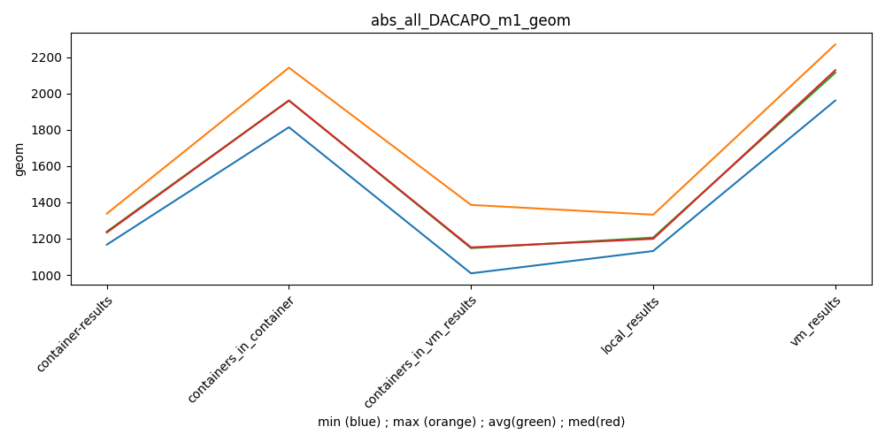
avarage of all keys (benchmark meassured relativre accuracy)
{'MIN': [1168.0, 1815.0, 1010.0, 1133.0, 1962.0], 'MAX': [1339.0, 2143.0, 1387.0, 1333.0, 2271.0], 'AVG': [1239.8279569892472, 1962.4324324324325, 1148.7619047619048, 1207.0459770114942, 2115.1111111111113], 'MED': [1235.0, 1962.0, 1153.0, 1200.0, 2129.0]}
all DACAPO avg where all runs of one jdk are treated as INDIVIDUAL items
MIN 1168.0 container-results
MIN 1815.0 containers_in_container
MIN 1010.0 containers_in_vm_results
MIN 1133.0 local_results
MIN 1962.0 vm_results
MAX 1339.0 container-results
MAX 2143.0 containers_in_container
MAX 1387.0 containers_in_vm_results
MAX 1333.0 local_results
MAX 2271.0 vm_results
AVG 1239.8279569892472 container-results
AVG 1962.4324324324325 containers_in_container
AVG 1148.7619047619048 containers_in_vm_results
AVG 1207.0459770114942 local_results
AVG 2115.1111111111113 vm_results
MED 1235.0 container-results
MED 1962.0 containers_in_container
MED 1153.0 containers_in_vm_results
MED 1200.0 local_results
MED 2129.0 vm_results
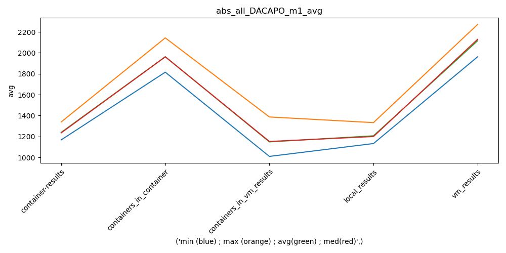
all runs of one jdk were made AVARAGE before processing
geom
all DACAPO geom where all runs of one jdk were made AVARAGE before processing
MIN 1197.4 container-results
MIN 1814.0 containers_in_container
MIN 1026.25 containers_in_vm_results
MIN 1159.2 local_results
MIN 2026.2 vm_results
MAX 1293.2 container-results
MAX 2095.5 containers_in_container
MAX 1223.2 containers_in_vm_results
MAX 1240.4 local_results
MAX 2180.8 vm_results
AVG 1238.4131578947367 container-results
AVG 1952.5175438596493 containers_in_container
AVG 1148.7131578947367 containers_in_vm_results
AVG 1207.0444444444445 local_results
AVG 2113.090740740741 vm_results
MED 1238.8 container-results
MED 1952.5 containers_in_container
MED 1157.0 containers_in_vm_results
MED 1222.4 local_results
MED 2144.6 vm_results
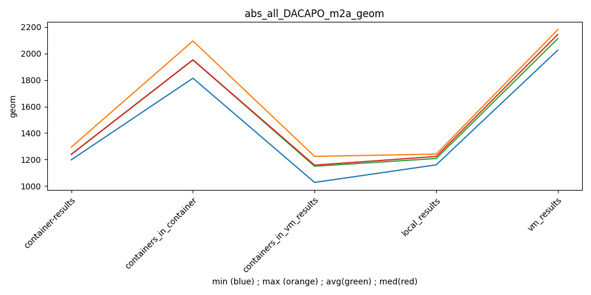
avarage of all keys (benchmark meassured relativre accuracy)
{'MIN': [1198.4, 1815.0, 1027.25, 1160.2, 2027.2], 'MAX': [1294.2, 2096.5, 1224.2, 1241.4, 2181.8], 'AVG': [1239.4131578947367, 1953.5175438596493, 1149.7131578947367, 1208.0444444444445, 2114.090740740741], 'MED': [1239.8, 1953.5, 1158.0, 1223.4, 2145.6]}
all DACAPO avg where all runs of one jdk were made AVARAGE before processing
MIN 1198.4 container-results
MIN 1815.0 containers_in_container
MIN 1027.25 containers_in_vm_results
MIN 1160.2 local_results
MIN 2027.2 vm_results
MAX 1294.2 container-results
MAX 2096.5 containers_in_container
MAX 1224.2 containers_in_vm_results
MAX 1241.4 local_results
MAX 2181.8 vm_results
AVG 1239.4131578947367 container-results
AVG 1953.5175438596493 containers_in_container
AVG 1149.7131578947367 containers_in_vm_results
AVG 1208.0444444444445 local_results
AVG 2114.090740740741 vm_results
MED 1239.8 container-results
MED 1953.5 containers_in_container
MED 1158.0 containers_in_vm_results
MED 1223.4 local_results
MED 2145.6 vm_results

all runs of one jdk were made MEDIAN before processing
geom
all DACAPO geom where all runs of one jdk were made MEDIAN before processing
MIN 1202.0 container-results
MIN 1814.0 containers_in_container
MIN 1024.0 containers_in_vm_results
MIN 1160.0 local_results
MIN 2018.0 vm_results
MAX 1292.0 container-results
MAX 2142.0 containers_in_container
MAX 1247.0 containers_in_vm_results
MAX 1259.0 local_results
MAX 2193.0 vm_results
AVG 1242.6842105263158 container-results
AVG 1973.8947368421052 containers_in_container
AVG 1156.0526315789473 containers_in_vm_results
AVG 1207.5555555555557 local_results
AVG 2112.0555555555557 vm_results
MED 1247.0 container-results
MED 1977.0 containers_in_container
MED 1167.0 containers_in_vm_results
MED 1216.0 local_results
MED 2138.0 vm_results
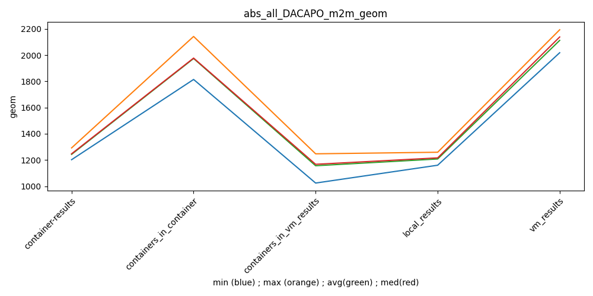
avarage of all keys (benchmark meassured relativre accuracy)
{'MIN': [1203.0, 1815.0, 1025.0, 1161.0, 2019.0], 'MAX': [1293.0, 2143.0, 1248.0, 1260.0, 2194.0], 'AVG': [1243.6842105263158, 1974.8947368421052, 1157.0526315789473, 1208.5555555555557, 2113.0555555555557], 'MED': [1248.0, 1978.0, 1168.0, 1217.0, 2139.0]}
all DACAPO avg where all runs of one jdk were made MEDIAN before processing
MIN 1203.0 container-results
MIN 1815.0 containers_in_container
MIN 1025.0 containers_in_vm_results
MIN 1161.0 local_results
MIN 2019.0 vm_results
MAX 1293.0 container-results
MAX 2143.0 containers_in_container
MAX 1248.0 containers_in_vm_results
MAX 1260.0 local_results
MAX 2194.0 vm_results
AVG 1243.6842105263158 container-results
AVG 1974.8947368421052 containers_in_container
AVG 1157.0526315789473 containers_in_vm_results
AVG 1208.5555555555557 local_results
AVG 2113.0555555555557 vm_results
MED 1248.0 container-results
MED 1978.0 containers_in_container
MED 1168.0 containers_in_vm_results
MED 1217.0 local_results
MED 2139.0 vm_results
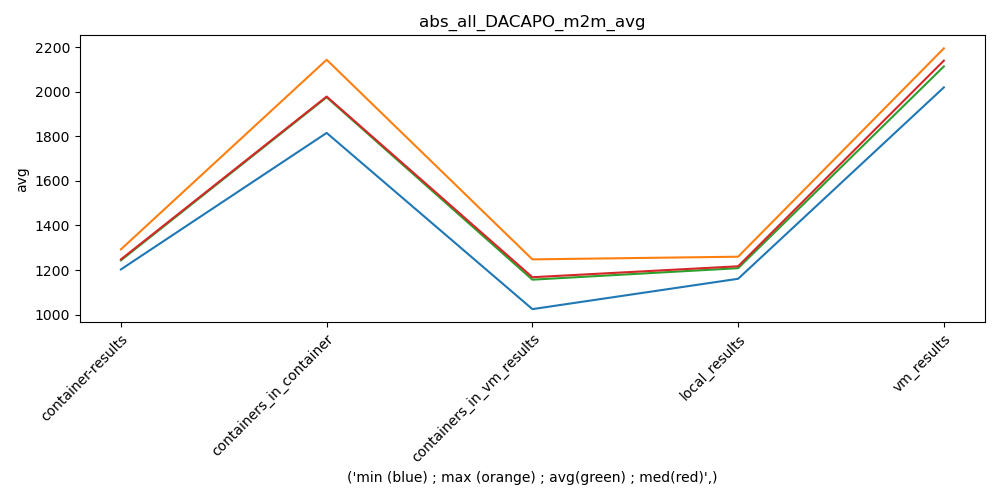
avarage of all metrics from avarages of all keys
{'MIN': [1189.6980693874832, 1814.9999999999993, 1020.7211875508655, 1151.3260475817822, 2002.522048432346], 'MAX': [1308.5595735121808, 2127.386519492699, 1284.4419282162717, 1277.5291306835225, 2215.250780744438], 'AVG': [1240.973619443423, 1963.59534396851, 1151.8366162321122, 1207.8818296348259, 2114.085635912035], 'MED': [1240.9217357606556, 1964.4737739740349, 1159.6499221049169, 1213.4263832622328, 2137.8557695044547]}
all DACAPO avg avg
MIN 1189.6980693874832 container-results
MIN 1814.9999999999993 containers_in_container
MIN 1020.7211875508655 containers_in_vm_results
MIN 1151.3260475817822 local_results
MIN 2002.522048432346 vm_results
MAX 1308.5595735121808 container-results
MAX 2127.386519492699 containers_in_container
MAX 1284.4419282162717 containers_in_vm_results
MAX 1277.5291306835225 local_results
MAX 2215.250780744438 vm_results
AVG 1240.973619443423 container-results
AVG 1963.59534396851 containers_in_container
AVG 1151.8366162321122 containers_in_vm_results
AVG 1207.8818296348259 local_results
AVG 2114.085635912035 vm_results
MED 1240.9217357606556 container-results
MED 1964.4737739740349 containers_in_container
MED 1159.6499221049169 containers_in_vm_results
MED 1213.4263832622328 local_results
MED 2137.8557695044547 vm_results
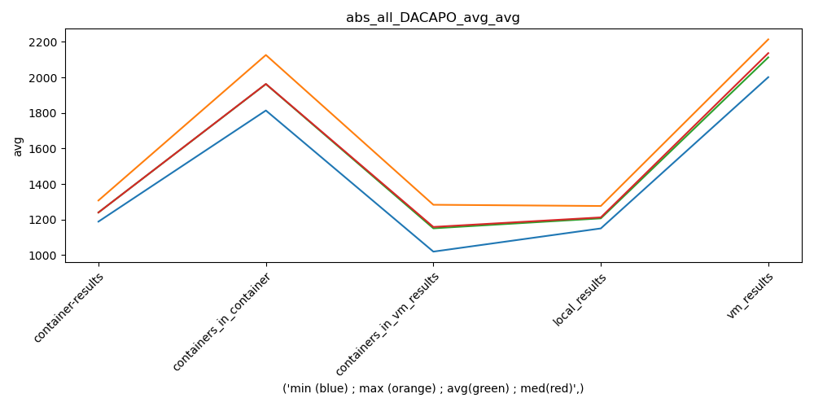
J2DBENCH
all runs of one jdk are treated as INDIVIDUAL items
j2dbench.geom
all J2DBENCH j2dbench.geom where all runs of one jdk are treated as INDIVIDUAL items
MIN 139093.0 container-results
MIN 134665.0 containers_in_container
MIN 93535.0 containers_in_vm_results
MIN 134580.0 local_results
MIN 131593.0 vm_results
MAX 146895.0 container-results
MAX 142535.0 containers_in_container
MAX 104792.0 containers_in_vm_results
MAX 150734.0 local_results
MAX 147284.0 vm_results
AVG 143714.62105263158 container-results
AVG 139230.95698924732 containers_in_container
AVG 100451.84615384616 containers_in_vm_results
AVG 143786.7411764706 local_results
AVG 139990.7380952381 vm_results
MED 143884.0 container-results
MED 139626.0 containers_in_container
MED 102672.0 containers_in_vm_results
MED 146488.0 local_results
MED 142887.0 vm_results
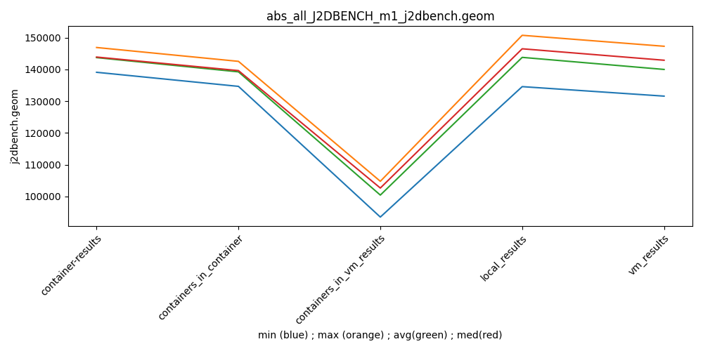
avarage of all keys (benchmark meassured relativre accuracy)
{'MIN': [139094.0, 134666.0, 93536.0, 134581.0, 131594.0], 'MAX': [146896.0, 142536.0, 104793.0, 150735.0, 147285.0], 'AVG': [143715.62105263158, 139231.95698924732, 100452.84615384616, 143787.7411764706, 139991.7380952381], 'MED': [143885.0, 139627.0, 102673.0, 146489.0, 142888.0]}
all J2DBENCH avg where all runs of one jdk are treated as INDIVIDUAL items
MIN 139094.0 container-results
MIN 134666.0 containers_in_container
MIN 93536.0 containers_in_vm_results
MIN 134581.0 local_results
MIN 131594.0 vm_results
MAX 146896.0 container-results
MAX 142536.0 containers_in_container
MAX 104793.0 containers_in_vm_results
MAX 150735.0 local_results
MAX 147285.0 vm_results
AVG 143715.62105263158 container-results
AVG 139231.95698924732 containers_in_container
AVG 100452.84615384616 containers_in_vm_results
AVG 143787.7411764706 local_results
AVG 139991.7380952381 vm_results
MED 143885.0 container-results
MED 139627.0 containers_in_container
MED 102673.0 containers_in_vm_results
MED 146489.0 local_results
MED 142888.0 vm_results
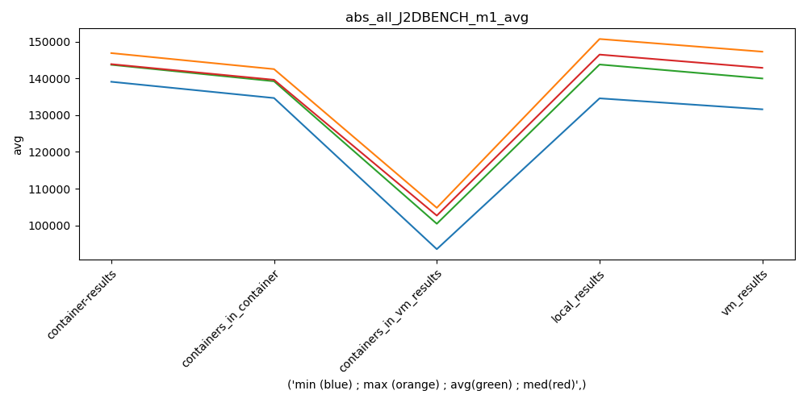
all runs of one jdk were made AVARAGE before processing
j2dbench.geom
all J2DBENCH j2dbench.geom where all runs of one jdk were made AVARAGE before processing
MIN 139277.4 container-results
MIN 134820.6 containers_in_container
MIN 94757.0 containers_in_vm_results
MIN 136486.8 local_results
MIN 132602.4 vm_results
MAX 146767.8 container-results
MAX 142234.0 containers_in_container
MAX 104020.2 containers_in_vm_results
MAX 150637.0 local_results
MAX 147037.8 vm_results
AVG 143714.62105263158 container-results
AVG 139237.75789473683 containers_in_container
AVG 100316.57982456137 containers_in_vm_results
AVG 143786.74117647056 local_results
AVG 140026.3470588235 vm_results
MED 143944.6 container-results
MED 139608.2 containers_in_container
MED 102841.0 containers_in_vm_results
MED 146536.4 local_results
MED 142996.4 vm_results
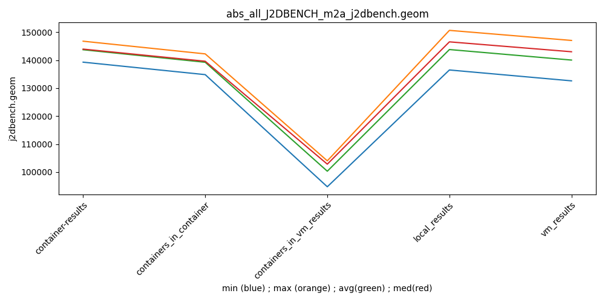
avarage of all keys (benchmark meassured relativre accuracy)
{'MIN': [139278.4, 134821.6, 94758.0, 136487.8, 132603.4], 'MAX': [146768.8, 142235.0, 104021.2, 150638.0, 147038.8], 'AVG': [143715.62105263158, 139238.75789473683, 100317.57982456137, 143787.74117647056, 140027.3470588235], 'MED': [143945.6, 139609.2, 102842.0, 146537.4, 142997.4]}
all J2DBENCH avg where all runs of one jdk were made AVARAGE before processing
MIN 139278.4 container-results
MIN 134821.6 containers_in_container
MIN 94758.0 containers_in_vm_results
MIN 136487.8 local_results
MIN 132603.4 vm_results
MAX 146768.8 container-results
MAX 142235.0 containers_in_container
MAX 104021.2 containers_in_vm_results
MAX 150638.0 local_results
MAX 147038.8 vm_results
AVG 143715.62105263158 container-results
AVG 139238.75789473683 containers_in_container
AVG 100317.57982456137 containers_in_vm_results
AVG 143787.74117647056 local_results
AVG 140027.3470588235 vm_results
MED 143945.6 container-results
MED 139609.2 containers_in_container
MED 102842.0 containers_in_vm_results
MED 146537.4 local_results
MED 142997.4 vm_results
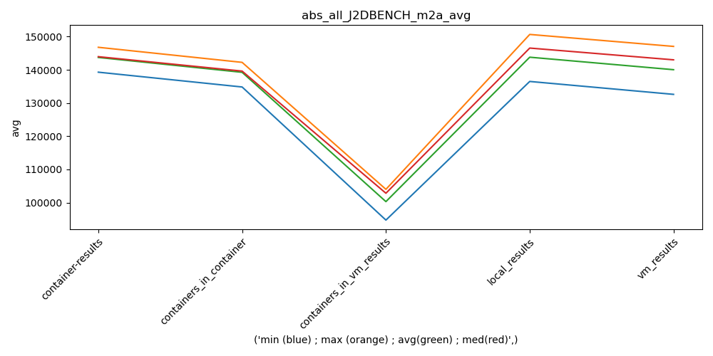
all runs of one jdk were made MEDIAN before processing
j2dbench.geom
all J2DBENCH j2dbench.geom where all runs of one jdk were made MEDIAN before processing
MIN 139241.0 container-results
MIN 134825.0 containers_in_container
MIN 94445.0 containers_in_vm_results
MIN 136016.0 local_results
MIN 132314.0 vm_results
MAX 146740.0 container-results
MAX 142287.0 containers_in_container
MAX 104241.0 containers_in_vm_results
MAX 150697.0 local_results
MAX 147141.0 vm_results
AVG 143716.47368421053 container-results
AVG 139238.63157894736 containers_in_container
AVG 100379.63157894737 containers_in_vm_results
AVG 143885.82352941178 local_results
AVG 140152.23529411765 vm_results
MED 143973.0 container-results
MED 139626.0 containers_in_container
MED 102797.0 containers_in_vm_results
MED 146488.0 local_results
MED 142993.0 vm_results
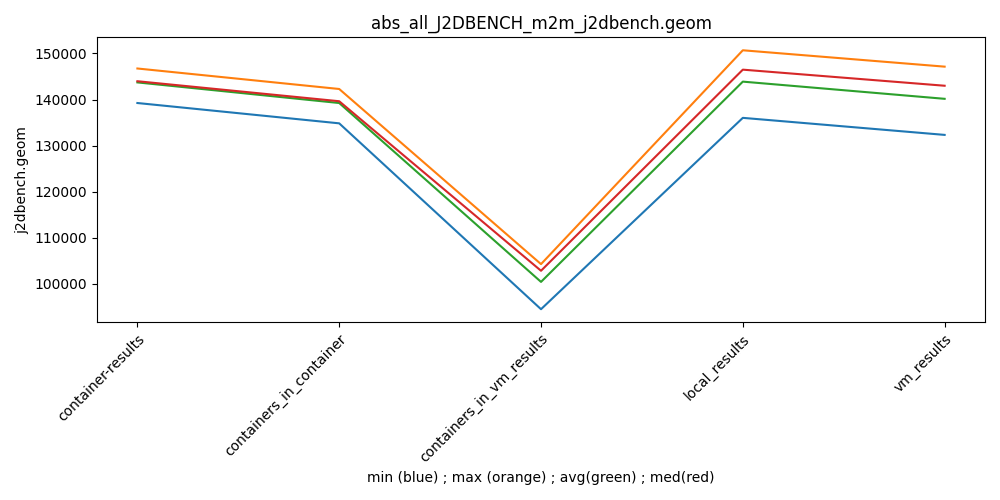
avarage of all keys (benchmark meassured relativre accuracy)
{'MIN': [139242.0, 134826.0, 94446.0, 136017.0, 132315.0], 'MAX': [146741.0, 142288.0, 104242.0, 150698.0, 147142.0], 'AVG': [143717.47368421053, 139239.63157894736, 100380.63157894737, 143886.82352941178, 140153.23529411765], 'MED': [143974.0, 139627.0, 102798.0, 146489.0, 142994.0]}
all J2DBENCH avg where all runs of one jdk were made MEDIAN before processing
MIN 139242.0 container-results
MIN 134826.0 containers_in_container
MIN 94446.0 containers_in_vm_results
MIN 136017.0 local_results
MIN 132315.0 vm_results
MAX 146741.0 container-results
MAX 142288.0 containers_in_container
MAX 104242.0 containers_in_vm_results
MAX 150698.0 local_results
MAX 147142.0 vm_results
AVG 143717.47368421053 container-results
AVG 139239.63157894736 containers_in_container
AVG 100380.63157894737 containers_in_vm_results
AVG 143886.82352941178 local_results
AVG 140153.23529411765 vm_results
MED 143974.0 container-results
MED 139627.0 containers_in_container
MED 102798.0 containers_in_vm_results
MED 146489.0 local_results
MED 142994.0 vm_results
avarage of all metrics from avarages of all keys
{'MIN': [139204.777153803, 134771.17945338172, 94245.2381598187, 135692.83789778376, 132170.1175725384], 'MAX': [146801.91782872274, 142352.93956537402, 104351.56243868265, 150690.3280322802, 147155.23204506116], 'AVG': [143716.23859383757, 139236.7821120498, 100383.67064047448, 143820.76104408453, 140057.42301789697], 'MED': [143934.86188024483, 139621.06641451665, 102770.97506160982, 146505.13155684026, 142959.7909765633]}
all J2DBENCH avg avg
MIN 139204.777153803 container-results
MIN 134771.17945338172 containers_in_container
MIN 94245.2381598187 containers_in_vm_results
MIN 135692.83789778376 local_results
MIN 132170.1175725384 vm_results
MAX 146801.91782872274 container-results
MAX 142352.93956537402 containers_in_container
MAX 104351.56243868265 containers_in_vm_results
MAX 150690.3280322802 local_results
MAX 147155.23204506116 vm_results
AVG 143716.23859383757 container-results
AVG 139236.7821120498 containers_in_container
AVG 100383.67064047448 containers_in_vm_results
AVG 143820.76104408453 local_results
AVG 140057.42301789697 vm_results
MED 143934.86188024483 container-results
MED 139621.06641451665 containers_in_container
MED 102770.97506160982 containers_in_vm_results
MED 146505.13155684026 local_results
MED 142959.7909765633 vm_results
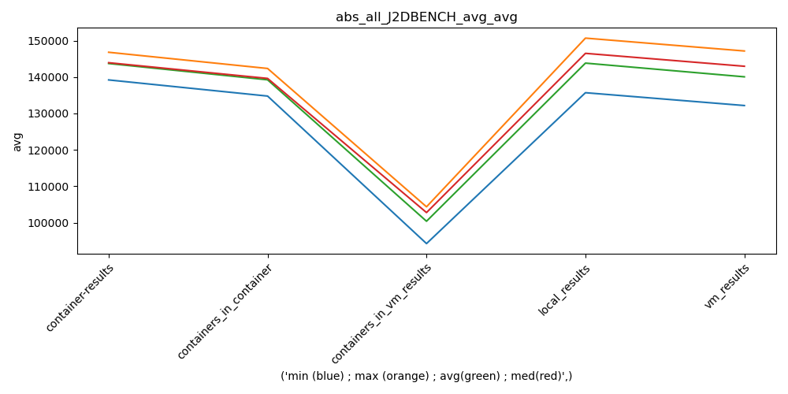
JMH
all runs of one jdk are treated as INDIVIDUAL items
geom
all JMH geom where all runs of one jdk are treated as INDIVIDUAL items
MIN 397.0 container-results
MIN 402.0 containers_in_container
MIN 324.0 containers_in_vm_results
MIN 401.0 local_results
MIN 345.0 vm_results
MAX 439.0 container-results
MAX 439.0 containers_in_container
MAX 357.0 containers_in_vm_results
MAX 465.0 local_results
MAX 372.0 vm_results
AVG 426.0315789473684 container-results
AVG 426.9684210526316 containers_in_container
AVG 337.39784946236557 containers_in_vm_results
AVG 425.5052631578947 local_results
AVG 362.6421052631579 vm_results
MED 427.0 container-results
MED 427.0 containers_in_container
MED 336.0 containers_in_vm_results
MED 424.0 local_results
MED 363.0 vm_results
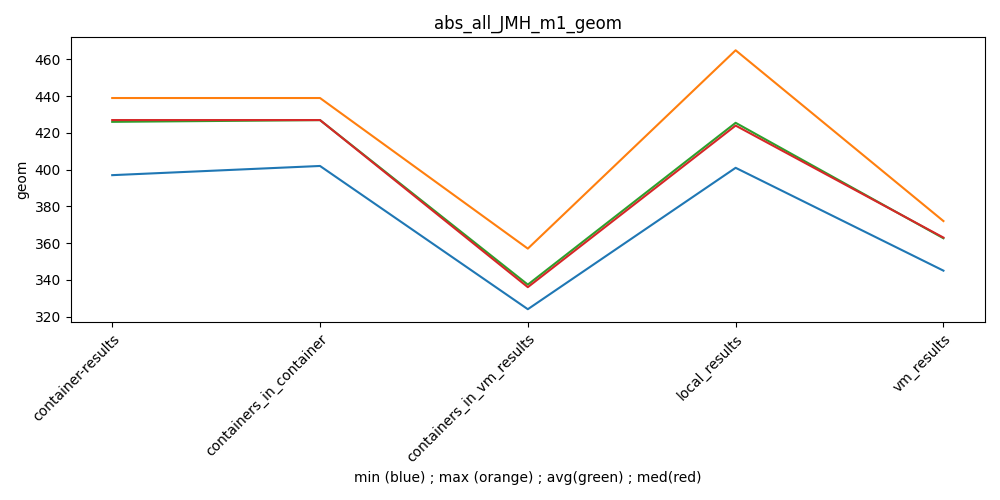
avarage of all keys (benchmark meassured relativre accuracy)
{'MIN': [398.0, 403.0, 325.0, 402.0, 346.0], 'MAX': [440.0, 440.0, 358.0, 466.0, 373.0], 'AVG': [427.0315789473684, 427.9684210526316, 338.39784946236557, 426.5052631578947, 363.6421052631579], 'MED': [428.0, 428.0, 337.0, 425.0, 364.0]}
all JMH avg where all runs of one jdk are treated as INDIVIDUAL items
MIN 398.0 container-results
MIN 403.0 containers_in_container
MIN 325.0 containers_in_vm_results
MIN 402.0 local_results
MIN 346.0 vm_results
MAX 440.0 container-results
MAX 440.0 containers_in_container
MAX 358.0 containers_in_vm_results
MAX 466.0 local_results
MAX 373.0 vm_results
AVG 427.0315789473684 container-results
AVG 427.9684210526316 containers_in_container
AVG 338.39784946236557 containers_in_vm_results
AVG 426.5052631578947 local_results
AVG 363.6421052631579 vm_results
MED 428.0 container-results
MED 428.0 containers_in_container
MED 337.0 containers_in_vm_results
MED 425.0 local_results
MED 364.0 vm_results
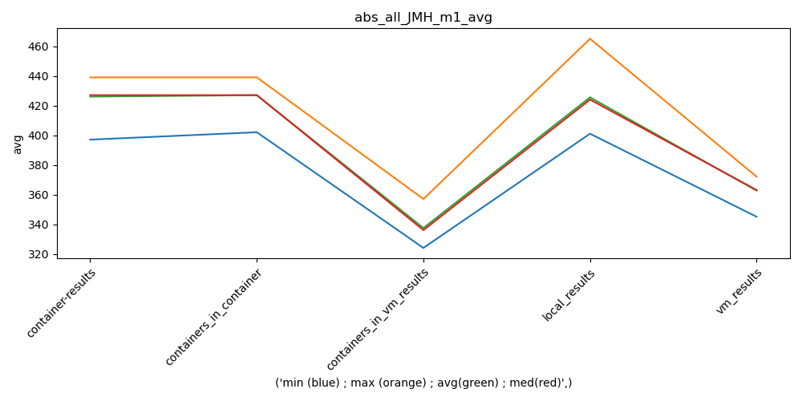
all runs of one jdk were made AVARAGE before processing
geom
all JMH geom where all runs of one jdk were made AVARAGE before processing
MIN 398.8 container-results
MIN 404.0 containers_in_container
MIN 327.0 containers_in_vm_results
MIN 404.0 local_results
MIN 345.8 vm_results
MAX 436.6 container-results
MAX 436.6 containers_in_container
MAX 355.8 containers_in_vm_results
MAX 439.6 local_results
MAX 371.4 vm_results
AVG 426.0315789473684 container-results
AVG 426.9684210526316 containers_in_container
AVG 337.32631578947365 containers_in_vm_results
AVG 425.50526315789483 local_results
AVG 362.6421052631578 vm_results
MED 427.2 container-results
MED 426.8 containers_in_container
MED 336.4 containers_in_vm_results
MED 424.2 local_results
MED 363.6 vm_results
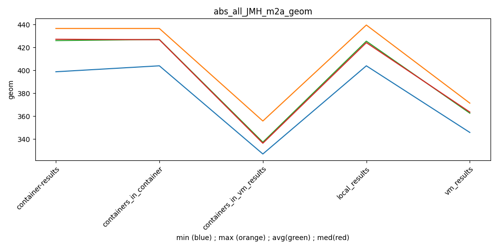
avarage of all keys (benchmark meassured relativre accuracy)
{'MIN': [399.8, 405.0, 328.0, 405.0, 346.8], 'MAX': [437.6, 437.6, 356.8, 440.6, 372.4], 'AVG': [427.0315789473684, 427.9684210526316, 338.32631578947365, 426.50526315789483, 363.6421052631578], 'MED': [428.2, 427.8, 337.4, 425.2, 364.6]}
all JMH avg where all runs of one jdk were made AVARAGE before processing
MIN 399.8 container-results
MIN 405.0 containers_in_container
MIN 328.0 containers_in_vm_results
MIN 405.0 local_results
MIN 346.8 vm_results
MAX 437.6 container-results
MAX 437.6 containers_in_container
MAX 356.8 containers_in_vm_results
MAX 440.6 local_results
MAX 372.4 vm_results
AVG 427.0315789473684 container-results
AVG 427.9684210526316 containers_in_container
AVG 338.32631578947365 containers_in_vm_results
AVG 426.50526315789483 local_results
AVG 363.6421052631578 vm_results
MED 428.2 container-results
MED 427.8 containers_in_container
MED 337.4 containers_in_vm_results
MED 425.2 local_results
MED 364.6 vm_results
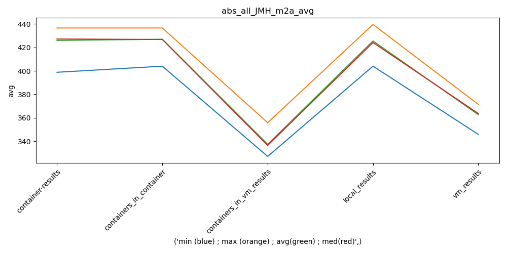
all runs of one jdk were made MEDIAN before processing
geom
all JMH geom where all runs of one jdk were made MEDIAN before processing
MIN 399.0 container-results
MIN 404.0 containers_in_container
MIN 326.0 containers_in_vm_results
MIN 405.0 local_results
MIN 346.0 vm_results
MAX 437.0 container-results
MAX 436.0 containers_in_container
MAX 356.0 containers_in_vm_results
MAX 436.0 local_results
MAX 372.0 vm_results
AVG 426.42105263157896 container-results
AVG 426.8421052631579 containers_in_container
AVG 336.94736842105266 containers_in_vm_results
AVG 424.7368421052632 local_results
AVG 362.7368421052632 vm_results
MED 427.0 container-results
MED 427.0 containers_in_container
MED 335.0 containers_in_vm_results
MED 424.0 local_results
MED 363.0 vm_results
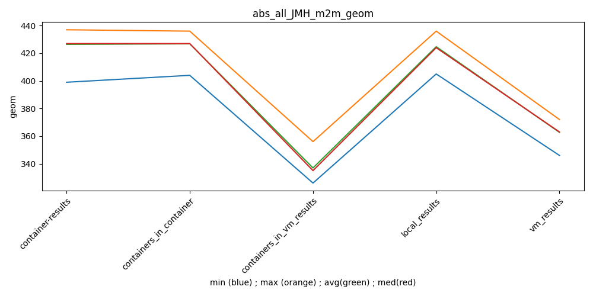
avarage of all keys (benchmark meassured relativre accuracy)
{'MIN': [400.0, 405.0, 327.0, 406.0, 347.0], 'MAX': [438.0, 437.0, 357.0, 437.0, 373.0], 'AVG': [427.42105263157896, 427.8421052631579, 337.94736842105266, 425.7368421052632, 363.7368421052632], 'MED': [428.0, 428.0, 336.0, 425.0, 364.0]}
all JMH avg where all runs of one jdk were made MEDIAN before processing
MIN 400.0 container-results
MIN 405.0 containers_in_container
MIN 327.0 containers_in_vm_results
MIN 406.0 local_results
MIN 347.0 vm_results
MAX 438.0 container-results
MAX 437.0 containers_in_container
MAX 357.0 containers_in_vm_results
MAX 437.0 local_results
MAX 373.0 vm_results
AVG 427.42105263157896 container-results
AVG 427.8421052631579 containers_in_container
AVG 337.94736842105266 containers_in_vm_results
AVG 425.7368421052632 local_results
AVG 363.7368421052632 vm_results
MED 428.0 container-results
MED 428.0 containers_in_container
MED 336.0 containers_in_vm_results
MED 425.0 local_results
MED 364.0 vm_results
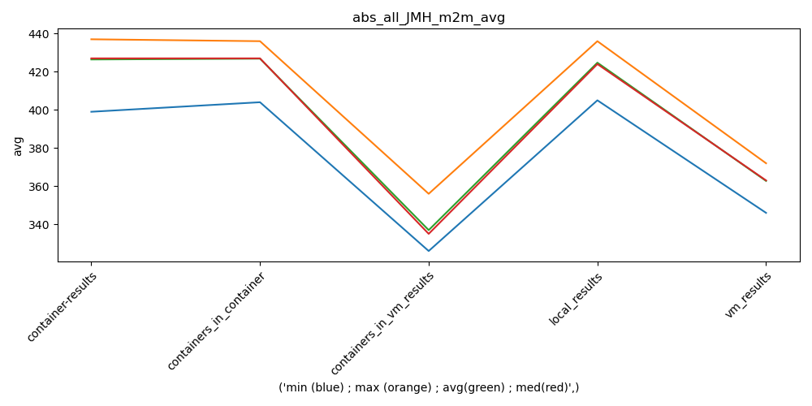
avarage of all metrics from avarages of all keys
{'MIN': [399.26565265997823, 404.33223291901317, 326.66428338304706, 404.3297556055908, 346.5997305840488], 'MAX': [438.5320778808756, 438.19808530850094, 357.2662812604886, 447.6830127709079, 372.79989266545675], 'AVG': [427.16136405997514, 427.9263116463082, 338.22378678214307, 426.2489688262048, 363.67368146858405], 'MED': [428.0666562851455, 427.93332294642056, 336.7994850694466, 425.0666562118833, 364.1998902104115]}
all JMH avg avg
MIN 399.26565265997823 container-results
MIN 404.33223291901317 containers_in_container
MIN 326.66428338304706 containers_in_vm_results
MIN 404.3297556055908 local_results
MIN 346.5997305840488 vm_results
MAX 438.5320778808756 container-results
MAX 438.19808530850094 containers_in_container
MAX 357.2662812604886 containers_in_vm_results
MAX 447.6830127709079 local_results
MAX 372.79989266545675 vm_results
AVG 427.16136405997514 container-results
AVG 427.9263116463082 containers_in_container
AVG 338.22378678214307 containers_in_vm_results
AVG 426.2489688262048 local_results
AVG 363.67368146858405 vm_results
MED 428.0666562851455 container-results
MED 427.93332294642056 containers_in_container
MED 336.7994850694466 containers_in_vm_results
MED 425.0666562118833 local_results
MED 364.1998902104115 vm_results
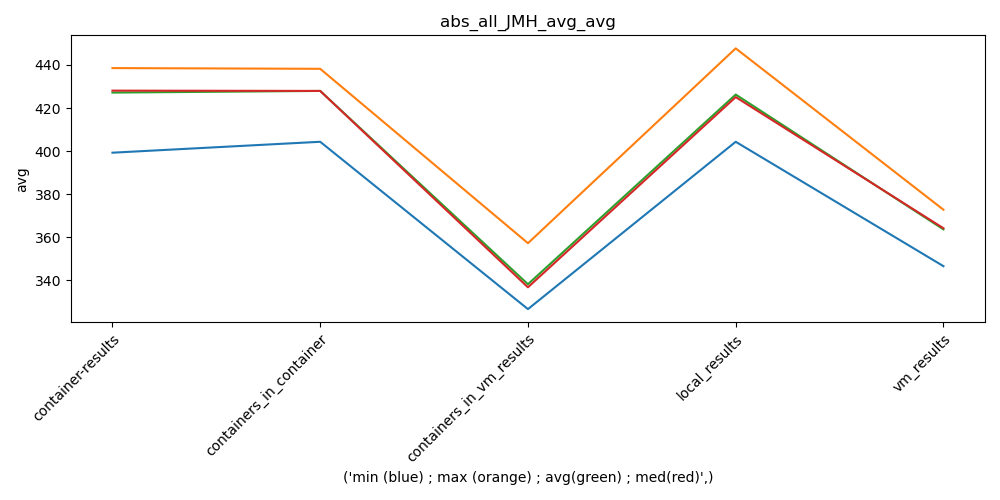
RADARGUNs1
all runs of one jdk are treated as INDIVIDUAL items
BasicOperations.Get.Throughput=
all RADARGUNs1 BasicOperations.Get.Throughput= where all runs of one jdk are treated as INDIVIDUAL items
MIN 2648167.0 container-results
MIN 2691672.0 containers_in_container
MIN 1927367.0 containers_in_vm_results
MIN 2759139.0 local_results
MIN 2040746.0 vm_results
MAX 3380336.0 container-results
MAX 3386946.0 containers_in_container
MAX 2442800.0 containers_in_vm_results
MAX 3353942.0 local_results
MAX 2539158.0 vm_results
AVG 3112453.094736842 container-results
AVG 3150139.815217391 containers_in_container
AVG 2250058.642105263 containers_in_vm_results
AVG 3136321.6352941175 local_results
AVG 2333973.094736842 vm_results
MED 3150473.0 container-results
MED 3214662.0 containers_in_container
MED 2263870.0 containers_in_vm_results
MED 3190506.0 local_results
MED 2349138.0 vm_results
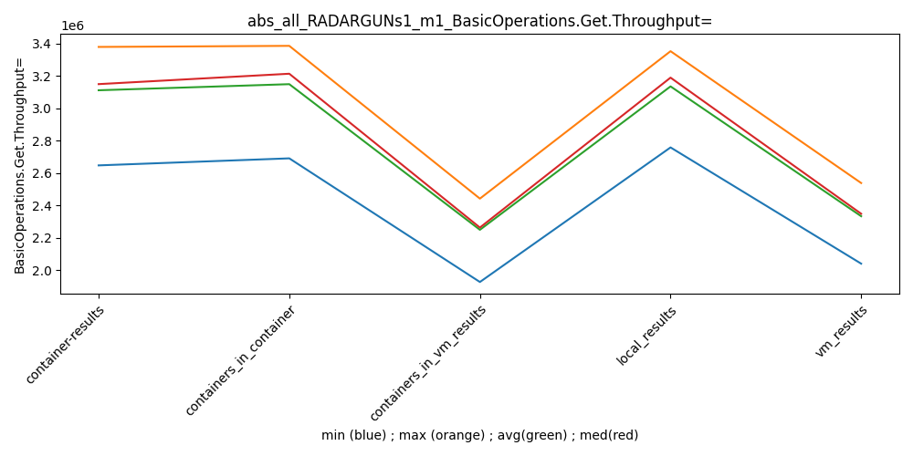
BasicOperations.Get.ResponseTimeMean
all RADARGUNs1 BasicOperations.Get.ResponseTimeMean where all runs of one jdk are treated as INDIVIDUAL items
MIN -1227.0 container-results
MIN -1194.0 containers_in_container
MIN -1758.0 containers_in_vm_results
MIN -1245.0 local_results
MIN -1801.0 vm_results
MAX -1044.0 container-results
MAX -1049.0 containers_in_container
MAX -1486.0 containers_in_vm_results
MAX -1070.0 local_results
MAX -1397.0 vm_results
AVG -1112.7473684210527 container-results
AVG -1112.8804347826087 containers_in_container
AVG -1615.3368421052633 containers_in_vm_results
AVG -1124.9764705882353 local_results
AVG -1517.6421052631579 vm_results
MED -1112.0 container-results
MED -1120.0 containers_in_container
MED -1599.0 containers_in_vm_results
MED -1119.0 local_results
MED -1496.0 vm_results
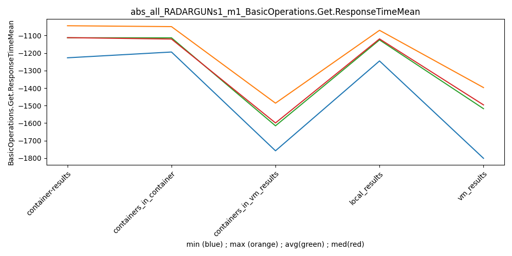
BasicOperations.Put.ResponseTimeMean
all RADARGUNs1 BasicOperations.Put.ResponseTimeMean where all runs of one jdk are treated as INDIVIDUAL items
MIN -4294.0 container-results
MIN -4385.0 containers_in_container
MIN -7065.0 containers_in_vm_results
MIN -4279.0 local_results
MIN -7630.0 vm_results
MAX -3666.0 container-results
MAX -3708.0 containers_in_container
MAX -5813.0 containers_in_vm_results
MAX -3619.0 local_results
MAX -6545.0 vm_results
AVG -3962.3368421052633 container-results
AVG -3972.4891304347825 containers_in_container
AVG -6444.042105263158 containers_in_vm_results
AVG -3935.2823529411767 local_results
AVG -6985.1894736842105 vm_results
MED -3972.0 container-results
MED -3987.0 containers_in_container
MED -6481.0 containers_in_vm_results
MED -3955.0 local_results
MED -6949.0 vm_results
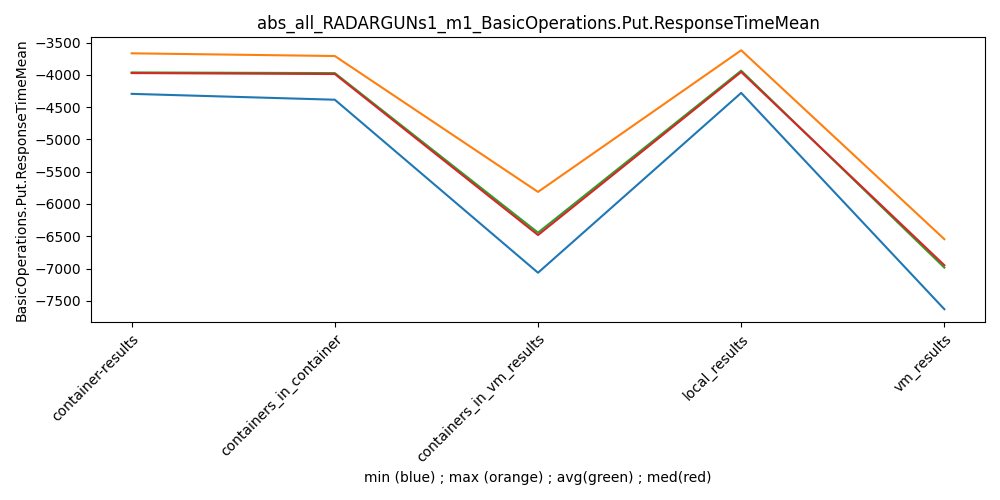
BasicOperations.Put.Throughput=
all RADARGUNs1 BasicOperations.Put.Throughput= where all runs of one jdk are treated as INDIVIDUAL items
MIN 662072.0 container-results
MIN 672844.0 containers_in_container
MIN 481848.0 containers_in_vm_results
MIN 689797.0 local_results
MIN 510215.0 vm_results
MAX 845078.0 container-results
MAX 846769.0 containers_in_container
MAX 610754.0 containers_in_vm_results
MAX 838532.0 local_results
MAX 634818.0 vm_results
AVG 778113.2105263158 container-results
AVG 787535.9130434783 containers_in_container
AVG 562513.6736842105 containers_in_vm_results
AVG 784080.6470588235 local_results
AVG 583491.4421052631 vm_results
MED 787616.0 container-results
MED 803713.0 containers_in_container
MED 565932.0 containers_in_vm_results
MED 797614.0 local_results
MED 587289.0 vm_results
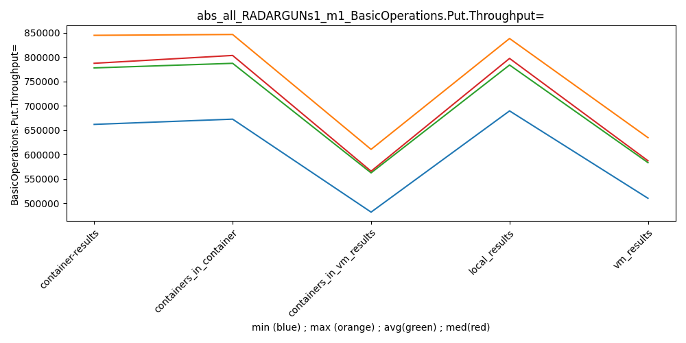
avarage of all keys (benchmark meassured relativre accuracy)
{'MIN': [42.6367049670697, 42.810519394644125, 39.36140461791803, 43.07718136245978, 39.92765946199478], 'MAX': [45.32588052720536, 45.3480240891233, 41.77741837909397, 45.237242098708165, 42.18217099844724], 'AVG': [44.39780618172809, 44.53174414088076, 40.92271137783873, 44.482834595655966, 41.29852476000102], 'MED': [44.53291791974319, 44.758401485269886, 40.98534493963345, 44.673898976556956, 41.3658676137791]}
all RADARGUNs1 avg where all runs of one jdk are treated as INDIVIDUAL items
MIN 42.6367049670697 container-results
MIN 42.810519394644125 containers_in_container
MIN 39.36140461791803 containers_in_vm_results
MIN 43.07718136245978 local_results
MIN 39.92765946199478 vm_results
MAX 45.32588052720536 container-results
MAX 45.3480240891233 containers_in_container
MAX 41.77741837909397 containers_in_vm_results
MAX 45.237242098708165 local_results
MAX 42.18217099844724 vm_results
AVG 44.39780618172809 container-results
AVG 44.53174414088076 containers_in_container
AVG 40.92271137783873 containers_in_vm_results
AVG 44.482834595655966 local_results
AVG 41.29852476000102 vm_results
MED 44.53291791974319 container-results
MED 44.758401485269886 containers_in_container
MED 40.98534493963345 containers_in_vm_results
MED 44.673898976556956 local_results
MED 41.3658676137791 vm_results
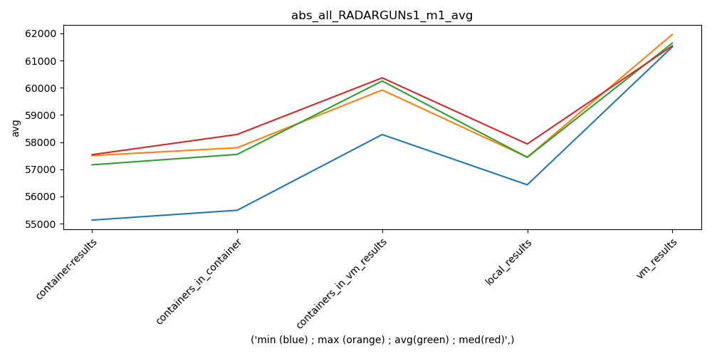
all runs of one jdk were made AVARAGE before processing
BasicOperations.Get.Throughput=
all RADARGUNs1 BasicOperations.Get.Throughput= where all runs of one jdk were made AVARAGE before processing
MIN 2861303.6 container-results
MIN 2922637.0 containers_in_container
MIN 2160122.2 containers_in_vm_results
MIN 2922411.2 local_results
MIN 2199656.2 vm_results
MAX 3267600.0 container-results
MAX 3303063.8 containers_in_container
MAX 2349744.0 containers_in_vm_results
MAX 3291557.6 local_results
MAX 2447311.6 vm_results
AVG 3112453.094736843 container-results
AVG 3148666.2684210525 containers_in_container
AVG 2250058.6421052627 containers_in_vm_results
AVG 3136321.635294118 local_results
AVG 2333973.0947368424 vm_results
MED 3152173.6 container-results
MED 3159471.8 containers_in_container
MED 2255263.6 containers_in_vm_results
MED 3173820.2 local_results
MED 2355622.6 vm_results
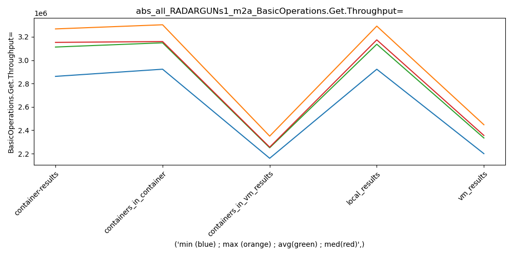
BasicOperations.Get.ResponseTimeMean
all RADARGUNs1 BasicOperations.Get.ResponseTimeMean where all runs of one jdk were made AVARAGE before processing
MIN -1143.0 container-results
MIN -1140.4 containers_in_container
MIN -1669.4 containers_in_vm_results
MIN -1185.4 local_results
MIN -1653.0 vm_results
MAX -1070.8 container-results
MAX -1080.0 containers_in_container
MAX -1531.2 containers_in_vm_results
MAX -1095.6 local_results
MAX -1447.8 vm_results
AVG -1112.7473684210524 container-results
AVG -1113.1684210526316 containers_in_container
AVG -1615.3368421052633 containers_in_vm_results
AVG -1124.9764705882353 local_results
AVG -1517.6421052631576 vm_results
MED -1113.8 container-results
MED -1117.0 containers_in_container
MED -1619.6 containers_in_vm_results
MED -1123.4 local_results
MED -1480.8 vm_results
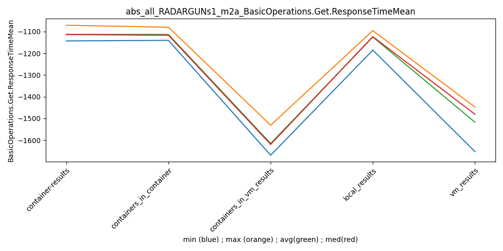
BasicOperations.Put.ResponseTimeMean
all RADARGUNs1 BasicOperations.Put.ResponseTimeMean where all runs of one jdk were made AVARAGE before processing
MIN -4157.0 container-results
MIN -4156.0 containers_in_container
MIN -6658.6 containers_in_vm_results
MIN -4082.0 local_results
MIN -7370.8 vm_results
MAX -3766.4 container-results
MAX -3772.2 containers_in_container
MAX -6070.0 containers_in_vm_results
MAX -3720.2 local_results
MAX -6681.0 vm_results
AVG -3962.336842105263 container-results
AVG -3971.1000000000004 containers_in_container
AVG -6444.042105263158 containers_in_vm_results
AVG -3935.2823529411767 local_results
AVG -6985.1894736842105 vm_results
MED -3975.0 container-results
MED -4009.0 containers_in_container
MED -6504.2 containers_in_vm_results
MED -4010.2 local_results
MED -6906.0 vm_results
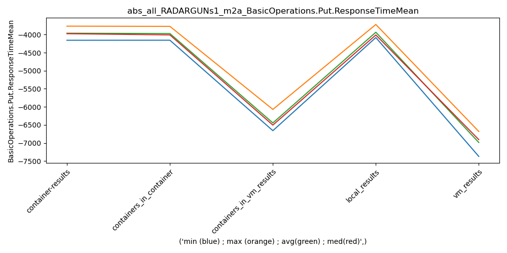
BasicOperations.Put.Throughput=
all RADARGUNs1 BasicOperations.Put.Throughput= where all runs of one jdk were made AVARAGE before processing
MIN 715324.8 container-results
MIN 730686.2 containers_in_container
MIN 540041.6 containers_in_vm_results
MIN 730628.0 local_results
MIN 549914.4 vm_results
MAX 816881.2 container-results
MAX 825771.6 containers_in_container
MAX 587418.6 containers_in_vm_results
MAX 822873.2 local_results
MAX 611807.8 vm_results
AVG 778113.2105263158 container-results
AVG 787169.4105263158 containers_in_container
AVG 562513.6736842105 containers_in_vm_results
AVG 784080.6470588234 local_results
AVG 583491.4421052631 vm_results
MED 788026.0 container-results
MED 789874.6 containers_in_container
MED 563812.0 containers_in_vm_results
MED 793438.8 local_results
MED 588933.8 vm_results
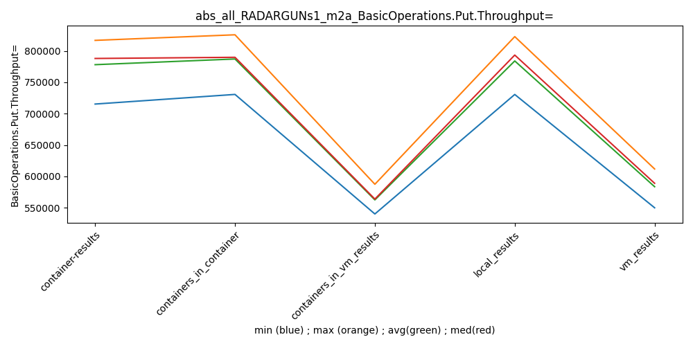
avarage of all keys (benchmark meassured relativre accuracy)
{'MIN': [43.47178540812732, 43.70333052963954, 40.5053306305803, 43.70256678536232, 40.68734442669418], 'MAX': [44.94233093828561, 45.06394915105241, 41.371444835350914, 45.024646411086415, 41.79364534041807], 'AVG': [44.3978061817281, 44.526537273065486, 40.92271137783873, 44.482834595655966, 41.29852476000102], 'MED': [44.53887764848881, 44.56463165732494, 40.946179721075424, 44.615121658606895, 41.39475546940886]}
all RADARGUNs1 avg where all runs of one jdk were made AVARAGE before processing
MIN 43.47178540812732 container-results
MIN 43.70333052963954 containers_in_container
MIN 40.5053306305803 containers_in_vm_results
MIN 43.70256678536232 local_results
MIN 40.68734442669418 vm_results
MAX 44.94233093828561 container-results
MAX 45.06394915105241 containers_in_container
MAX 41.371444835350914 containers_in_vm_results
MAX 45.024646411086415 local_results
MAX 41.79364534041807 vm_results
AVG 44.3978061817281 container-results
AVG 44.526537273065486 containers_in_container
AVG 40.92271137783873 containers_in_vm_results
AVG 44.482834595655966 local_results
AVG 41.29852476000102 vm_results
MED 44.53887764848881 container-results
MED 44.56463165732494 containers_in_container
MED 40.946179721075424 containers_in_vm_results
MED 44.615121658606895 local_results
MED 41.39475546940886 vm_results
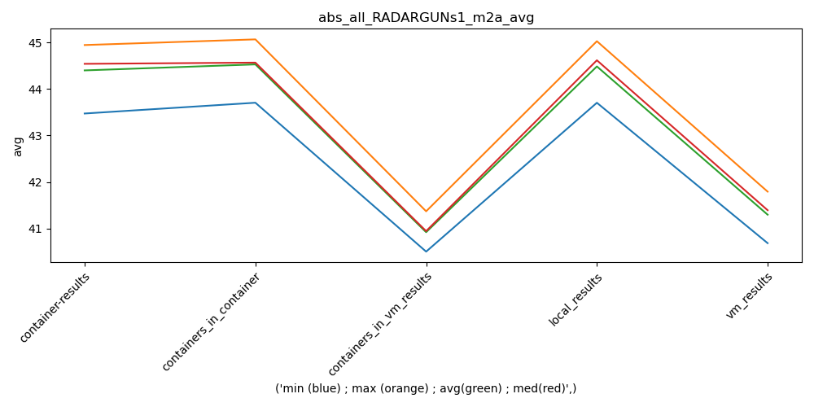
all runs of one jdk were made MEDIAN before processing
BasicOperations.Get.Throughput=
all RADARGUNs1 BasicOperations.Get.Throughput= where all runs of one jdk were made MEDIAN before processing
MIN 2785919.0 container-results
MIN 2783345.0 containers_in_container
MIN 2178538.0 containers_in_vm_results
MIN 2886224.0 local_results
MIN 2182818.0 vm_results
MAX 3280509.0 container-results
MAX 3315766.0 containers_in_container
MAX 2340981.0 containers_in_vm_results
MAX 3288899.0 local_results
MAX 2487703.0 vm_results
AVG 3119340.263157895 container-results
AVG 3182000.210526316 containers_in_container
AVG 2265675.6842105263 containers_in_vm_results
AVG 3157947.0588235296 local_results
AVG 2340093.6842105263 vm_results
MED 3186448.0 container-results
MED 3208048.0 containers_in_container
MED 2273994.0 containers_in_vm_results
MED 3193267.0 local_results
MED 2348213.0 vm_results
BasicOperations.Get.ResponseTimeMean
all RADARGUNs1 BasicOperations.Get.ResponseTimeMean where all runs of one jdk were made MEDIAN before processing
MIN -1146.0 container-results
MIN -1141.0 containers_in_container
MIN -1738.0 containers_in_vm_results
MIN -1185.0 local_results
MIN -1682.0 vm_results
MAX -1064.0 container-results
MAX -1074.0 containers_in_container
MAX -1526.0 containers_in_vm_results
MAX -1086.0 local_results
MAX -1437.0 vm_results
AVG -1111.0 container-results
AVG -1111.842105263158 containers_in_container
AVG -1616.421052631579 containers_in_vm_results
AVG -1123.7058823529412 local_results
AVG -1509.3157894736842 vm_results
MED -1114.0 container-results
MED -1123.0 containers_in_container
MED -1608.0 containers_in_vm_results
MED -1123.0 local_results
MED -1482.0 vm_results
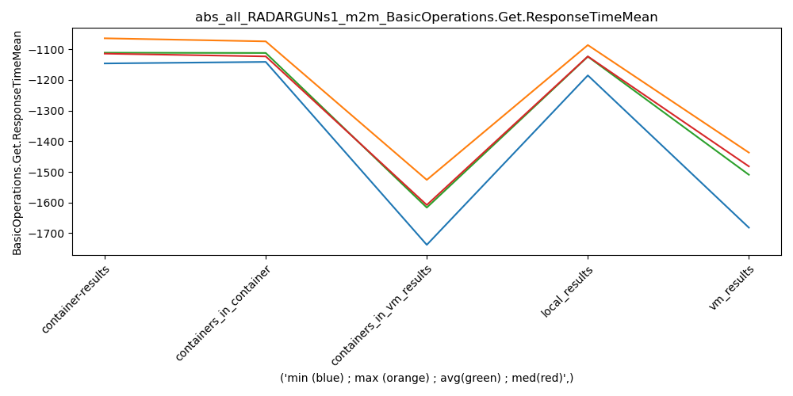
BasicOperations.Put.ResponseTimeMean
all RADARGUNs1 BasicOperations.Put.ResponseTimeMean where all runs of one jdk were made MEDIAN before processing
MIN -4159.0 container-results
MIN -4108.0 containers_in_container
MIN -6675.0 containers_in_vm_results
MIN -4084.0 local_results
MIN -7372.0 vm_results
MAX -3773.0 container-results
MAX -3742.0 containers_in_container
MAX -6025.0 containers_in_vm_results
MAX -3745.0 local_results
MAX -6708.0 vm_results
AVG -3963.4210526315787 container-results
AVG -3966.1052631578946 containers_in_container
AVG -6414.421052631579 containers_in_vm_results
AVG -3917.294117647059 local_results
AVG -6979.473684210527 vm_results
MED -3972.0 container-results
MED -4002.0 containers_in_container
MED -6488.0 containers_in_vm_results
MED -3973.0 local_results
MED -6873.0 vm_results
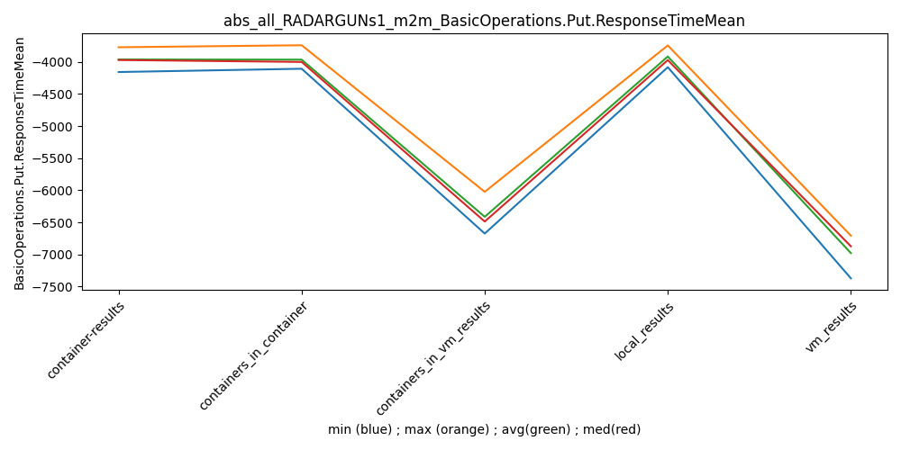
BasicOperations.Put.Throughput=
all RADARGUNs1 BasicOperations.Put.Throughput= where all runs of one jdk were made MEDIAN before processing
MIN 696475.0 container-results
MIN 695902.0 containers_in_container
MIN 544648.0 containers_in_vm_results
MIN 721604.0 local_results
MIN 545652.0 vm_results
MAX 820007.0 container-results
MAX 828964.0 containers_in_container
MAX 585241.0 containers_in_vm_results
MAX 822151.0 local_results
MAX 621959.0 vm_results
AVG 779828.7368421053 container-results
AVG 795505.2631578947 containers_in_container
AVG 566419.947368421 containers_in_vm_results
AVG 789499.9411764706 local_results
AVG 585015.2631578947 vm_results
MED 796587.0 container-results
MED 801977.0 containers_in_container
MED 568478.0 containers_in_vm_results
MED 798340.0 local_results
MED 587088.0 vm_results
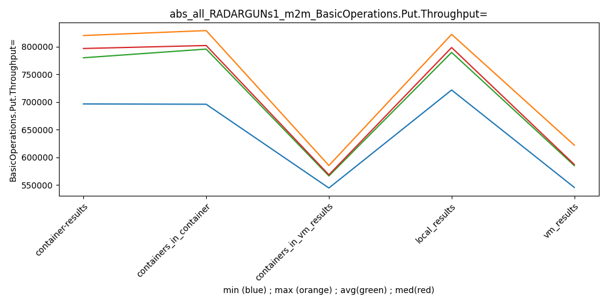
avarage of all keys (benchmark meassured relativre accuracy)
{'MIN': [43.18212229184766, 43.17252227727235, 40.591342975142, 43.56651346442027, 40.608687407232814], 'MAX': [44.9864273311642, 45.10740634552059, 41.33294240994872, 45.01534194661107, 41.965613500080096], 'AVG': [44.422362495349454, 44.64409493490194, 40.99384950876061, 44.55950567606746, 41.32567971617414], 'MED': [44.65960011100102, 44.73505197180794, 41.031217502196505, 44.68361167812265, 41.362208035986896]}
all RADARGUNs1 avg where all runs of one jdk were made MEDIAN before processing
MIN 43.18212229184766 container-results
MIN 43.17252227727235 containers_in_container
MIN 40.591342975142 containers_in_vm_results
MIN 43.56651346442027 local_results
MIN 40.608687407232814 vm_results
MAX 44.9864273311642 container-results
MAX 45.10740634552059 containers_in_container
MAX 41.33294240994872 containers_in_vm_results
MAX 45.01534194661107 local_results
MAX 41.965613500080096 vm_results
AVG 44.422362495349454 container-results
AVG 44.64409493490194 containers_in_container
AVG 40.99384950876061 containers_in_vm_results
AVG 44.55950567606746 local_results
AVG 41.32567971617414 vm_results
MED 44.65960011100102 container-results
MED 44.73505197180794 containers_in_container
MED 41.031217502196505 containers_in_vm_results
MED 44.68361167812265 local_results
MED 41.362208035986896 vm_results
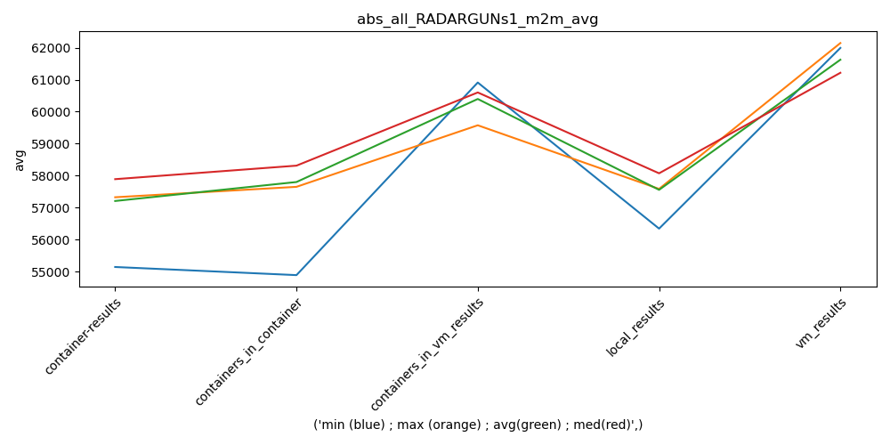
avarage of all metrics from avarages of all keys
{'MIN': [43.09547761087682, 43.22723774560455, 40.148753220230105, 43.447921971872056, 40.40645191088004], 'MAX': [45.08455448984553, 45.17295396056307, 41.49344912405657, 45.09229381970076, 41.98017575359904], 'AVG': [44.40599011095046, 44.56742580602731, 40.94641036104426, 44.50837695305078, 41.30757442887678], 'MED': [44.577093708251226, 44.685944834311236, 40.987565988805144, 44.657533850563084, 41.37427447917688]}
all RADARGUNs1 avg avg
MIN 43.09547761087682 container-results
MIN 43.22723774560455 containers_in_container
MIN 40.148753220230105 containers_in_vm_results
MIN 43.447921971872056 local_results
MIN 40.40645191088004 vm_results
MAX 45.08455448984553 container-results
MAX 45.17295396056307 containers_in_container
MAX 41.49344912405657 containers_in_vm_results
MAX 45.09229381970076 local_results
MAX 41.98017575359904 vm_results
AVG 44.40599011095046 container-results
AVG 44.56742580602731 containers_in_container
AVG 40.94641036104426 containers_in_vm_results
AVG 44.50837695305078 local_results
AVG 41.30757442887678 vm_results
MED 44.577093708251226 container-results
MED 44.685944834311236 containers_in_container
MED 40.987565988805144 containers_in_vm_results
MED 44.657533850563084 local_results
MED 41.37427447917688 vm_results
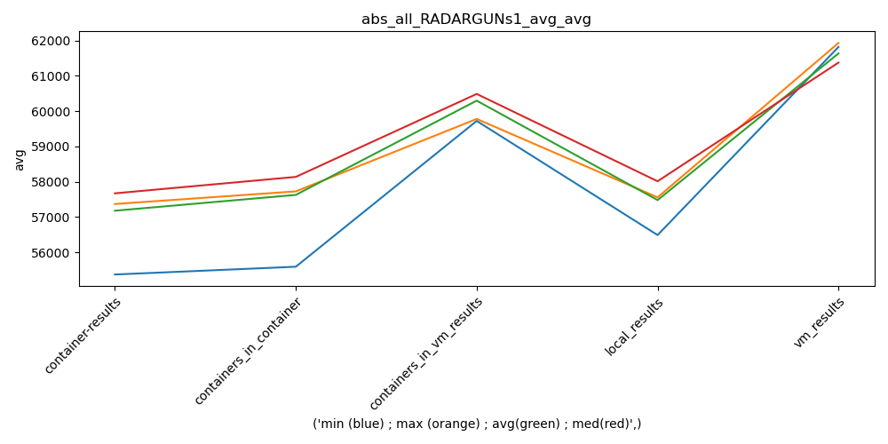
RADARGUNs3
all runs of one jdk are treated as INDIVIDUAL items
BasicOperations.Get.Throughput=
all RADARGUNs3 BasicOperations.Get.Throughput= where all runs of one jdk are treated as INDIVIDUAL items
MIN 87739.0 container-results
MIN 83610.0 containers_in_container
MIN 35188.0 containers_in_vm_results
MIN 85316.0 local_results
MIN 45073.0 vm_results
MAX 97058.0 container-results
MAX 91939.0 containers_in_container
MAX 39074.0 containers_in_vm_results
MAX 98653.0 local_results
MAX 53433.0 vm_results
AVG 91833.33684210526 container-results
AVG 87214.13684210526 containers_in_container
AVG 37034.131868131866 containers_in_vm_results
AVG 91749.92941176471 local_results
AVG 49634.70526315789 vm_results
MED 90814.0 container-results
MED 86493.0 containers_in_container
MED 37066.0 containers_in_vm_results
MED 92024.0 local_results
MED 49615.0 vm_results
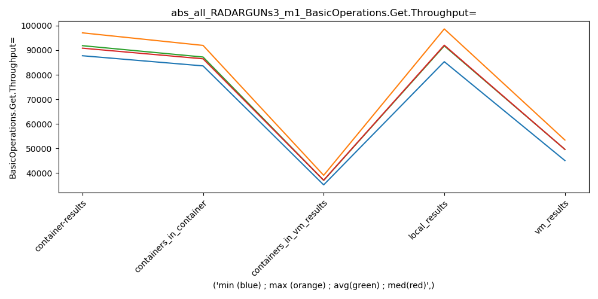
BasicOperations.Get.ResponseTimeMean
all RADARGUNs3 BasicOperations.Get.ResponseTimeMean where all runs of one jdk are treated as INDIVIDUAL items
MIN -65879.0 container-results
MIN -69588.0 containers_in_container
MIN -169475.0 containers_in_vm_results
MIN -67748.0 local_results
MIN -134533.0 vm_results
MAX -60078.0 container-results
MAX -63517.0 containers_in_container
MAX -151597.0 containers_in_vm_results
MAX -58937.0 local_results
MAX -113370.0 vm_results
AVG -63544.82105263158 container-results
AVG -67055.08421052631 containers_in_container
AVG -160532.25274725276 containers_in_vm_results
AVG -63625.717647058824 local_results
AVG -122405.6105263158 vm_results
MED -64365.0 container-results
MED -67576.0 containers_in_container
MED -160340.0 containers_in_vm_results
MED -63584.0 local_results
MED -122131.0 vm_results
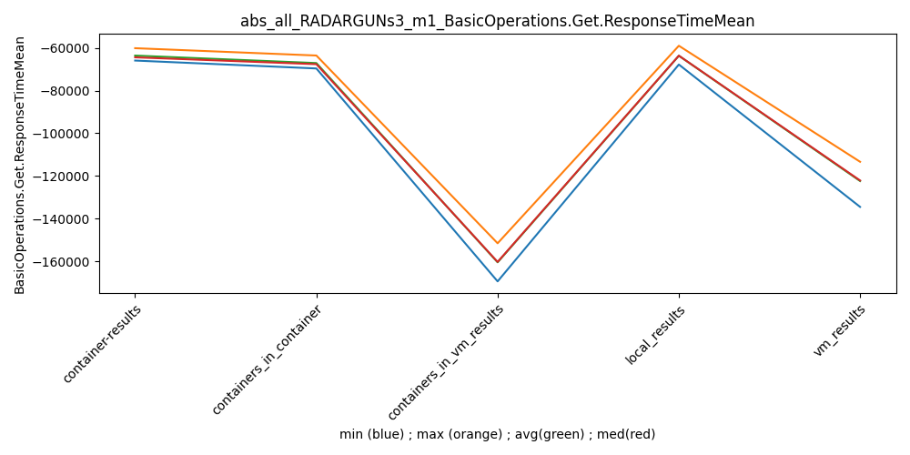
BasicOperations.Put.ResponseTimeMean
all RADARGUNs3 BasicOperations.Put.ResponseTimeMean where all runs of one jdk are treated as INDIVIDUAL items
MIN -273808.0 container-results
MIN -286594.0 containers_in_container
MIN -675993.0 containers_in_vm_results
MIN -282502.0 local_results
MIN -519494.0 vm_results
MAX -244154.0 container-results
MAX -257407.0 containers_in_container
MAX -610465.0 containers_in_vm_results
MAX -240993.0 local_results
MAX -437027.0 vm_results
AVG -258662.38947368422 container-results
AVG -272180.0842105263 containers_in_container
AVG -644907.7582417582 containers_in_vm_results
AVG -260222.9176470588 local_results
AVG -472691.63157894736 vm_results
MED -259772.0 container-results
MED -272844.0 containers_in_container
MED -643841.0 containers_in_vm_results
MED -257664.0 local_results
MED -471874.0 vm_results
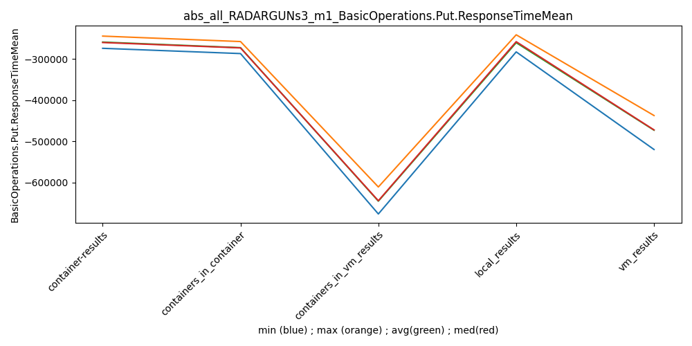
BasicOperations.Put.Throughput=
all RADARGUNs3 BasicOperations.Put.Throughput= where all runs of one jdk are treated as INDIVIDUAL items
MIN 21927.0 container-results
MIN 20898.0 containers_in_container
MIN 8803.0 containers_in_vm_results
MIN 21326.0 local_results
MIN 11268.0 vm_results
MAX 24264.0 container-results
MAX 22989.0 containers_in_container
MAX 9768.0 containers_in_vm_results
MAX 24665.0 local_results
MAX 13360.0 vm_results
AVG 22957.4 container-results
AVG 21803.63157894737 containers_in_container
AVG 9258.307692307691 containers_in_vm_results
AVG 22937.61176470588 local_results
AVG 12408.021052631579 vm_results
MED 22683.0 container-results
MED 21626.0 containers_in_container
MED 9269.0 containers_in_vm_results
MED 23007.0 local_results
MED 12405.0 vm_results
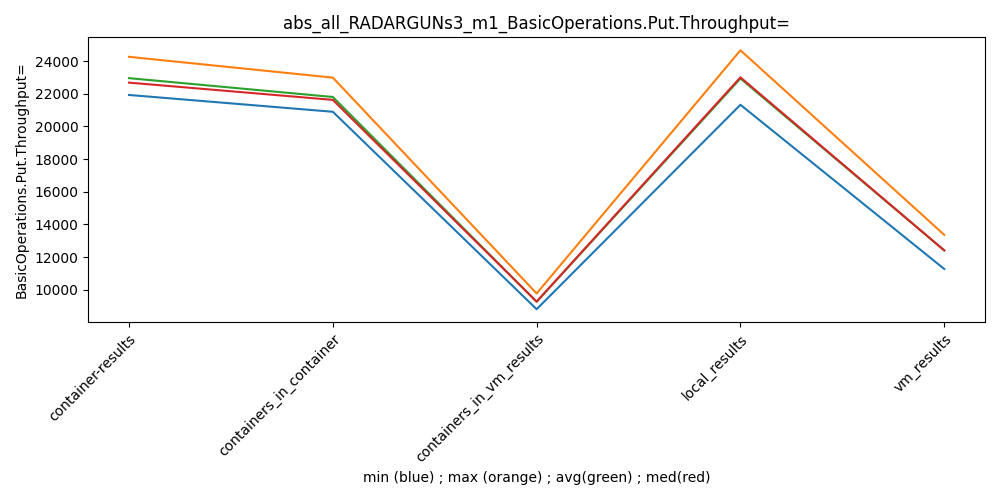
avarage of all keys (benchmark meassured relativre accuracy)
{'MIN': [21.899863089056176, 22.397995678123277, 29.920760683056347, 22.21633629735203, 27.804692031698846], 'MAX': [20.680392105949736, 21.304147965240702, 29.06067690639596, 20.500027205006713, 26.370735731395705], 'AVG': [21.34077997219602, 21.904536331185508, 29.517624842864517, 21.385514698051768, 27.020457809397975], 'MED': [21.42321745409868, 21.953931381222716, 29.504964565916627, 21.30985966175748, 27.006894173525545]}
all RADARGUNs3 avg where all runs of one jdk are treated as INDIVIDUAL items
MIN 21.899863089056176 container-results
MIN 22.397995678123277 containers_in_container
MIN 29.920760683056347 containers_in_vm_results
MIN 22.21633629735203 local_results
MIN 27.804692031698846 vm_results
MAX 20.680392105949736 container-results
MAX 21.304147965240702 containers_in_container
MAX 29.06067690639596 containers_in_vm_results
MAX 20.500027205006713 local_results
MAX 26.370735731395705 vm_results
AVG 21.34077997219602 container-results
AVG 21.904536331185508 containers_in_container
AVG 29.517624842864517 containers_in_vm_results
AVG 21.385514698051768 local_results
AVG 27.020457809397975 vm_results
MED 21.42321745409868 container-results
MED 21.953931381222716 containers_in_container
MED 29.504964565916627 containers_in_vm_results
MED 21.30985966175748 local_results
MED 27.006894173525545 vm_results
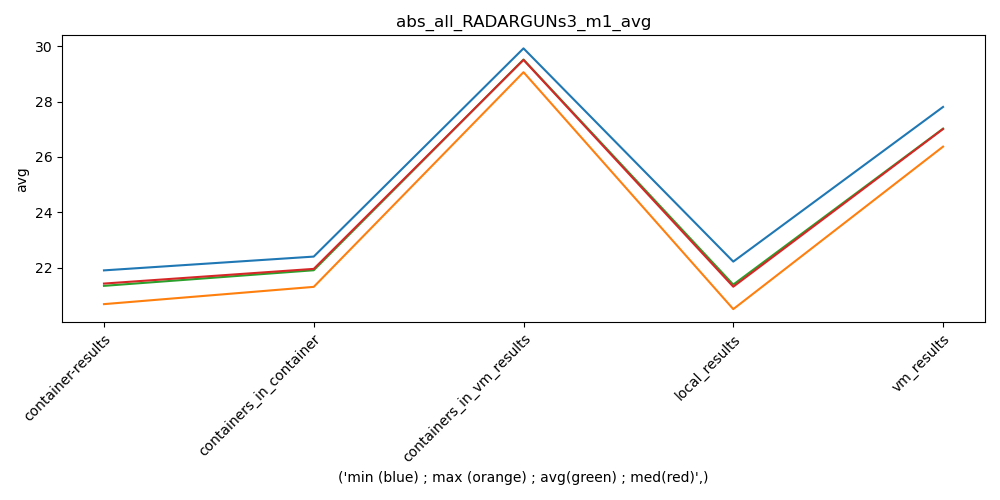
all runs of one jdk were made AVARAGE before processing
BasicOperations.Get.Throughput=
all RADARGUNs3 BasicOperations.Get.Throughput= where all runs of one jdk were made AVARAGE before processing
MIN 88372.6 container-results
MIN 84178.2 containers_in_container
MIN 35880.6 containers_in_vm_results
MIN 86153.2 local_results
MIN 46586.4 vm_results
MAX 96547.0 container-results
MAX 91460.8 containers_in_container
MAX 38282.666666666664 containers_in_vm_results
MAX 98020.8 local_results
MAX 51910.6 vm_results
AVG 91833.33684210526 container-results
AVG 87214.13684210528 containers_in_container
AVG 37050.11929824561 containers_in_vm_results
AVG 91749.92941176471 local_results
AVG 49634.70526315789 vm_results
MED 91027.4 container-results
MED 86544.6 containers_in_container
MED 37131.6 containers_in_vm_results
MED 92005.2 local_results
MED 49716.4 vm_results
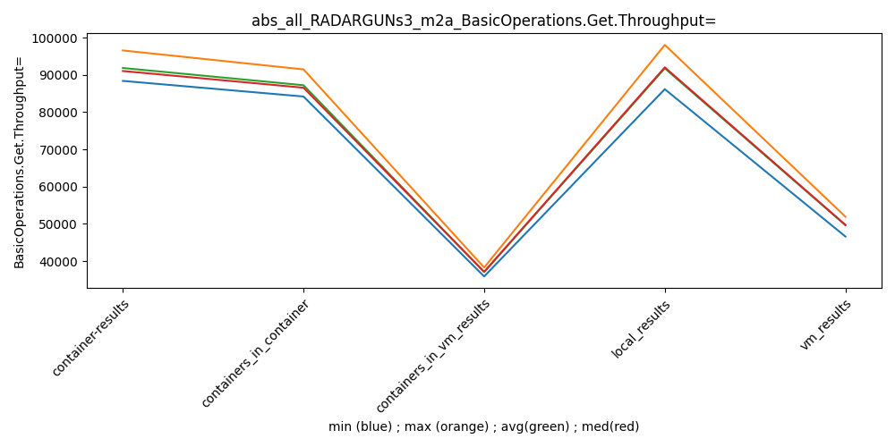
BasicOperations.Get.ResponseTimeMean
all RADARGUNs3 BasicOperations.Get.ResponseTimeMean where all runs of one jdk were made AVARAGE before processing
MIN -65443.6 container-results
MIN -68789.6 containers_in_container
MIN -165422.6 containers_in_vm_results
MIN -67080.6 local_results
MIN -130387.8 vm_results
MAX -60484.8 container-results
MAX -64131.2 containers_in_container
MAX -155344.66666666666 containers_in_vm_results
MAX -59568.8 local_results
MAX -116948.6 vm_results
AVG -63544.82105263158 container-results
AVG -67055.08421052631 containers_in_container
AVG -160476.61403508772 containers_in_vm_results
AVG -63625.717647058824 local_results
AVG -122405.61052631577 vm_results
MED -64268.4 container-results
MED -67560.4 containers_in_container
MED -160134.8 containers_in_vm_results
MED -63607.8 local_results
MED -121934.2 vm_results
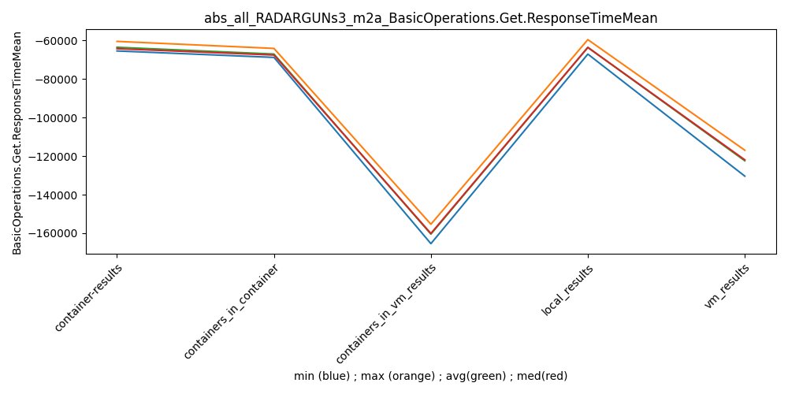
BasicOperations.Put.ResponseTimeMean
all RADARGUNs3 BasicOperations.Put.ResponseTimeMean where all runs of one jdk were made AVARAGE before processing
MIN -271011.4 container-results
MIN -285377.6 containers_in_container
MIN -665989.4 containers_in_vm_results
MIN -279676.2 local_results
MIN -502570.0 vm_results
MAX -245363.4 container-results
MAX -258425.2 containers_in_container
MAX -622153.6666666666 containers_in_vm_results
MAX -242063.6 local_results
MAX -450710.6 vm_results
AVG -258662.38947368422 container-results
AVG -272180.0842105263 containers_in_container
AVG -644600.4842105263 containers_in_vm_results
AVG -260222.91764705884 local_results
AVG -472691.63157894736 vm_results
MED -259151.0 container-results
MED -272649.0 containers_in_container
MED -641453.4 containers_in_vm_results
MED -257406.0 local_results
MED -472884.0 vm_results
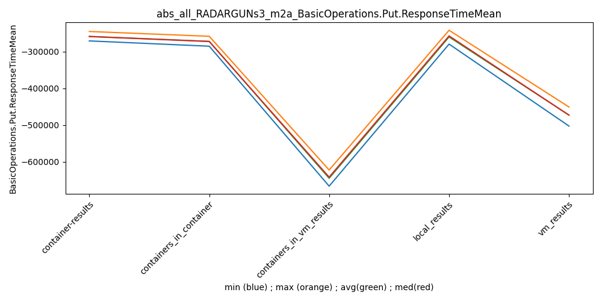
BasicOperations.Put.Throughput=
all RADARGUNs3 BasicOperations.Put.Throughput= where all runs of one jdk were made AVARAGE before processing
MIN 22095.6 container-results
MIN 21041.6 containers_in_container
MIN 8972.8 containers_in_vm_results
MIN 21538.4 local_results
MIN 11644.8 vm_results
MAX 24135.4 container-results
MAX 22870.8 containers_in_container
MAX 9568.333333333334 containers_in_vm_results
MAX 24507.2 local_results
MAX 12977.6 vm_results
AVG 22957.400000000005 container-results
AVG 21803.631578947367 containers_in_container
AVG 9262.20350877193 containers_in_vm_results
AVG 22937.611764705885 local_results
AVG 12408.021052631579 vm_results
MED 22755.0 container-results
MED 21635.8 containers_in_container
MED 9281.6 containers_in_vm_results
MED 22999.8 local_results
MED 12426.6 vm_results
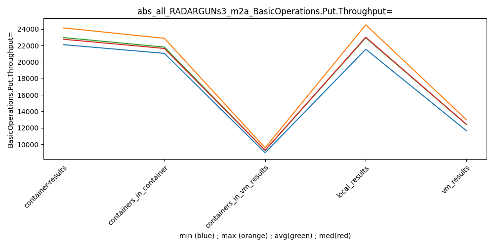
avarage of all keys (benchmark meassured relativre accuracy)
{'MIN': [21.80320246576946, 22.337083238008375, 29.780544425295172, 22.11203108809959, 27.533735467820016], 'MAX': [20.743861665930392, 21.361541635784853, 29.226586897823868, 20.571973565129994, 26.628232417475733], 'AVG': [21.34077997219602, 21.904536331185508, 29.513903109120847, 21.385514698051768, 27.020457809397975], 'MED': [21.39766904793282, 21.947502094605316, 29.478932813616563, 21.304478903782922, 27.015649651256535]}
all RADARGUNs3 avg where all runs of one jdk were made AVARAGE before processing
MIN 21.80320246576946 container-results
MIN 22.337083238008375 containers_in_container
MIN 29.780544425295172 containers_in_vm_results
MIN 22.11203108809959 local_results
MIN 27.533735467820016 vm_results
MAX 20.743861665930392 container-results
MAX 21.361541635784853 containers_in_container
MAX 29.226586897823868 containers_in_vm_results
MAX 20.571973565129994 local_results
MAX 26.628232417475733 vm_results
AVG 21.34077997219602 container-results
AVG 21.904536331185508 containers_in_container
AVG 29.513903109120847 containers_in_vm_results
AVG 21.385514698051768 local_results
AVG 27.020457809397975 vm_results
MED 21.39766904793282 container-results
MED 21.947502094605316 containers_in_container
MED 29.478932813616563 containers_in_vm_results
MED 21.304478903782922 local_results
MED 27.015649651256535 vm_results
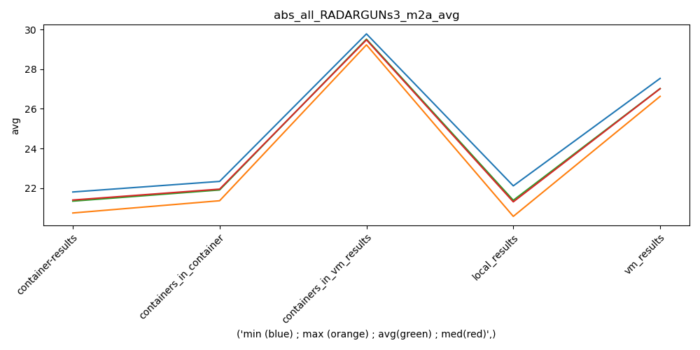
all runs of one jdk were made MEDIAN before processing
BasicOperations.Get.Throughput=
all RADARGUNs3 BasicOperations.Get.Throughput= where all runs of one jdk were made MEDIAN before processing
MIN 88380.0 container-results
MIN 84133.0 containers_in_container
MIN 35749.0 containers_in_vm_results
MIN 86045.0 local_results
MIN 46355.0 vm_results
MAX 96570.0 container-results
MAX 91381.0 containers_in_container
MAX 38172.0 containers_in_vm_results
MAX 97812.0 local_results
MAX 52408.0 vm_results
AVG 91824.68421052632 container-results
AVG 87212.21052631579 containers_in_container
AVG 37073.47368421053 containers_in_vm_results
AVG 91747.82352941176 local_results
AVG 49884.15789473684 vm_results
MED 90814.0 container-results
MED 86490.0 containers_in_container
MED 37238.0 containers_in_vm_results
MED 92095.0 local_results
MED 49881.0 vm_results
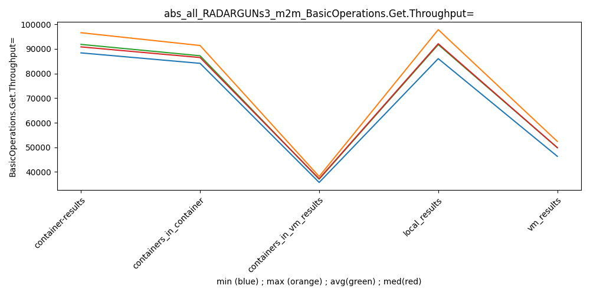
BasicOperations.Get.ResponseTimeMean
all RADARGUNs3 BasicOperations.Get.ResponseTimeMean where all runs of one jdk were made MEDIAN before processing
MIN -65751.0 container-results
MIN -68914.0 containers_in_container
MIN -165606.0 containers_in_vm_results
MIN -67162.0 local_results
MIN -130740.0 vm_results
MAX -60613.0 container-results
MAX -64223.0 containers_in_container
MAX -155328.0 containers_in_vm_results
MAX -59702.0 local_results
MAX -116443.0 vm_results
AVG -63582.05263157895 container-results
AVG -67077.42105263157 containers_in_container
AVG -160407.36842105264 containers_in_vm_results
AVG -63627.882352941175 local_results
AVG -121742.73684210527 vm_results
MED -64365.0 container-results
MED -67627.0 containers_in_container
MED -159645.0 containers_in_vm_results
MED -63451.0 local_results
MED -121685.0 vm_results

BasicOperations.Put.ResponseTimeMean
all RADARGUNs3 BasicOperations.Put.ResponseTimeMean where all runs of one jdk were made MEDIAN before processing
MIN -270718.0 container-results
MIN -285257.0 containers_in_container
MIN -670610.0 containers_in_vm_results
MIN -279819.0 local_results
MIN -505390.0 vm_results
MAX -244938.0 container-results
MAX -258832.0 containers_in_container
MAX -623482.0 containers_in_vm_results
MAX -241563.0 local_results
MAX -446167.0 vm_results
AVG -258513.42105263157 container-results
AVG -272115.3157894737 containers_in_container
AVG -643711.947368421 containers_in_vm_results
AVG -260210.23529411765 local_results
AVG -470363.0 vm_results
MED -259725.0 container-results
MED -272844.0 containers_in_container
MED -640370.0 containers_in_vm_results
MED -257664.0 local_results
MED -467849.0 vm_results
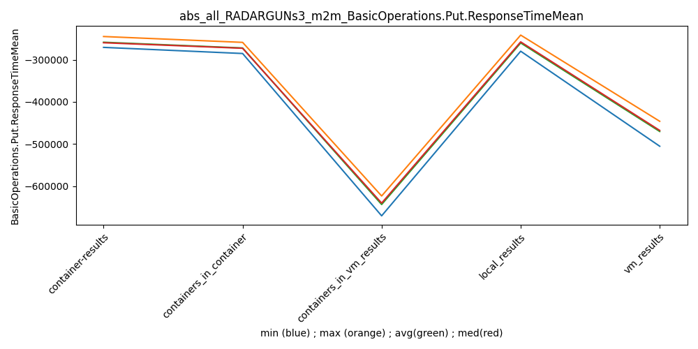
BasicOperations.Put.Throughput=
all RADARGUNs3 BasicOperations.Put.Throughput= where all runs of one jdk were made MEDIAN before processing
MIN 22107.0 container-results
MIN 21035.0 containers_in_container
MIN 8935.0 containers_in_vm_results
MIN 21502.0 local_results
MIN 11584.0 vm_results
MAX 24143.0 container-results
MAX 22848.0 containers_in_container
MAX 9549.0 containers_in_vm_results
MAX 24458.0 local_results
MAX 13100.0 vm_results
AVG 22955.36842105263 container-results
AVG 21804.42105263158 containers_in_container
AVG 9269.21052631579 containers_in_vm_results
AVG 22936.882352941175 local_results
AVG 12469.78947368421 vm_results
MED 22683.0 container-results
MED 21618.0 containers_in_container
MED 9310.0 containers_in_vm_results
MED 23023.0 local_results
MED 12469.0 vm_results
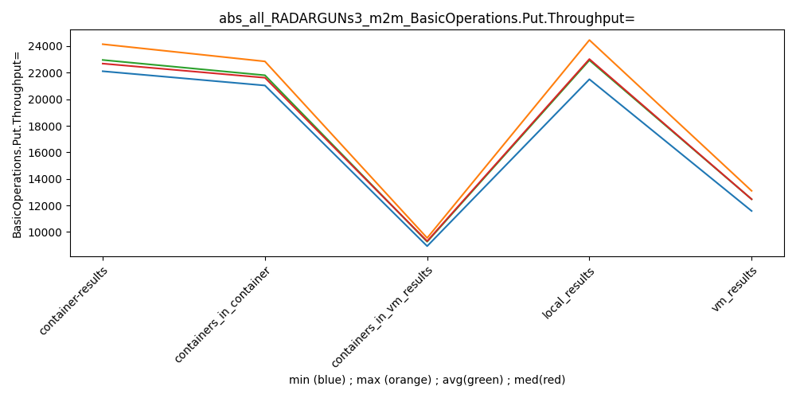
avarage of all keys (benchmark meassured relativre accuracy)
{'MIN': [21.803086688356192, 22.33833033158481, 29.82750877379917, 22.120554116265545, 27.57513479246473], 'MAX': [20.734674773069546, 21.37694414643726, 29.241013000775656, 20.56883140032058, 26.55285104558248], 'AVG': [21.338180194983977, 21.90355399140225, 29.504289367471472, 21.385318325345782, 26.97850645071166], 'MED': [21.422022310414594, 21.955396090150053, 29.46225030799966, 21.304173820369687, 26.945754539824417]}
all RADARGUNs3 avg where all runs of one jdk were made MEDIAN before processing
MIN 21.803086688356192 container-results
MIN 22.33833033158481 containers_in_container
MIN 29.82750877379917 containers_in_vm_results
MIN 22.120554116265545 local_results
MIN 27.57513479246473 vm_results
MAX 20.734674773069546 container-results
MAX 21.37694414643726 containers_in_container
MAX 29.241013000775656 containers_in_vm_results
MAX 20.56883140032058 local_results
MAX 26.55285104558248 vm_results
AVG 21.338180194983977 container-results
AVG 21.90355399140225 containers_in_container
AVG 29.504289367471472 containers_in_vm_results
AVG 21.385318325345782 local_results
AVG 26.97850645071166 vm_results
MED 21.422022310414594 container-results
MED 21.955396090150053 containers_in_container
MED 29.46225030799966 containers_in_vm_results
MED 21.304173820369687 local_results
MED 26.945754539824417 vm_results
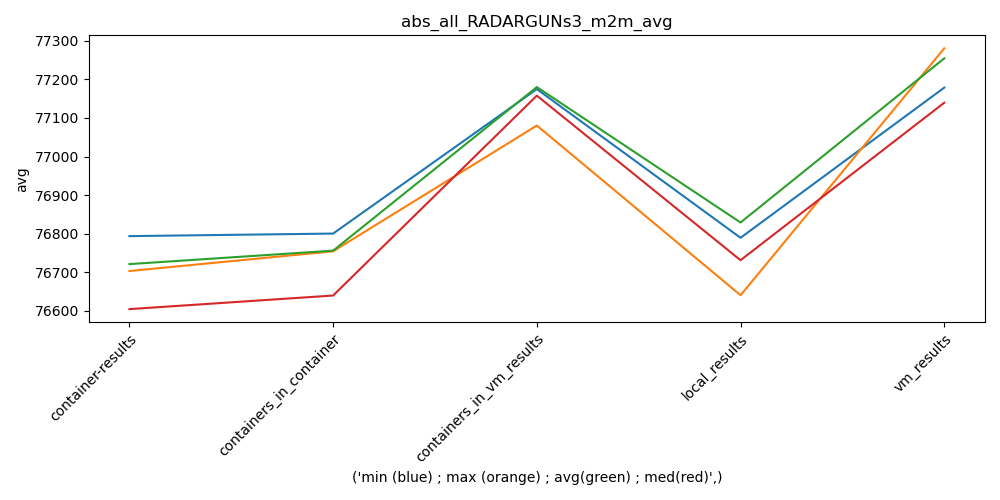
avarage of all metrics from avarages of all keys
{'MIN': [21.835336526783202, 22.357785024029525, 29.842881094176988, 22.14959006903671, 27.63759762028465], 'MAX': [20.719623908864204, 21.347521588473107, 29.17597738471746, 20.54691721398531, 26.517052486055757], 'AVG': [21.339913344599605, 21.90420887969603, 29.511938571621837, 21.385449240282746, 27.006466779949243], 'MED': [21.414299700933572, 21.952276254232554, 29.4820439902483, 21.306170635279518, 26.98941487071498]}
all RADARGUNs3 avg avg
MIN 21.835336526783202 container-results
MIN 22.357785024029525 containers_in_container
MIN 29.842881094176988 containers_in_vm_results
MIN 22.14959006903671 local_results
MIN 27.63759762028465 vm_results
MAX 20.719623908864204 container-results
MAX 21.347521588473107 containers_in_container
MAX 29.17597738471746 containers_in_vm_results
MAX 20.54691721398531 local_results
MAX 26.517052486055757 vm_results
AVG 21.339913344599605 container-results
AVG 21.90420887969603 containers_in_container
AVG 29.511938571621837 containers_in_vm_results
AVG 21.385449240282746 local_results
AVG 27.006466779949243 vm_results
MED 21.414299700933572 container-results
MED 21.952276254232554 containers_in_container
MED 29.4820439902483 containers_in_vm_results
MED 21.306170635279518 local_results
MED 26.98941487071498 vm_results
SPECJBB
all runs of one jdk are treated as INDIVIDUAL items
jbb2015.result.metric.max-jOPS
all SPECJBB jbb2015.result.metric.max-jOPS where all runs of one jdk are treated as INDIVIDUAL items
MIN 8580.0 container-results
MIN 8612.0 containers_in_container
MIN 6037.0 containers_in_vm_results
MIN 8612.0 local_results
MIN 5635.0 vm_results
MAX 10793.0 container-results
MAX 11208.0 containers_in_container
MAX 8117.0 containers_in_vm_results
MAX 11208.0 local_results
MAX 7808.0 vm_results
AVG 9824.988235294117 container-results
AVG 10038.0 containers_in_container
AVG 7025.694117647059 containers_in_vm_results
AVG 10100.64705882353 local_results
AVG 6891.2 vm_results
MED 9855.0 container-results
MED 9931.0 containers_in_container
MED 6695.0 containers_in_vm_results
MED 9931.0 local_results
MED 6842.0 vm_results
jbb2015.result.metric.critical-jOPS
all SPECJBB jbb2015.result.metric.critical-jOPS where all runs of one jdk are treated as INDIVIDUAL items
MIN 1924.0 container-results
MIN 1847.0 containers_in_container
MIN 1510.0 containers_in_vm_results
MIN 1957.0 local_results
MIN 1130.0 vm_results
MAX 3696.0 container-results
MAX 3659.0 containers_in_container
MAX 2423.0 containers_in_vm_results
MAX 3719.0 local_results
MAX 2044.0 vm_results
AVG 2623.3882352941177 container-results
AVG 2644.576470588235 containers_in_container
AVG 1972.6470588235295 containers_in_vm_results
AVG 2684.0117647058823 local_results
AVG 1654.6705882352942 vm_results
MED 2338.0 container-results
MED 2381.0 containers_in_container
MED 1921.0 containers_in_vm_results
MED 2391.0 local_results
MED 1705.0 vm_results
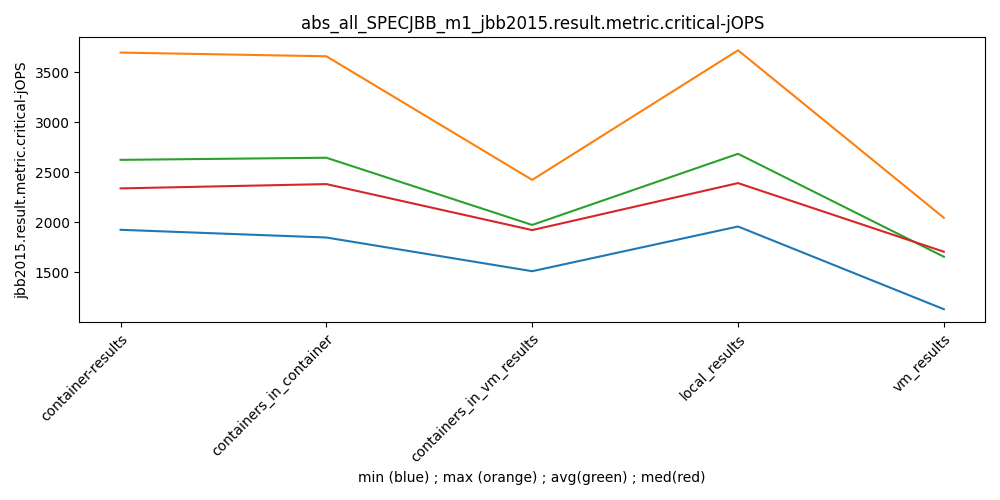
avarage of all keys (benchmark meassured relativre accuracy)
{'MIN': [102.49390225764652, 102.27414140436477, 86.87922651589389, 102.810505299799, 82.25569889071517], 'MAX': [120.37441588643328, 121.93440859740946, 102.66937225872184, 122.18019479441011, 99.2622788374315], 'AVG': [111.5767738850171, 112.62138549400036, 94.86485743662186, 113.07368758260877, 92.4492865750477], 'MED': [110.42644610780518, 110.96395811253309, 92.82779756085996, 111.00900864344298, 92.45539465060976]}
all SPECJBB avg where all runs of one jdk are treated as INDIVIDUAL items
MIN 102.49390225764652 container-results
MIN 102.27414140436477 containers_in_container
MIN 86.87922651589389 containers_in_vm_results
MIN 102.810505299799 local_results
MIN 82.25569889071517 vm_results
MAX 120.37441588643328 container-results
MAX 121.93440859740946 containers_in_container
MAX 102.66937225872184 containers_in_vm_results
MAX 122.18019479441011 local_results
MAX 99.2622788374315 vm_results
AVG 111.5767738850171 container-results
AVG 112.62138549400036 containers_in_container
AVG 94.86485743662186 containers_in_vm_results
AVG 113.07368758260877 local_results
AVG 92.4492865750477 vm_results
MED 110.42644610780518 container-results
MED 110.96395811253309 containers_in_container
MED 92.82779756085996 containers_in_vm_results
MED 111.00900864344298 local_results
MED 92.45539465060976 vm_results
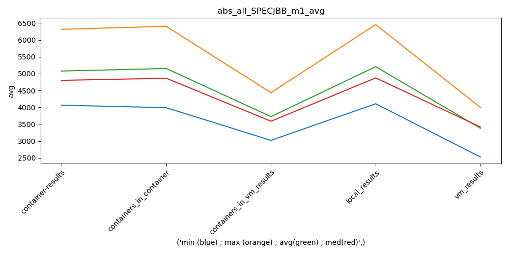
all runs of one jdk were made AVARAGE before processing
jbb2015.result.metric.max-jOPS
all SPECJBB jbb2015.result.metric.max-jOPS where all runs of one jdk were made AVARAGE before processing
MIN 8651.0 container-results
MIN 8906.8 containers_in_container
MIN 6214.4 containers_in_vm_results
MIN 8935.6 local_results
MIN 5860.2 vm_results
MAX 10654.2 container-results
MAX 11069.6 containers_in_container
MAX 7904.8 containers_in_vm_results
MAX 11097.4 local_results
MAX 7652.4 vm_results
AVG 9824.98823529412 container-results
AVG 10038.0 containers_in_container
AVG 7025.694117647059 containers_in_vm_results
AVG 10100.64705882353 local_results
AVG 6891.2 vm_results
MED 9885.2 container-results
MED 9843.2 containers_in_container
MED 6687.2 containers_in_vm_results
MED 9954.4 local_results
MED 6842.4 vm_results

jbb2015.result.metric.critical-jOPS
all SPECJBB jbb2015.result.metric.critical-jOPS where all runs of one jdk were made AVARAGE before processing
MIN 2178.4 container-results
MIN 2166.0 containers_in_container
MIN 1608.2 containers_in_vm_results
MIN 2210.2 local_results
MIN 1251.0 vm_results
MAX 3619.6 container-results
MAX 3577.2 containers_in_container
MAX 2371.2 containers_in_vm_results
MAX 3599.8 local_results
MAX 1991.2 vm_results
AVG 2623.388235294118 container-results
AVG 2644.576470588235 containers_in_container
AVG 1972.647058823529 containers_in_vm_results
AVG 2684.011764705883 local_results
AVG 1654.6705882352944 vm_results
MED 2297.0 container-results
MED 2300.2 containers_in_container
MED 1942.0 containers_in_vm_results
MED 2339.6 local_results
MED 1697.6 vm_results
avarage of all keys (benchmark meassured relativre accuracy)
{'MIN': [104.06920774177154, 105.23212437274086, 88.4511164429257, 105.57840688322588, 84.33386034090933], 'MAX': [119.47719447660295, 121.02809591165185, 101.3755394560246, 121.23613322768094, 98.20692439945363], 'AVG': [111.57677388501712, 112.62138549400036, 94.86485743662186, 113.07368758260877, 92.44928657504771], 'MED': [110.37753394599827, 110.20163338172443, 92.89886974554642, 110.88282103193443, 92.41753080449618]}
all SPECJBB avg where all runs of one jdk were made AVARAGE before processing
MIN 104.06920774177154 container-results
MIN 105.23212437274086 containers_in_container
MIN 88.4511164429257 containers_in_vm_results
MIN 105.57840688322588 local_results
MIN 84.33386034090933 vm_results
MAX 119.47719447660295 container-results
MAX 121.02809591165185 containers_in_container
MAX 101.3755394560246 containers_in_vm_results
MAX 121.23613322768094 local_results
MAX 98.20692439945363 vm_results
AVG 111.57677388501712 container-results
AVG 112.62138549400036 containers_in_container
AVG 94.86485743662186 containers_in_vm_results
AVG 113.07368758260877 local_results
AVG 92.44928657504771 vm_results
MED 110.37753394599827 container-results
MED 110.20163338172443 containers_in_container
MED 92.89886974554642 containers_in_vm_results
MED 110.88282103193443 local_results
MED 92.41753080449618 vm_results
all runs of one jdk were made MEDIAN before processing
jbb2015.result.metric.max-jOPS
all SPECJBB jbb2015.result.metric.max-jOPS where all runs of one jdk were made MEDIAN before processing
MIN 8676.0 container-results
MIN 8869.0 containers_in_container
MIN 6118.0 containers_in_vm_results
MIN 9008.0 local_results
MIN 5716.0 vm_results
MAX 10654.0 container-results
MAX 11070.0 containers_in_container
MAX 7905.0 containers_in_vm_results
MAX 11208.0 local_results
MAX 7703.0 vm_results
AVG 9830.64705882353 container-results
AVG 10072.0 containers_in_container
AVG 7023.588235294118 containers_in_vm_results
AVG 10141.764705882353 local_results
AVG 6886.117647058823 vm_results
MED 9816.0 container-results
MED 9931.0 containers_in_container
MED 6695.0 containers_in_vm_results
MED 9931.0 local_results
MED 6842.0 vm_results
jbb2015.result.metric.critical-jOPS
all SPECJBB jbb2015.result.metric.critical-jOPS where all runs of one jdk were made MEDIAN before processing
MIN 2156.0 container-results
MIN 2159.0 containers_in_container
MIN 1614.0 containers_in_vm_results
MIN 2209.0 local_results
MIN 1230.0 vm_results
MAX 3596.0 container-results
MAX 3581.0 containers_in_container
MAX 2373.0 containers_in_vm_results
MAX 3598.0 local_results
MAX 1982.0 vm_results
AVG 2623.0 container-results
AVG 2656.9411764705883 containers_in_container
AVG 1966.2941176470588 containers_in_vm_results
AVG 2674.5882352941176 local_results
AVG 1651.235294117647 vm_results
MED 2298.0 container-results
MED 2349.0 containers_in_container
MED 1921.0 containers_in_vm_results
MED 2342.0 local_results
MED 1699.0 vm_results
avarage of all keys (benchmark meassured relativre accuracy)
{'MIN': [104.08169867945085, 105.01904589168576, 87.9374777896205, 105.91506030777681, 83.34866525625951], 'MAX': [119.37755232873558, 121.04544601099208, 101.38540328863914, 121.68401702770993, 98.41747812253675], 'AVG': [111.6003900478109, 112.82704098074444, 94.82026340894217, 113.21374890523002, 92.4032085004437], 'MED': [110.06816070054046, 110.81967334368028, 92.82779756085996, 110.78808600206071, 92.42294087508793]}
all SPECJBB avg where all runs of one jdk were made MEDIAN before processing
MIN 104.08169867945085 container-results
MIN 105.01904589168576 containers_in_container
MIN 87.9374777896205 containers_in_vm_results
MIN 105.91506030777681 local_results
MIN 83.34866525625951 vm_results
MAX 119.37755232873558 container-results
MAX 121.04544601099208 containers_in_container
MAX 101.38540328863914 containers_in_vm_results
MAX 121.68401702770993 local_results
MAX 98.41747812253675 vm_results
AVG 111.6003900478109 container-results
AVG 112.82704098074444 containers_in_container
AVG 94.82026340894217 containers_in_vm_results
AVG 113.21374890523002 local_results
AVG 92.4032085004437 vm_results
MED 110.06816070054046 container-results
MED 110.81967334368028 containers_in_container
MED 92.82779756085996 containers_in_vm_results
MED 110.78808600206071 local_results
MED 92.42294087508793 vm_results
avarage of all metrics from avarages of all keys
{'MIN': [103.54557626469449, 104.16634267017973, 87.75349519137498, 104.75870118094741, 83.30841571428957], 'MAX': [119.74221650615898, 121.33524665423893, 101.80829695656227, 121.69950428292896, 98.62784136971055], 'AVG': [111.58464538395148, 112.68989563818894, 94.84999043092685, 113.12035542671714, 92.43392466436339], 'MED': [110.29059943416723, 110.66126038313276, 92.85148224551118, 110.89326830445184, 92.43195393118074]}
all SPECJBB avg avg
MIN 103.54557626469449 container-results
MIN 104.16634267017973 containers_in_container
MIN 87.75349519137498 containers_in_vm_results
MIN 104.75870118094741 local_results
MIN 83.30841571428957 vm_results
MAX 119.74221650615898 container-results
MAX 121.33524665423893 containers_in_container
MAX 101.80829695656227 containers_in_vm_results
MAX 121.69950428292896 local_results
MAX 98.62784136971055 vm_results
AVG 111.58464538395148 container-results
AVG 112.68989563818894 containers_in_container
AVG 94.84999043092685 containers_in_vm_results
AVG 113.12035542671714 local_results
AVG 92.43392466436339 vm_results
MED 110.29059943416723 container-results
MED 110.66126038313276 containers_in_container
MED 92.85148224551118 containers_in_vm_results
MED 110.89326830445184 local_results
MED 92.43195393118074 vm_results

avarage of all benchamrks from avarages of all metrics and all keys
{'MIN': [181.31737641291676, 192.95077553834395, 164.81870233467262, 181.01582257268373, 188.7481351076223], 'MAX': [191.43714985436102, 205.59556862424407, 179.06020741704782, 192.28163308621504, 201.18991258007637], 'AVG': [187.19741944282526, 200.15763070796527, 172.15904784360086, 186.9212212304762, 195.97917247513774], 'MED': [187.17752552172593, 199.8690875631366, 172.27565444517904, 186.9223501653454, 196.936150476642]}
all avg avg avg
MIN 181.31737641291676 container-results
MIN 192.95077553834395 containers_in_container
MIN 164.81870233467262 containers_in_vm_results
MIN 181.01582257268373 local_results
MIN 188.7481351076223 vm_results
MAX 191.43714985436102 container-results
MAX 205.59556862424407 containers_in_container
MAX 179.06020741704782 containers_in_vm_results
MAX 192.28163308621504 local_results
MAX 201.18991258007637 vm_results
AVG 187.19741944282526 container-results
AVG 200.15763070796527 containers_in_container
AVG 172.15904784360086 containers_in_vm_results
AVG 186.9212212304762 local_results
AVG 195.97917247513774 vm_results
MED 187.17752552172593 container-results
MED 199.8690875631366 containers_in_container
MED 172.27565444517904 containers_in_vm_results
MED 186.9223501653454 local_results
MED 196.936150476642 vm_results
java-1.8.0
DACAPO
all runs of one jdk are treated as INDIVIDUAL items
geom
java-1.8.0 DACAPO geom where all runs of one jdk are treated as INDIVIDUAL items
MIN 1167.0 container-results
MIN 1814.0 containers_in_container
MIN 1039.0 containers_in_vm_results
MIN 1132.0 local_results
MIN 1961.0 vm_results
MAX 1269.0 container-results
MAX 2096.0 containers_in_container
MAX 1347.0 containers_in_vm_results
MAX 1224.0 local_results
MAX 2172.0 vm_results
AVG 1210.3529411764705 container-results
AVG 1923.1538461538462 containers_in_container
AVG 1164.7083333333333 containers_in_vm_results
AVG 1174.5142857142857 local_results
AVG 2052.4193548387098 vm_results
MED 1209.0 container-results
MED 1914.0 containers_in_container
MED 1158.0 containers_in_vm_results
MED 1175.0 local_results
MED 2048.0 vm_results
avarage of all keys (benchmark meassured relativre accuracy)
{'MIN': [1168.0, 1815.0, 1040.0, 1133.0, 1962.0], 'MAX': [1270.0, 2097.0, 1348.0, 1225.0, 2173.0], 'AVG': [1211.3529411764705, 1924.1538461538462, 1165.7083333333333, 1175.5142857142857, 2053.4193548387098], 'MED': [1210.0, 1915.0, 1159.0, 1176.0, 2049.0]}
java-1.8.0 DACAPO avg where all runs of one jdk are treated as INDIVIDUAL items
MIN 1168.0 container-results
MIN 1815.0 containers_in_container
MIN 1040.0 containers_in_vm_results
MIN 1133.0 local_results
MIN 1962.0 vm_results
MAX 1270.0 container-results
MAX 2097.0 containers_in_container
MAX 1348.0 containers_in_vm_results
MAX 1225.0 local_results
MAX 2173.0 vm_results
AVG 1211.3529411764705 container-results
AVG 1924.1538461538462 containers_in_container
AVG 1165.7083333333333 containers_in_vm_results
AVG 1175.5142857142857 local_results
AVG 2053.4193548387098 vm_results
MED 1210.0 container-results
MED 1915.0 containers_in_container
MED 1159.0 containers_in_vm_results
MED 1176.0 local_results
MED 2049.0 vm_results

all runs of one jdk were made AVARAGE before processing
geom
java-1.8.0 DACAPO geom where all runs of one jdk were made AVARAGE before processing
MIN 1197.4 container-results
MIN 1814.0 containers_in_container
MIN 1131.6666666666667 containers_in_vm_results
MIN 1159.2 local_results
MIN 2026.2 vm_results
MAX 1235.0 container-results
MAX 1965.0 containers_in_container
MAX 1223.2 containers_in_vm_results
MAX 1186.4 local_results
MAX 2086.0 vm_results
AVG 1210.0857142857144 container-results
AVG 1908.5714285714287 containers_in_container
AVG 1160.2095238095237 containers_in_vm_results
AVG 1174.5142857142857 local_results
AVG 2050.3142857142857 vm_results
MED 1208.0 container-results
MED 1924.0 containers_in_container
MED 1152.6666666666667 containers_in_vm_results
MED 1174.2 local_results
MED 2045.0 vm_results
avarage of all keys (benchmark meassured relativre accuracy)
{'MIN': [1198.4, 1815.0, 1132.6666666666667, 1160.2, 2027.2], 'MAX': [1236.0, 1966.0, 1224.2, 1187.4, 2087.0], 'AVG': [1211.0857142857144, 1909.5714285714287, 1161.2095238095237, 1175.5142857142857, 2051.3142857142857], 'MED': [1209.0, 1925.0, 1153.6666666666667, 1175.2, 2046.0]}
java-1.8.0 DACAPO avg where all runs of one jdk were made AVARAGE before processing
MIN 1198.4 container-results
MIN 1815.0 containers_in_container
MIN 1132.6666666666667 containers_in_vm_results
MIN 1160.2 local_results
MIN 2027.2 vm_results
MAX 1236.0 container-results
MAX 1966.0 containers_in_container
MAX 1224.2 containers_in_vm_results
MAX 1187.4 local_results
MAX 2087.0 vm_results
AVG 1211.0857142857144 container-results
AVG 1909.5714285714287 containers_in_container
AVG 1161.2095238095237 containers_in_vm_results
AVG 1175.5142857142857 local_results
AVG 2051.3142857142857 vm_results
MED 1209.0 container-results
MED 1925.0 containers_in_container
MED 1153.6666666666667 containers_in_vm_results
MED 1175.2 local_results
MED 2046.0 vm_results
all runs of one jdk were made MEDIAN before processing
geom
java-1.8.0 DACAPO geom where all runs of one jdk were made MEDIAN before processing
MIN 1202.0 container-results
MIN 1814.0 containers_in_container
MIN 1145.0 containers_in_vm_results
MIN 1160.0 local_results
MIN 2018.0 vm_results
MAX 1230.0 container-results
MAX 2096.0 containers_in_container
MAX 1189.0 containers_in_vm_results
MAX 1182.0 local_results
MAX 2102.0 vm_results
AVG 1212.142857142857 container-results
AVG 1933.7142857142858 containers_in_container
AVG 1156.4285714285713 containers_in_vm_results
AVG 1174.142857142857 local_results
AVG 2048.285714285714 vm_results
MED 1209.0 container-results
MED 1937.0 containers_in_container
MED 1150.0 containers_in_vm_results
MED 1175.0 local_results
MED 2036.0 vm_results
avarage of all keys (benchmark meassured relativre accuracy)
{'MIN': [1203.0, 1815.0, 1146.0, 1161.0, 2019.0], 'MAX': [1231.0, 2097.0, 1190.0, 1183.0, 2103.0], 'AVG': [1213.142857142857, 1934.7142857142858, 1157.4285714285713, 1175.142857142857, 2049.285714285714], 'MED': [1210.0, 1938.0, 1151.0, 1176.0, 2037.0]}
java-1.8.0 DACAPO avg where all runs of one jdk were made MEDIAN before processing
MIN 1203.0 container-results
MIN 1815.0 containers_in_container
MIN 1146.0 containers_in_vm_results
MIN 1161.0 local_results
MIN 2019.0 vm_results
MAX 1231.0 container-results
MAX 2097.0 containers_in_container
MAX 1190.0 containers_in_vm_results
MAX 1183.0 local_results
MAX 2103.0 vm_results
AVG 1213.142857142857 container-results
AVG 1934.7142857142858 containers_in_container
AVG 1157.4285714285713 containers_in_vm_results
AVG 1175.142857142857 local_results
AVG 2049.285714285714 vm_results
MED 1210.0 container-results
MED 1938.0 containers_in_container
MED 1151.0 containers_in_vm_results
MED 1176.0 local_results
MED 2037.0 vm_results
avarage of all metrics from avarages of all keys
{'MIN': [1189.6980693874832, 1814.9999999999993, 1105.19783521965, 1151.3260475817822, 2002.522048432346], 'MAX': [1245.546889618296, 2052.3911099169727, 1252.2654817800028, 1198.319498388305, 2120.6735320628222], 'AVG': [1211.8601601690755, 1922.785536178598, 1161.443879445012, 1175.390463148108, 2051.3390907361895], 'MED': [1209.6665747971172, 1925.9769932412416, 1154.5507685778637, 1175.7332728418378, 2043.9936343170016]}
java-1.8.0 DACAPO avg avg
MIN 1189.6980693874832 container-results
MIN 1814.9999999999993 containers_in_container
MIN 1105.19783521965 containers_in_vm_results
MIN 1151.3260475817822 local_results
MIN 2002.522048432346 vm_results
MAX 1245.546889618296 container-results
MAX 2052.3911099169727 containers_in_container
MAX 1252.2654817800028 containers_in_vm_results
MAX 1198.319498388305 local_results
MAX 2120.6735320628222 vm_results
AVG 1211.8601601690755 container-results
AVG 1922.785536178598 containers_in_container
AVG 1161.443879445012 containers_in_vm_results
AVG 1175.390463148108 local_results
AVG 2051.3390907361895 vm_results
MED 1209.6665747971172 container-results
MED 1925.9769932412416 containers_in_container
MED 1154.5507685778637 containers_in_vm_results
MED 1175.7332728418378 local_results
MED 2043.9936343170016 vm_results
J2DBENCH
all runs of one jdk are treated as INDIVIDUAL items
j2dbench.geom
java-1.8.0 J2DBENCH j2dbench.geom where all runs of one jdk are treated as INDIVIDUAL items
MIN 146406.0 container-results
MIN 141906.0 containers_in_container
MIN 93535.0 containers_in_vm_results
MIN 134580.0 local_results
MIN 131593.0 vm_results
MAX 146895.0 container-results
MAX 142535.0 containers_in_container
MAX 96883.0 containers_in_vm_results
MAX 138452.0 local_results
MAX 134147.0 vm_results
AVG 146655.57142857142 container-results
AVG 142135.6 containers_in_container
AVG 95208.1875 containers_in_vm_results
AVG 137136.11428571428 local_results
AVG 133037.42857142858 vm_results
MED 146645.0 container-results
MED 142121.0 containers_in_container
MED 95443.0 containers_in_vm_results
MED 137755.0 local_results
MED 133439.0 vm_results
avarage of all keys (benchmark meassured relativre accuracy)
{'MIN': [146407.0, 141907.0, 93536.0, 134581.0, 131594.0], 'MAX': [146896.0, 142536.0, 96884.0, 138453.0, 134148.0], 'AVG': [146656.57142857142, 142136.6, 95209.1875, 137137.11428571428, 133038.42857142858], 'MED': [146646.0, 142122.0, 95444.0, 137756.0, 133440.0]}
java-1.8.0 J2DBENCH avg where all runs of one jdk are treated as INDIVIDUAL items
MIN 146407.0 container-results
MIN 141907.0 containers_in_container
MIN 93536.0 containers_in_vm_results
MIN 134581.0 local_results
MIN 131594.0 vm_results
MAX 146896.0 container-results
MAX 142536.0 containers_in_container
MAX 96884.0 containers_in_vm_results
MAX 138453.0 local_results
MAX 134148.0 vm_results
AVG 146656.57142857142 container-results
AVG 142136.6 containers_in_container
AVG 95209.1875 containers_in_vm_results
AVG 137137.11428571428 local_results
AVG 133038.42857142858 vm_results
MED 146646.0 container-results
MED 142122.0 containers_in_container
MED 95444.0 containers_in_vm_results
MED 137756.0 local_results
MED 133440.0 vm_results
all runs of one jdk were made AVARAGE before processing
j2dbench.geom
java-1.8.0 J2DBENCH j2dbench.geom where all runs of one jdk were made AVARAGE before processing
MIN 146591.4 container-results
MIN 142037.4 containers_in_container
MIN 94757.0 containers_in_vm_results
MIN 136486.8 local_results
MIN 132602.4 vm_results
MAX 146767.8 container-results
MAX 142234.0 containers_in_container
MAX 95625.4 containers_in_vm_results
MAX 137734.2 local_results
MAX 133477.8 vm_results
AVG 146655.57142857142 container-results
AVG 142135.6 containers_in_container
AVG 95210.72380952381 containers_in_vm_results
AVG 137136.11428571425 local_results
AVG 133037.42857142858 vm_results
MED 146633.2 container-results
MED 142102.6 containers_in_container
MED 95122.2 containers_in_vm_results
MED 137194.2 local_results
MED 133138.6 vm_results
avarage of all keys (benchmark meassured relativre accuracy)
{'MIN': [146592.4, 142038.4, 94758.0, 136487.8, 132603.4], 'MAX': [146768.8, 142235.0, 95626.4, 137735.2, 133478.8], 'AVG': [146656.57142857142, 142136.6, 95211.72380952381, 137137.11428571425, 133038.42857142858], 'MED': [146634.2, 142103.6, 95123.2, 137195.2, 133139.6]}
java-1.8.0 J2DBENCH avg where all runs of one jdk were made AVARAGE before processing
MIN 146592.4 container-results
MIN 142038.4 containers_in_container
MIN 94758.0 containers_in_vm_results
MIN 136487.8 local_results
MIN 132603.4 vm_results
MAX 146768.8 container-results
MAX 142235.0 containers_in_container
MAX 95626.4 containers_in_vm_results
MAX 137735.2 local_results
MAX 133478.8 vm_results
AVG 146656.57142857142 container-results
AVG 142136.6 containers_in_container
AVG 95211.72380952381 containers_in_vm_results
AVG 137137.11428571425 local_results
AVG 133038.42857142858 vm_results
MED 146634.2 container-results
MED 142103.6 containers_in_container
MED 95123.2 containers_in_vm_results
MED 137195.2 local_results
MED 133139.6 vm_results
all runs of one jdk were made MEDIAN before processing
j2dbench.geom
java-1.8.0 J2DBENCH j2dbench.geom where all runs of one jdk were made MEDIAN before processing
MIN 146552.0 container-results
MIN 142024.0 containers_in_container
MIN 94445.0 containers_in_vm_results
MIN 136016.0 local_results
MIN 132314.0 vm_results
MAX 146740.0 container-results
MAX 142287.0 containers_in_container
MAX 95815.0 containers_in_vm_results
MAX 138058.0 local_results
MAX 133717.0 vm_results
AVG 146644.14285714287 container-results
AVG 142125.57142857142 containers_in_container
AVG 95369.42857142857 containers_in_vm_results
AVG 137307.85714285713 local_results
AVG 133286.2857142857 vm_results
MED 146650.0 container-results
MED 142120.0 containers_in_container
MED 95443.0 containers_in_vm_results
MED 137755.0 local_results
MED 133539.0 vm_results
avarage of all keys (benchmark meassured relativre accuracy)
{'MIN': [146553.0, 142025.0, 94446.0, 136017.0, 132315.0], 'MAX': [146741.0, 142288.0, 95816.0, 138059.0, 133718.0], 'AVG': [146645.14285714287, 142126.57142857142, 95370.42857142857, 137308.85714285713, 133287.2857142857], 'MED': [146651.0, 142121.0, 95444.0, 137756.0, 133540.0]}
java-1.8.0 J2DBENCH avg where all runs of one jdk were made MEDIAN before processing
MIN 146553.0 container-results
MIN 142025.0 containers_in_container
MIN 94446.0 containers_in_vm_results
MIN 136017.0 local_results
MIN 132315.0 vm_results
MAX 146741.0 container-results
MAX 142288.0 containers_in_container
MAX 95816.0 containers_in_vm_results
MAX 138059.0 local_results
MAX 133718.0 vm_results
AVG 146645.14285714287 container-results
AVG 142126.57142857142 containers_in_container
AVG 95370.42857142857 containers_in_vm_results
AVG 137308.85714285713 local_results
AVG 133287.2857142857 vm_results
MED 146651.0 container-results
MED 142121.0 containers_in_container
MED 95444.0 containers_in_vm_results
MED 137756.0 local_results
MED 133540.0 vm_results
avarage of all metrics from avarages of all keys
{'MIN': [146517.44495762294, 141990.1210572711, 94245.2381598187, 135692.83789778376, 132170.1175725384], 'MAX': [146801.91782872274, 142352.93956537402, 96107.2095919344, 138082.08811287917, 133781.3136168646], 'AVG': [146652.76180580203, 142133.25706423458, 95263.75011730648, 137194.33802346868, 133121.3292834336], 'MED': [146643.73316418316, 142115.53308223168, 95336.9466367246, 137568.81242498255, 133373.09141678945]}
java-1.8.0 J2DBENCH avg avg
MIN 146517.44495762294 container-results
MIN 141990.1210572711 containers_in_container
MIN 94245.2381598187 containers_in_vm_results
MIN 135692.83789778376 local_results
MIN 132170.1175725384 vm_results
MAX 146801.91782872274 container-results
MAX 142352.93956537402 containers_in_container
MAX 96107.2095919344 containers_in_vm_results
MAX 138082.08811287917 local_results
MAX 133781.3136168646 vm_results
AVG 146652.76180580203 container-results
AVG 142133.25706423458 containers_in_container
AVG 95263.75011730648 containers_in_vm_results
AVG 137194.33802346868 local_results
AVG 133121.3292834336 vm_results
MED 146643.73316418316 container-results
MED 142115.53308223168 containers_in_container
MED 95336.9466367246 containers_in_vm_results
MED 137568.81242498255 local_results
MED 133373.09141678945 vm_results
JMH
all runs of one jdk are treated as INDIVIDUAL items
geom
java-1.8.0 JMH geom where all runs of one jdk are treated as INDIVIDUAL items
MIN 397.0 container-results
MIN 402.0 containers_in_container
MIN 324.0 containers_in_vm_results
MIN 401.0 local_results
MIN 345.0 vm_results
MAX 439.0 container-results
MAX 439.0 containers_in_container
MAX 357.0 containers_in_vm_results
MAX 455.0 local_results
MAX 372.0 vm_results
AVG 430.2 container-results
AVG 429.9142857142857 containers_in_container
AVG 342.8 containers_in_vm_results
AVG 430.3142857142857 local_results
AVG 366.3142857142857 vm_results
MED 435.0 container-results
MED 434.0 containers_in_container
MED 343.0 containers_in_vm_results
MED 434.0 local_results
MED 370.0 vm_results
avarage of all keys (benchmark meassured relativre accuracy)
{'MIN': [398.0, 403.0, 325.0, 402.0, 346.0], 'MAX': [440.0, 440.0, 358.0, 456.0, 373.0], 'AVG': [431.2, 430.9142857142857, 343.8, 431.3142857142857, 367.3142857142857], 'MED': [436.0, 435.0, 344.0, 435.0, 371.0]}
java-1.8.0 JMH avg where all runs of one jdk are treated as INDIVIDUAL items
MIN 398.0 container-results
MIN 403.0 containers_in_container
MIN 325.0 containers_in_vm_results
MIN 402.0 local_results
MIN 346.0 vm_results
MAX 440.0 container-results
MAX 440.0 containers_in_container
MAX 358.0 containers_in_vm_results
MAX 456.0 local_results
MAX 373.0 vm_results
AVG 431.2 container-results
AVG 430.9142857142857 containers_in_container
AVG 343.8 containers_in_vm_results
AVG 431.3142857142857 local_results
AVG 367.3142857142857 vm_results
MED 436.0 container-results
MED 435.0 containers_in_container
MED 344.0 containers_in_vm_results
MED 435.0 local_results
MED 371.0 vm_results
all runs of one jdk were made AVARAGE before processing
geom
java-1.8.0 JMH geom where all runs of one jdk were made AVARAGE before processing
MIN 398.8 container-results
MIN 404.0 containers_in_container
MIN 327.0 containers_in_vm_results
MIN 404.0 local_results
MIN 345.8 vm_results
MAX 436.6 container-results
MAX 436.6 containers_in_container
MAX 355.8 containers_in_vm_results
MAX 439.6 local_results
MAX 371.4 vm_results
AVG 430.19999999999993 container-results
AVG 429.91428571428565 containers_in_container
AVG 342.80000000000007 containers_in_vm_results
AVG 430.3142857142857 local_results
AVG 366.3142857142857 vm_results
MED 435.0 container-results
MED 433.6 containers_in_container
MED 340.6 containers_in_vm_results
MED 433.8 local_results
MED 369.4 vm_results
avarage of all keys (benchmark meassured relativre accuracy)
{'MIN': [399.8, 405.0, 328.0, 405.0, 346.8], 'MAX': [437.6, 437.6, 356.8, 440.6, 372.4], 'AVG': [431.19999999999993, 430.91428571428565, 343.80000000000007, 431.3142857142857, 367.3142857142857], 'MED': [436.0, 434.6, 341.6, 434.8, 370.4]}
java-1.8.0 JMH avg where all runs of one jdk were made AVARAGE before processing
MIN 399.8 container-results
MIN 405.0 containers_in_container
MIN 328.0 containers_in_vm_results
MIN 405.0 local_results
MIN 346.8 vm_results
MAX 437.6 container-results
MAX 437.6 containers_in_container
MAX 356.8 containers_in_vm_results
MAX 440.6 local_results
MAX 372.4 vm_results
AVG 431.19999999999993 container-results
AVG 430.91428571428565 containers_in_container
AVG 343.80000000000007 containers_in_vm_results
AVG 431.3142857142857 local_results
AVG 367.3142857142857 vm_results
MED 436.0 container-results
MED 434.6 containers_in_container
MED 341.6 containers_in_vm_results
MED 434.8 local_results
MED 370.4 vm_results
all runs of one jdk were made MEDIAN before processing
geom
java-1.8.0 JMH geom where all runs of one jdk were made MEDIAN before processing
MIN 399.0 container-results
MIN 404.0 containers_in_container
MIN 326.0 containers_in_vm_results
MIN 405.0 local_results
MIN 346.0 vm_results
MAX 437.0 container-results
MAX 436.0 containers_in_container
MAX 356.0 containers_in_vm_results
MAX 436.0 local_results
MAX 372.0 vm_results
AVG 430.0 container-results
AVG 429.57142857142856 containers_in_container
AVG 341.85714285714283 containers_in_vm_results
AVG 429.85714285714283 local_results
AVG 366.57142857142856 vm_results
MED 435.0 container-results
MED 433.0 containers_in_container
MED 339.0 containers_in_vm_results
MED 433.0 local_results
MED 370.0 vm_results
avarage of all keys (benchmark meassured relativre accuracy)
{'MIN': [400.0, 405.0, 327.0, 406.0, 347.0], 'MAX': [438.0, 437.0, 357.0, 437.0, 373.0], 'AVG': [431.0, 430.57142857142856, 342.85714285714283, 430.85714285714283, 367.57142857142856], 'MED': [436.0, 434.0, 340.0, 434.0, 371.0]}
java-1.8.0 JMH avg where all runs of one jdk were made MEDIAN before processing
MIN 400.0 container-results
MIN 405.0 containers_in_container
MIN 327.0 containers_in_vm_results
MIN 406.0 local_results
MIN 347.0 vm_results
MAX 438.0 container-results
MAX 437.0 containers_in_container
MAX 357.0 containers_in_vm_results
MAX 437.0 local_results
MAX 373.0 vm_results
AVG 431.0 container-results
AVG 430.57142857142856 containers_in_container
AVG 342.85714285714283 containers_in_vm_results
AVG 430.85714285714283 local_results
AVG 367.57142857142856 vm_results
MED 436.0 container-results
MED 434.0 containers_in_container
MED 340.0 containers_in_vm_results
MED 434.0 local_results
MED 371.0 vm_results
avarage of all metrics from avarages of all keys
{'MIN': [399.26565265997823, 404.33223291901317, 326.66428338304706, 404.3297556055908, 346.5997305840488], 'MAX': [438.5320778808756, 438.19808530850094, 357.2662812604886, 444.45751881167945, 372.79989266545675], 'AVG': [431.13332302352325, 430.7999696761015, 343.4854265420287, 431.16185089483463, 367.3999800059974], 'MED': [435.99999999999983, 434.5331389703142, 341.86271749168264, 434.59978515831796, 370.7998920863134]}
java-1.8.0 JMH avg avg
MIN 399.26565265997823 container-results
MIN 404.33223291901317 containers_in_container
MIN 326.66428338304706 containers_in_vm_results
MIN 404.3297556055908 local_results
MIN 346.5997305840488 vm_results
MAX 438.5320778808756 container-results
MAX 438.19808530850094 containers_in_container
MAX 357.2662812604886 containers_in_vm_results
MAX 444.45751881167945 local_results
MAX 372.79989266545675 vm_results
AVG 431.13332302352325 container-results
AVG 430.7999696761015 containers_in_container
AVG 343.4854265420287 containers_in_vm_results
AVG 431.16185089483463 local_results
AVG 367.3999800059974 vm_results
MED 435.99999999999983 container-results
MED 434.5331389703142 containers_in_container
MED 341.86271749168264 containers_in_vm_results
MED 434.59978515831796 local_results
MED 370.7998920863134 vm_results
RADARGUNs1
all runs of one jdk are treated as INDIVIDUAL items
BasicOperations.Get.Throughput=
java-1.8.0 RADARGUNs1 BasicOperations.Get.Throughput= where all runs of one jdk are treated as INDIVIDUAL items
MIN 2648167.0 container-results
MIN 2691672.0 containers_in_container
MIN 2089654.0 containers_in_vm_results
MIN 2759139.0 local_results
MIN 2040746.0 vm_results
MAX 3315154.0 container-results
MAX 3296719.0 containers_in_container
MAX 2366318.0 containers_in_vm_results
MAX 3272450.0 local_results
MAX 2382424.0 vm_results
AVG 3040710.942857143 container-results
AVG 3069412.0285714287 containers_in_container
AVG 2255236.9714285713 containers_in_vm_results
AVG 3044261.96 local_results
AVG 2251464.6285714284 vm_results
MED 3053182.0 container-results
MED 3125312.0 containers_in_container
MED 2271924.0 containers_in_vm_results
MED 3057807.0 local_results
MED 2256606.0 vm_results
BasicOperations.Get.ResponseTimeMean
java-1.8.0 RADARGUNs1 BasicOperations.Get.ResponseTimeMean where all runs of one jdk are treated as INDIVIDUAL items
MIN -1227.0 container-results
MIN -1190.0 containers_in_container
MIN -1758.0 containers_in_vm_results
MIN -1245.0 local_results
MIN -1801.0 vm_results
MAX -1044.0 container-results
MAX -1054.0 containers_in_container
MAX -1515.0 containers_in_vm_results
MAX -1071.0 local_results
MAX -1451.0 vm_results
AVG -1110.6857142857143 container-results
AVG -1117.5714285714287 containers_in_container
AVG -1634.7714285714285 containers_in_vm_results
AVG -1149.2 local_results
AVG -1594.942857142857 vm_results
MED -1109.0 container-results
MED -1123.0 containers_in_container
MED -1598.0 containers_in_vm_results
MED -1150.0 local_results
MED -1564.0 vm_results
BasicOperations.Put.ResponseTimeMean
java-1.8.0 RADARGUNs1 BasicOperations.Put.ResponseTimeMean where all runs of one jdk are treated as INDIVIDUAL items
MIN -4255.0 container-results
MIN -4385.0 containers_in_container
MIN -6812.0 containers_in_vm_results
MIN -4153.0 local_results
MIN -7630.0 vm_results
MAX -3840.0 container-results
MAX -3835.0 containers_in_container
MAX -6286.0 containers_in_vm_results
MAX -3934.0 local_results
MAX -7035.0 vm_results
AVG -4031.4 container-results
AVG -4046.057142857143 containers_in_container
AVG -6535.085714285714 containers_in_vm_results
AVG -4036.04 local_results
AVG -7295.085714285714 vm_results
MED -4027.0 container-results
MED -4045.0 containers_in_container
MED -6532.0 containers_in_vm_results
MED -4035.0 local_results
MED -7294.0 vm_results
BasicOperations.Put.Throughput=
java-1.8.0 RADARGUNs1 BasicOperations.Put.Throughput= where all runs of one jdk are treated as INDIVIDUAL items
MIN 662072.0 container-results
MIN 672844.0 containers_in_container
MIN 522504.0 containers_in_vm_results
MIN 689797.0 local_results
MIN 510215.0 vm_results
MAX 828751.0 container-results
MAX 824080.0 containers_in_container
MAX 591552.0 containers_in_vm_results
MAX 818065.0 local_results
MAX 595604.0 vm_results
AVG 760180.1428571428 container-results
AVG 767354.1142857143 containers_in_container
AVG 563811.3714285714 containers_in_vm_results
AVG 761067.2 local_results
AVG 562866.6 vm_results
MED 763308.0 container-results
MED 781360.0 containers_in_container
MED 567991.0 containers_in_vm_results
MED 764409.0 local_results
MED 564136.0 vm_results
avarage of all keys (benchmark meassured relativre accuracy)
{'MIN': [42.636830758713025, 42.81053213989286, 40.16919301557571, 43.07757542282771, 39.92765946199478], 'MAX': [45.104973676457746, 45.041878403561746, 41.44365791527968, 44.95847754429093, 41.51188022376994], 'AVG': [44.13919417019165, 44.24305838172921, 40.94591273248705, 44.15196529944163, 40.92609719906069], 'MED': [44.184490406747294, 44.443478399493095, 41.021837279688256, 44.20093438577548, 40.949574057931834]}
java-1.8.0 RADARGUNs1 avg where all runs of one jdk are treated as INDIVIDUAL items
MIN 42.636830758713025 container-results
MIN 42.81053213989286 containers_in_container
MIN 40.16919301557571 containers_in_vm_results
MIN 43.07757542282771 local_results
MIN 39.92765946199478 vm_results
MAX 45.104973676457746 container-results
MAX 45.041878403561746 containers_in_container
MAX 41.44365791527968 containers_in_vm_results
MAX 44.95847754429093 local_results
MAX 41.51188022376994 vm_results
AVG 44.13919417019165 container-results
AVG 44.24305838172921 containers_in_container
AVG 40.94591273248705 containers_in_vm_results
AVG 44.15196529944163 local_results
AVG 40.92609719906069 vm_results
MED 44.184490406747294 container-results
MED 44.443478399493095 containers_in_container
MED 41.021837279688256 containers_in_vm_results
MED 44.20093438577548 local_results
MED 40.949574057931834 vm_results
all runs of one jdk were made AVARAGE before processing
BasicOperations.Get.Throughput=
java-1.8.0 RADARGUNs1 BasicOperations.Get.Throughput= where all runs of one jdk were made AVARAGE before processing
MIN 2861303.6 container-results
MIN 2922637.0 containers_in_container
MIN 2173362.8 containers_in_vm_results
MIN 2922411.2 local_results
MIN 2199656.2 vm_results
MAX 3179813.2 container-results
MAX 3242323.6 containers_in_container
MAX 2307621.2 containers_in_vm_results
MAX 3192504.0 local_results
MAX 2321272.6 vm_results
AVG 3040710.942857143 container-results
AVG 3069412.028571429 containers_in_container
AVG 2255236.971428571 containers_in_vm_results
AVG 3044261.96 local_results
AVG 2251464.628571429 vm_results
MED 3115165.6 container-results
MED 3065317.2 containers_in_container
MED 2263249.2 containers_in_vm_results
MED 3026918.8 local_results
MED 2257391.2 vm_results
BasicOperations.Get.ResponseTimeMean
java-1.8.0 RADARGUNs1 BasicOperations.Get.ResponseTimeMean where all runs of one jdk were made AVARAGE before processing
MIN -1140.0 container-results
MIN -1140.4 containers_in_container
MIN -1669.4 containers_in_vm_results
MIN -1185.4 local_results
MIN -1653.0 vm_results
MAX -1076.6 container-results
MAX -1090.4 containers_in_container
MAX -1537.2 containers_in_vm_results
MAX -1114.0 local_results
MAX -1512.2 vm_results
AVG -1110.685714285714 container-results
AVG -1117.5714285714287 containers_in_container
AVG -1634.7714285714285 containers_in_vm_results
AVG -1149.2 local_results
AVG -1594.9428571428573 vm_results
MED -1113.8 container-results
MED -1120.0 containers_in_container
MED -1655.0 containers_in_vm_results
MED -1147.2 local_results
MED -1605.8 vm_results
BasicOperations.Put.ResponseTimeMean
java-1.8.0 RADARGUNs1 BasicOperations.Put.ResponseTimeMean where all runs of one jdk were made AVARAGE before processing
MIN -4147.2 container-results
MIN -4156.0 containers_in_container
MIN -6605.8 containers_in_vm_results
MIN -4082.0 local_results
MIN -7370.8 vm_results
MAX -3915.4 container-results
MAX -3982.4 containers_in_container
MAX -6432.4 containers_in_vm_results
MAX -4010.2 local_results
MAX -7183.4 vm_results
AVG -4031.4 container-results
AVG -4046.057142857143 containers_in_container
AVG -6535.085714285715 containers_in_vm_results
AVG -4036.0399999999995 local_results
AVG -7295.085714285715 vm_results
MED -4021.2 container-results
MED -4029.4 containers_in_container
MED -6535.2 containers_in_vm_results
MED -4018.4 local_results
MED -7322.6 vm_results
BasicOperations.Put.Throughput=
java-1.8.0 RADARGUNs1 BasicOperations.Put.Throughput= where all runs of one jdk were made AVARAGE before processing
MIN 715324.8 container-results
MIN 730686.2 containers_in_container
MIN 543344.0 containers_in_vm_results
MIN 730628.0 local_results
MIN 549914.4 vm_results
MAX 794925.4 container-results
MAX 810584.4 containers_in_container
MAX 576892.4 containers_in_vm_results
MAX 798123.4 local_results
MAX 580315.6 vm_results
AVG 760180.1428571428 container-results
AVG 767354.1142857142 containers_in_container
AVG 563811.3714285714 containers_in_vm_results
AVG 761067.2 local_results
AVG 562866.6 vm_results
MED 778842.8 container-results
MED 766303.2 containers_in_container
MED 565808.4 containers_in_vm_results
MED 756727.8 local_results
MED 564342.2 vm_results
avarage of all keys (benchmark meassured relativre accuracy)
{'MIN': [43.4718243598763, 43.70333052963954, 40.56761800516469, 43.70256678536232, 40.68734442669418], 'MAX': [44.63656063750879, 44.854470317820834, 41.18298228921738, 44.68078737873715, 41.241372987576064], 'AVG': [44.13919417019165, 44.24305838172921, 40.945912732487045, 44.15196529944163, 40.92609719906069], 'MED': [44.407464696369345, 44.22823769399432, 40.982241334624405, 44.08890770755632, 40.952926784504186]}
java-1.8.0 RADARGUNs1 avg where all runs of one jdk were made AVARAGE before processing
MIN 43.4718243598763 container-results
MIN 43.70333052963954 containers_in_container
MIN 40.56761800516469 containers_in_vm_results
MIN 43.70256678536232 local_results
MIN 40.68734442669418 vm_results
MAX 44.63656063750879 container-results
MAX 44.854470317820834 containers_in_container
MAX 41.18298228921738 containers_in_vm_results
MAX 44.68078737873715 local_results
MAX 41.241372987576064 vm_results
AVG 44.13919417019165 container-results
AVG 44.24305838172921 containers_in_container
AVG 40.945912732487045 containers_in_vm_results
AVG 44.15196529944163 local_results
AVG 40.92609719906069 vm_results
MED 44.407464696369345 container-results
MED 44.22823769399432 containers_in_container
MED 40.982241334624405 containers_in_vm_results
MED 44.08890770755632 local_results
MED 40.952926784504186 vm_results
all runs of one jdk were made MEDIAN before processing
BasicOperations.Get.Throughput=
java-1.8.0 RADARGUNs1 BasicOperations.Get.Throughput= where all runs of one jdk were made MEDIAN before processing
MIN 2785919.0 container-results
MIN 2783345.0 containers_in_container
MIN 2178538.0 containers_in_vm_results
MIN 2923879.0 local_results
MIN 2182818.0 vm_results
MAX 3190952.0 container-results
MAX 3258521.0 containers_in_container
MAX 2321234.0 containers_in_vm_results
MAX 3224131.0 local_results
MAX 2339254.0 vm_results
AVG 3035412.4285714286 container-results
AVG 3068291.714285714 containers_in_container
AVG 2258783.1428571427 containers_in_vm_results
AVG 3069804.4 local_results
AVG 2263897.4285714286 vm_results
MED 3080763.0 container-results
MED 3096350.0 containers_in_container
MED 2274411.0 containers_in_vm_results
MED 3088055.0 local_results
MED 2256606.0 vm_results
BasicOperations.Get.ResponseTimeMean
java-1.8.0 RADARGUNs1 BasicOperations.Get.ResponseTimeMean where all runs of one jdk were made MEDIAN before processing
MIN -1137.0 container-results
MIN -1135.0 containers_in_container
MIN -1738.0 containers_in_vm_results
MIN -1185.0 local_results
MIN -1682.0 vm_results
MAX -1064.0 container-results
MAX -1074.0 containers_in_container
MAX -1542.0 containers_in_vm_results
MAX -1121.0 local_results
MAX -1510.0 vm_results
AVG -1105.7142857142858 container-results
AVG -1112.4285714285713 containers_in_container
AVG -1645.2857142857142 containers_in_vm_results
AVG -1145.6 local_results
AVG -1585.142857142857 vm_results
MED -1111.0 container-results
MED -1123.0 containers_in_container
MED -1647.0 containers_in_vm_results
MED -1149.0 local_results
MED -1551.0 vm_results
BasicOperations.Put.ResponseTimeMean
java-1.8.0 RADARGUNs1 BasicOperations.Put.ResponseTimeMean where all runs of one jdk were made MEDIAN before processing
MIN -4147.0 container-results
MIN -4108.0 containers_in_container
MIN -6596.0 containers_in_vm_results
MIN -4084.0 local_results
MIN -7372.0 vm_results
MAX -3904.0 container-results
MAX -3996.0 containers_in_container
MAX -6384.0 containers_in_vm_results
MAX -3981.0 local_results
MAX -7217.0 vm_results
AVG -4031.4285714285716 container-results
AVG -4035.714285714286 containers_in_container
AVG -6507.428571428572 containers_in_vm_results
AVG -4023.2 local_results
AVG -7293.285714285715 vm_results
MED -4039.0 container-results
MED -4042.0 containers_in_container
MED -6517.0 containers_in_vm_results
MED -4019.0 local_results
MED -7327.0 vm_results
BasicOperations.Put.Throughput=
java-1.8.0 RADARGUNs1 BasicOperations.Put.Throughput= where all runs of one jdk were made MEDIAN before processing
MIN 696475.0 container-results
MIN 695902.0 containers_in_container
MIN 544648.0 containers_in_vm_results
MIN 730968.0 local_results
MIN 545652.0 vm_results
MAX 797691.0 container-results
MAX 814689.0 containers_in_container
MAX 580303.0 containers_in_vm_results
MAX 806079.0 local_results
MAX 584836.0 vm_results
AVG 758870.7142857143 container-results
AVG 767086.5714285715 containers_in_container
AVG 564687.0 containers_in_vm_results
AVG 767479.2 local_results
AVG 565943.7142857143 vm_results
MED 770161.0 container-results
MED 774072.0 containers_in_container
MED 568658.0 containers_in_vm_results
MED 772049.0 local_results
MED 564136.0 vm_results
avarage of all keys (benchmark meassured relativre accuracy)
{'MIN': [43.18218749166377, 43.17254091825108, 40.591638274226035, 43.707975628496705, 40.608687407232814], 'MAX': [44.67566258984986, 44.91061468645921, 41.24393314427109, 44.791376735157726, 41.32122582061084], 'AVG': [44.119985751704164, 44.23909619814215, 40.9620686216435, 44.24453713275329, 40.98258751734299], 'MED': [44.28391086847127, 44.33989107819061, 41.03313185542814, 44.31026233356746, 40.949501242572595]}
java-1.8.0 RADARGUNs1 avg where all runs of one jdk were made MEDIAN before processing
MIN 43.18218749166377 container-results
MIN 43.17254091825108 containers_in_container
MIN 40.591638274226035 containers_in_vm_results
MIN 43.707975628496705 local_results
MIN 40.608687407232814 vm_results
MAX 44.67566258984986 container-results
MAX 44.91061468645921 containers_in_container
MAX 41.24393314427109 containers_in_vm_results
MAX 44.791376735157726 local_results
MAX 41.32122582061084 vm_results
AVG 44.119985751704164 container-results
AVG 44.23909619814215 containers_in_container
AVG 40.9620686216435 containers_in_vm_results
AVG 44.24453713275329 local_results
AVG 40.98258751734299 vm_results
MED 44.28391086847127 container-results
MED 44.33989107819061 containers_in_container
MED 41.03313185542814 containers_in_vm_results
MED 44.31026233356746 local_results
MED 40.949501242572595 vm_results
avarage of all metrics from avarages of all keys
{'MIN': [43.09555455377009, 43.227248256908815, 40.44235138917558, 43.49502948980241, 40.40645191088004], 'MAX': [44.80523091388034, 44.93558588306566, 41.29004116594969, 44.810068561438655, 41.35800412023546], 'AVG': [44.13279043501715, 44.241737614438996, 40.95129732074173, 44.18280103651674, 40.94491864805647], 'MED': [44.29186143404877, 44.337115268184256, 41.012397683926274, 44.199942423296704, 40.950667330493815]}
java-1.8.0 RADARGUNs1 avg avg
MIN 43.09555455377009 container-results
MIN 43.227248256908815 containers_in_container
MIN 40.44235138917558 containers_in_vm_results
MIN 43.49502948980241 local_results
MIN 40.40645191088004 vm_results
MAX 44.80523091388034 container-results
MAX 44.93558588306566 containers_in_container
MAX 41.29004116594969 containers_in_vm_results
MAX 44.810068561438655 local_results
MAX 41.35800412023546 vm_results
AVG 44.13279043501715 container-results
AVG 44.241737614438996 containers_in_container
AVG 40.95129732074173 containers_in_vm_results
AVG 44.18280103651674 local_results
AVG 40.94491864805647 vm_results
MED 44.29186143404877 container-results
MED 44.337115268184256 containers_in_container
MED 41.012397683926274 containers_in_vm_results
MED 44.199942423296704 local_results
MED 40.950667330493815 vm_results
RADARGUNs3
all runs of one jdk are treated as INDIVIDUAL items
BasicOperations.Get.Throughput=
java-1.8.0 RADARGUNs3 BasicOperations.Get.Throughput= where all runs of one jdk are treated as INDIVIDUAL items
MIN 94105.0 container-results
MIN 88694.0 containers_in_container
MIN 36062.0 containers_in_vm_results
MIN 95712.0 local_results
MIN 46064.0 vm_results
MAX 97058.0 container-results
MAX 91939.0 containers_in_container
MAX 38121.0 containers_in_vm_results
MAX 98653.0 local_results
MAX 52884.0 vm_results
AVG 95349.02857142857 container-results
AVG 90282.77142857143 containers_in_container
AVG 36824.15151515151 containers_in_vm_results
AVG 96862.84 local_results
AVG 50334.4 vm_results
MED 95094.0 container-results
MED 90120.0 containers_in_container
MED 36820.0 containers_in_vm_results
MED 96664.0 local_results
MED 50468.0 vm_results
BasicOperations.Get.ResponseTimeMean
java-1.8.0 RADARGUNs3 BasicOperations.Get.ResponseTimeMean where all runs of one jdk are treated as INDIVIDUAL items
MIN -62348.0 container-results
MIN -66641.0 containers_in_container
MIN -165278.0 containers_in_vm_results
MIN -61487.0 local_results
MIN -132031.0 vm_results
MAX -60078.0 container-results
MAX -63517.0 containers_in_container
MAX -156556.0 containers_in_vm_results
MAX -58937.0 local_results
MAX -115600.0 vm_results
AVG -61363.514285714286 container-results
AVG -65047.857142857145 containers_in_container
AVG -161667.81818181818 containers_in_vm_results
AVG -60413.24 local_results
AVG -120921.94285714286 vm_results
MED -61602.0 container-results
MED -65133.0 containers_in_container
MED -161137.0 containers_in_vm_results
MED -60481.0 local_results
MED -120002.0 vm_results
BasicOperations.Put.ResponseTimeMean
java-1.8.0 RADARGUNs3 BasicOperations.Put.ResponseTimeMean where all runs of one jdk are treated as INDIVIDUAL items
MIN -252978.0 container-results
MIN -265484.0 containers_in_container
MIN -664337.0 containers_in_vm_results
MIN -247034.0 local_results
MIN -509316.0 vm_results
MAX -244154.0 container-results
MAX -257407.0 containers_in_container
MAX -624696.0 containers_in_vm_results
MAX -240993.0 local_results
MAX -440380.0 vm_results
AVG -248161.08571428573 container-results
AVG -261730.05714285714 containers_in_container
AVG -648833.3636363636 containers_in_vm_results
AVG -244863.76 local_results
AVG -465681.85714285716 vm_results
MED -248707.0 container-results
MED -262129.0 containers_in_container
MED -651258.0 containers_in_vm_results
MED -245414.0 local_results
MED -465380.0 vm_results
BasicOperations.Put.Throughput=
java-1.8.0 RADARGUNs3 BasicOperations.Put.Throughput= where all runs of one jdk are treated as INDIVIDUAL items
MIN 23526.0 container-results
MIN 22160.0 containers_in_container
MIN 9014.0 containers_in_vm_results
MIN 23930.0 local_results
MIN 11506.0 vm_results
MAX 24264.0 container-results
MAX 22989.0 containers_in_container
MAX 9530.0 containers_in_vm_results
MAX 24665.0 local_results
MAX 13208.0 vm_results
AVG 23836.485714285714 container-results
AVG 22570.885714285716 containers_in_container
AVG 9205.818181818182 containers_in_vm_results
AVG 24216.12 local_results
AVG 12581.8 vm_results
MED 23766.0 container-results
MED 22530.0 containers_in_container
MED 9200.0 containers_in_vm_results
MED 24160.0 local_results
MED 12614.0 vm_results
avarage of all keys (benchmark meassured relativre accuracy)
{'MIN': [21.086202463817674, 21.688555791831387, 29.76140953109993, 20.84708532156992, 27.641496960677024], 'MAX': [20.680392105949736, 21.304147965240702, 29.266098547885644, 20.500027205006713, 26.455987622092724], 'AVG': [20.8872576682799, 21.506240623013184, 29.56923861382686, 20.71670403972294, 26.90096536646378], 'MED': [20.91764115965538, 21.523504951062314, 29.587630783396616, 20.741206064335536, 26.883127919923446]}
java-1.8.0 RADARGUNs3 avg where all runs of one jdk are treated as INDIVIDUAL items
MIN 21.086202463817674 container-results
MIN 21.688555791831387 containers_in_container
MIN 29.76140953109993 containers_in_vm_results
MIN 20.84708532156992 local_results
MIN 27.641496960677024 vm_results
MAX 20.680392105949736 container-results
MAX 21.304147965240702 containers_in_container
MAX 29.266098547885644 containers_in_vm_results
MAX 20.500027205006713 local_results
MAX 26.455987622092724 vm_results
AVG 20.8872576682799 container-results
AVG 21.506240623013184 containers_in_container
AVG 29.56923861382686 containers_in_vm_results
AVG 20.71670403972294 local_results
AVG 26.90096536646378 vm_results
MED 20.91764115965538 container-results
MED 21.523504951062314 containers_in_container
MED 29.587630783396616 containers_in_vm_results
MED 20.741206064335536 local_results
MED 26.883127919923446 vm_results
all runs of one jdk were made AVARAGE before processing
BasicOperations.Get.Throughput=
java-1.8.0 RADARGUNs3 BasicOperations.Get.Throughput= where all runs of one jdk were made AVARAGE before processing
MIN 94350.4 container-results
MIN 89310.6 containers_in_container
MIN 36294.6 containers_in_vm_results
MIN 96321.6 local_results
MIN 48654.2 vm_results
MAX 96547.0 container-results
MAX 91460.8 containers_in_container
MAX 37325.8 containers_in_vm_results
MAX 98020.8 local_results
MAX 51219.2 vm_results
AVG 95349.02857142857 container-results
AVG 90282.77142857143 containers_in_container
AVG 36808.2 containers_in_vm_results
AVG 96862.84 local_results
AVG 50334.40000000001 vm_results
MED 95120.0 container-results
MED 90078.6 containers_in_container
MED 36808.0 containers_in_vm_results
MED 96777.6 local_results
MED 50803.2 vm_results
BasicOperations.Get.ResponseTimeMean
java-1.8.0 RADARGUNs3 BasicOperations.Get.ResponseTimeMean where all runs of one jdk were made AVARAGE before processing
MIN -62042.4 container-results
MIN -65889.2 containers_in_container
MIN -164000.4 containers_in_vm_results
MIN -60784.0 local_results
MIN -124858.2 vm_results
MAX -60484.8 container-results
MAX -64131.2 containers_in_container
MAX -159235.8 containers_in_vm_results
MAX -59568.8 local_results
MAX -118789.2 vm_results
AVG -61363.514285714286 container-results
AVG -65047.85714285715 containers_in_container
AVG -161748.34285714285 containers_in_vm_results
AVG -60413.240000000005 local_results
AVG -120921.94285714286 vm_results
MED -61482.2 container-results
MED -65155.0 containers_in_container
MED -161814.8 containers_in_vm_results
MED -60471.2 local_results
MED -119997.0 vm_results
BasicOperations.Put.ResponseTimeMean
java-1.8.0 RADARGUNs3 BasicOperations.Put.ResponseTimeMean where all runs of one jdk were made AVARAGE before processing
MIN -250990.8 container-results
MIN -264344.8 containers_in_container
MIN -658495.6 containers_in_vm_results
MIN -246110.0 local_results
MIN -481882.8 vm_results
MAX -245363.4 container-results
MAX -258425.2 containers_in_container
MAX -640291.8 containers_in_vm_results
MAX -242063.6 local_results
MAX -456948.8 vm_results
AVG -248161.08571428573 container-results
AVG -261730.05714285717 containers_in_container
AVG -649075.2476190476 containers_in_vm_results
AVG -244863.76 local_results
AVG -465681.8571428571 vm_results
MED -248909.4 container-results
MED -262614.2 containers_in_container
MED -648873.0 containers_in_vm_results
MED -245180.4 local_results
MED -462001.2 vm_results
BasicOperations.Put.Throughput=
java-1.8.0 RADARGUNs3 BasicOperations.Put.Throughput= where all runs of one jdk were made AVARAGE before processing
MIN 23584.2 container-results
MIN 22328.2 containers_in_container
MIN 9073.0 containers_in_vm_results
MIN 24083.8 local_results
MIN 12162.8 vm_results
MAX 24135.4 container-results
MAX 22870.8 containers_in_container
MAX 9333.4 containers_in_vm_results
MAX 24507.2 local_results
MAX 12805.2 vm_results
AVG 23836.485714285718 container-results
AVG 22570.885714285716 containers_in_container
AVG 9201.67619047619 containers_in_vm_results
AVG 24216.120000000003 local_results
AVG 12581.8 vm_results
MED 23781.0 container-results
MED 22521.0 containers_in_container
MED 9198.0 containers_in_vm_results
MED 24190.4 local_results
MED 12697.8 vm_results
avarage of all keys (benchmark meassured relativre accuracy)
{'MIN': [21.01662531736331, 21.62268684677084, 29.690879020870852, 20.780810878619633, 27.182090115331576], 'MAX': [20.743861665930392, 21.361541635784853, 29.456396905299705, 20.571973565129994, 26.745857581209663], 'AVG': [20.8872576682799, 21.506240623013188, 29.572550000912408, 20.716704039722945, 26.900965366463776], 'MED': [20.91877737285132, 21.537471885110644, 29.57127475597961, 20.730343338995546, 26.834060491408113]}
java-1.8.0 RADARGUNs3 avg where all runs of one jdk were made AVARAGE before processing
MIN 21.01662531736331 container-results
MIN 21.62268684677084 containers_in_container
MIN 29.690879020870852 containers_in_vm_results
MIN 20.780810878619633 local_results
MIN 27.182090115331576 vm_results
MAX 20.743861665930392 container-results
MAX 21.361541635784853 containers_in_container
MAX 29.456396905299705 containers_in_vm_results
MAX 20.571973565129994 local_results
MAX 26.745857581209663 vm_results
AVG 20.8872576682799 container-results
AVG 21.506240623013188 containers_in_container
AVG 29.572550000912408 containers_in_vm_results
AVG 20.716704039722945 local_results
AVG 26.900965366463776 vm_results
MED 20.91877737285132 container-results
MED 21.537471885110644 containers_in_container
MED 29.57127475597961 containers_in_vm_results
MED 20.730343338995546 local_results
MED 26.834060491408113 vm_results
all runs of one jdk were made MEDIAN before processing
BasicOperations.Get.Throughput=
java-1.8.0 RADARGUNs3 BasicOperations.Get.Throughput= where all runs of one jdk were made MEDIAN before processing
MIN 94339.0 container-results
MIN 89164.0 containers_in_container
MIN 36140.0 containers_in_vm_results
MIN 96394.0 local_results
MIN 48351.0 vm_results
MAX 96570.0 container-results
MAX 91381.0 containers_in_container
MAX 37276.0 containers_in_vm_results
MAX 97812.0 local_results
MAX 52408.0 vm_results
AVG 95366.28571428571 container-results
AVG 90241.71428571429 containers_in_container
AVG 36825.28571428572 containers_in_vm_results
AVG 96839.2 local_results
AVG 50763.42857142857 vm_results
MED 95094.0 container-results
MED 90103.0 containers_in_container
MED 37065.0 containers_in_vm_results
MED 96664.0 local_results
MED 50990.0 vm_results

BasicOperations.Get.ResponseTimeMean
java-1.8.0 RADARGUNs3 BasicOperations.Get.ResponseTimeMean where all runs of one jdk were made MEDIAN before processing
MIN -62048.0 container-results
MIN -66032.0 containers_in_container
MIN -164728.0 containers_in_vm_results
MIN -60901.0 local_results
MIN -125297.0 vm_results
MAX -60613.0 container-results
MAX -64223.0 containers_in_container
MAX -159482.0 containers_in_vm_results
MAX -59702.0 local_results
MAX -116443.0 vm_results
AVG -61406.42857142857 container-results
AVG -65090.142857142855 containers_in_container
AVG -161791.57142857142 containers_in_vm_results
AVG -60506.4 local_results
AVG -119752.57142857143 vm_results
MED -61512.0 container-results
MED -65218.0 containers_in_container
MED -160810.0 containers_in_vm_results
MED -60615.0 local_results
MED -119490.0 vm_results
BasicOperations.Put.ResponseTimeMean
java-1.8.0 RADARGUNs3 BasicOperations.Put.ResponseTimeMean where all runs of one jdk were made MEDIAN before processing
MIN -250557.0 container-results
MIN -264451.0 containers_in_container
MIN -659325.0 containers_in_vm_results
MIN -245851.0 local_results
MIN -485660.0 vm_results
MAX -244938.0 container-results
MAX -258832.0 containers_in_container
MAX -639384.0 containers_in_vm_results
MAX -241563.0 local_results
MAX -446167.0 vm_results
AVG -247923.0 container-results
AVG -261880.57142857142 containers_in_container
AVG -648197.7142857143 containers_in_vm_results
AVG -244663.0 local_results
AVG -461843.4285714286 vm_results
MED -248729.0 container-results
MED -262551.0 containers_in_container
MED -644985.0 containers_in_vm_results
MED -245414.0 local_results
MED -457797.0 vm_results
BasicOperations.Put.Throughput=
java-1.8.0 RADARGUNs3 BasicOperations.Put.Throughput= where all runs of one jdk were made MEDIAN before processing
MIN 23586.0 container-results
MIN 22297.0 containers_in_container
MIN 9033.0 containers_in_vm_results
MIN 24102.0 local_results
MIN 12089.0 vm_results
MAX 24143.0 container-results
MAX 22848.0 containers_in_container
MAX 9319.0 containers_in_vm_results
MAX 24458.0 local_results
MAX 13100.0 vm_results
AVG 23843.428571428572 container-results
AVG 22563.285714285714 containers_in_container
AVG 9206.142857142857 containers_in_vm_results
AVG 24211.6 local_results
AVG 12690.142857142857 vm_results
MED 23789.0 container-results
MED 22523.0 containers_in_container
MED 9258.0 containers_in_vm_results
MED 24160.0 local_results
MED 12748.0 vm_results
avarage of all keys (benchmark meassured relativre accuracy)
{'MIN': [21.005342955711047, 21.633233573851587, 29.707595277433473, 20.774328035977184, 27.23908321294066], 'MAX': [20.734674773069546, 21.37694414643726, 29.450551755736857, 20.56883140032058, 26.55285104558248], 'AVG': [20.881236738151173, 21.51230662885499, 29.564273299418197, 20.714470017396987, 26.8294691358466], 'MED': [20.915155047586516, 21.536806217219308, 29.520777997636085, 20.744959464796022, 26.769808260542874]}
java-1.8.0 RADARGUNs3 avg where all runs of one jdk were made MEDIAN before processing
MIN 21.005342955711047 container-results
MIN 21.633233573851587 containers_in_container
MIN 29.707595277433473 containers_in_vm_results
MIN 20.774328035977184 local_results
MIN 27.23908321294066 vm_results
MAX 20.734674773069546 container-results
MAX 21.37694414643726 containers_in_container
MAX 29.450551755736857 containers_in_vm_results
MAX 20.56883140032058 local_results
MAX 26.55285104558248 vm_results
AVG 20.881236738151173 container-results
AVG 21.51230662885499 containers_in_container
AVG 29.564273299418197 containers_in_vm_results
AVG 20.714470017396987 local_results
AVG 26.8294691358466 vm_results
MED 20.915155047586516 container-results
MED 21.536806217219308 containers_in_container
MED 29.520777997636085 containers_in_vm_results
MED 20.744959464796022 local_results
MED 26.769808260542874 vm_results
avarage of all metrics from avarages of all keys
{'MIN': [21.03602654641569, 21.648139474236668, 29.719946047356583, 20.80071544896808, 27.353461814035853], 'MAX': [20.719623908864204, 21.347521588473107, 29.390882720982994, 20.54691721398531, 26.584626017727924], 'AVG': [20.885250498696717, 21.508262434883, 29.568687109081772, 20.715959338844936, 26.87711214507141], 'MED': [20.91719113866885, 21.53259339007071, 29.559880812757015, 20.738835363164885, 26.828958757925406]}
java-1.8.0 RADARGUNs3 avg avg
MIN 21.03602654641569 container-results
MIN 21.648139474236668 containers_in_container
MIN 29.719946047356583 containers_in_vm_results
MIN 20.80071544896808 local_results
MIN 27.353461814035853 vm_results
MAX 20.719623908864204 container-results
MAX 21.347521588473107 containers_in_container
MAX 29.390882720982994 containers_in_vm_results
MAX 20.54691721398531 local_results
MAX 26.584626017727924 vm_results
AVG 20.885250498696717 container-results
AVG 21.508262434883 containers_in_container
AVG 29.568687109081772 containers_in_vm_results
AVG 20.715959338844936 local_results
AVG 26.87711214507141 vm_results
MED 20.91719113866885 container-results
MED 21.53259339007071 containers_in_container
MED 29.559880812757015 containers_in_vm_results
MED 20.738835363164885 local_results
MED 26.828958757925406 vm_results
SPECJBB
all runs of one jdk are treated as INDIVIDUAL items
jbb2015.result.metric.max-jOPS
java-1.8.0 SPECJBB jbb2015.result.metric.max-jOPS where all runs of one jdk are treated as INDIVIDUAL items
MIN 10278.0 container-results
MIN 9271.0 containers_in_container
MIN 7519.0 containers_in_vm_results
MIN 10516.0 local_results
MIN 7326.0 vm_results
MAX 10793.0 container-results
MAX 11208.0 containers_in_container
MAX 8117.0 containers_in_vm_results
MAX 11208.0 local_results
MAX 7808.0 vm_results
AVG 10579.657142857142 container-results
AVG 10923.4 containers_in_container
AVG 7794.742857142857 containers_in_vm_results
AVG 10970.8 local_results
AVG 7610.571428571428 vm_results
MED 10654.0 container-results
MED 10931.0 containers_in_container
MED 7808.0 containers_in_vm_results
MED 10931.0 local_results
MED 7616.0 vm_results
jbb2015.result.metric.critical-jOPS
java-1.8.0 SPECJBB jbb2015.result.metric.critical-jOPS where all runs of one jdk are treated as INDIVIDUAL items
MIN 2001.0 container-results
MIN 2014.0 containers_in_container
MIN 1679.0 containers_in_vm_results
MIN 1989.0 local_results
MIN 1543.0 vm_results
MAX 2494.0 container-results
MAX 2668.0 containers_in_container
MAX 2350.0 containers_in_vm_results
MAX 2605.0 local_results
MAX 1935.0 vm_results
AVG 2253.2285714285713 container-results
AVG 2314.8571428571427 containers_in_container
AVG 1949.0285714285715 containers_in_vm_results
AVG 2311.7428571428572 local_results
AVG 1707.942857142857 vm_results
MED 2234.0 container-results
MED 2352.0 containers_in_container
MED 1921.0 containers_in_vm_results
MED 2309.0 local_results
MED 1705.0 vm_results
avarage of all keys (benchmark meassured relativre accuracy)
{'MIN': [110.81516141756055, 106.23558725775464, 95.91141746424145, 111.83022847155415, 94.18067742376883], 'MAX': [115.2735876079165, 117.80067911519016, 102.3132444994293, 117.53297409663384, 98.71170143402453], 'AVG': [113.28674112307104, 115.06197088029191, 98.71560883959248, 115.25425309784822, 96.53763144864435], 'MED': [113.52973178863765, 115.25623627379127, 98.64076236526155, 115.06954418958998, 96.55050491841045]}
java-1.8.0 SPECJBB avg where all runs of one jdk are treated as INDIVIDUAL items
MIN 110.81516141756055 container-results
MIN 106.23558725775464 containers_in_container
MIN 95.91141746424145 containers_in_vm_results
MIN 111.83022847155415 local_results
MIN 94.18067742376883 vm_results
MAX 115.2735876079165 container-results
MAX 117.80067911519016 containers_in_container
MAX 102.3132444994293 containers_in_vm_results
MAX 117.53297409663384 local_results
MAX 98.71170143402453 vm_results
AVG 113.28674112307104 container-results
AVG 115.06197088029191 containers_in_container
AVG 98.71560883959248 containers_in_vm_results
AVG 115.25425309784822 local_results
AVG 96.53763144864435 vm_results
MED 113.52973178863765 container-results
MED 115.25623627379127 containers_in_container
MED 98.64076236526155 containers_in_vm_results
MED 115.06954418958998 local_results
MED 96.55050491841045 vm_results
all runs of one jdk were made AVARAGE before processing
jbb2015.result.metric.max-jOPS
java-1.8.0 SPECJBB jbb2015.result.metric.max-jOPS where all runs of one jdk were made AVARAGE before processing
MIN 10493.2 container-results
MIN 10682.4 containers_in_container
MIN 7673.4 containers_in_vm_results
MIN 10820.4 local_results
MIN 7541.8 vm_results
MAX 10654.2 container-results
MAX 11069.6 containers_in_container
MAX 7904.8 containers_in_vm_results
MAX 11097.4 local_results
MAX 7652.4 vm_results
AVG 10579.657142857142 container-results
AVG 10923.4 containers_in_container
AVG 7794.742857142858 containers_in_vm_results
AVG 10970.8 local_results
AVG 7610.571428571428 vm_results
MED 10598.8 container-results
MED 10931.2 containers_in_container
MED 7791.4 containers_in_vm_results
MED 10959.2 local_results
MED 7603.8 vm_results
jbb2015.result.metric.critical-jOPS
java-1.8.0 SPECJBB jbb2015.result.metric.critical-jOPS where all runs of one jdk were made AVARAGE before processing
MIN 2178.4 container-results
MIN 2269.0 containers_in_container
MIN 1907.8 containers_in_vm_results
MIN 2218.8 local_results
MIN 1661.6 vm_results
MAX 2309.0 container-results
MAX 2437.6 containers_in_container
MAX 2003.8 containers_in_vm_results
MAX 2417.6 local_results
MAX 1780.4 vm_results
AVG 2253.2285714285713 container-results
AVG 2314.8571428571427 containers_in_container
AVG 1949.0285714285715 containers_in_vm_results
AVG 2311.7428571428572 local_results
AVG 1707.9428571428568 vm_results
MED 2241.4 container-results
MED 2286.6 containers_in_container
MED 1942.0 containers_in_vm_results
MED 2321.6 local_results
MED 1697.6 vm_results
avarage of all keys (benchmark meassured relativre accuracy)
{'MIN': [112.57264321317147, 113.80861127348844, 97.88871232169723, 114.19369509740895, 95.93956431003843], 'MAX': [113.86044089147029, 116.22478221102418, 99.54697383647581, 116.25833303466896, 97.12775092629295], 'AVG': [113.28674112307104, 115.06197088029191, 98.71560883959249, 115.25425309784822, 96.53763144864435], 'MED': [113.31901870383453, 114.97304031815459, 98.66306299725343, 115.24669192649306, 96.44895022756857]}
java-1.8.0 SPECJBB avg where all runs of one jdk were made AVARAGE before processing
MIN 112.57264321317147 container-results
MIN 113.80861127348844 containers_in_container
MIN 97.88871232169723 containers_in_vm_results
MIN 114.19369509740895 local_results
MIN 95.93956431003843 vm_results
MAX 113.86044089147029 container-results
MAX 116.22478221102418 containers_in_container
MAX 99.54697383647581 containers_in_vm_results
MAX 116.25833303466896 local_results
MAX 97.12775092629295 vm_results
AVG 113.28674112307104 container-results
AVG 115.06197088029191 containers_in_container
AVG 98.71560883959249 containers_in_vm_results
AVG 115.25425309784822 local_results
AVG 96.53763144864435 vm_results
MED 113.31901870383453 container-results
MED 114.97304031815459 containers_in_container
MED 98.66306299725343 containers_in_vm_results
MED 115.24669192649306 local_results
MED 96.44895022756857 vm_results
all runs of one jdk were made MEDIAN before processing
jbb2015.result.metric.max-jOPS
java-1.8.0 SPECJBB jbb2015.result.metric.max-jOPS where all runs of one jdk were made MEDIAN before processing
MIN 10509.0 container-results
MIN 10793.0 containers_in_container
MIN 7712.0 containers_in_vm_results
MIN 10931.0 local_results
MIN 7538.0 vm_results
MAX 10654.0 container-results
MAX 11070.0 containers_in_container
MAX 7905.0 containers_in_vm_results
MAX 11208.0 local_results
MAX 7703.0 vm_results
AVG 10593.857142857143 container-results
AVG 10990.714285714286 containers_in_container
AVG 7794.428571428572 containers_in_vm_results
AVG 11010.285714285714 local_results
AVG 7615.714285714285 vm_results
MED 10654.0 container-results
MED 11070.0 containers_in_container
MED 7808.0 containers_in_vm_results
MED 10931.0 local_results
MED 7616.0 vm_results
jbb2015.result.metric.critical-jOPS
java-1.8.0 SPECJBB jbb2015.result.metric.critical-jOPS where all runs of one jdk were made MEDIAN before processing
MIN 2156.0 container-results
MIN 2233.0 containers_in_container
MIN 1837.0 containers_in_vm_results
MIN 2209.0 local_results
MIN 1636.0 vm_results
MAX 2371.0 container-results
MAX 2483.0 containers_in_container
MAX 2064.0 containers_in_vm_results
MAX 2365.0 local_results
MAX 1795.0 vm_results
AVG 2244.1428571428573 container-results
AVG 2352.4285714285716 containers_in_container
AVG 1926.4285714285713 containers_in_vm_results
AVG 2289.4285714285716 local_results
AVG 1709.0 vm_results
MED 2229.0 container-results
MED 2348.0 containers_in_container
MED 1921.0 containers_in_vm_results
MED 2293.0 local_results
MED 1699.0 vm_results
avarage of all keys (benchmark meassured relativre accuracy)
{'MIN': [112.5433249908674, 114.13588392788658, 97.72410142846032, 114.63420083029322, 95.78622030334009], 'MAX': [114.13150310059007, 116.42164747159353, 99.84988733093293, 116.50751048752178, 97.46281342132495], 'AVG': [113.30931117962018, 115.51685096618094, 98.59947841067489, 115.32872272644957, 96.56973793955478], 'MED': [113.50770898930169, 115.84040745784694, 98.64076236526155, 115.0, 96.51942809610924]}
java-1.8.0 SPECJBB avg where all runs of one jdk were made MEDIAN before processing
MIN 112.5433249908674 container-results
MIN 114.13588392788658 containers_in_container
MIN 97.72410142846032 containers_in_vm_results
MIN 114.63420083029322 local_results
MIN 95.78622030334009 vm_results
MAX 114.13150310059007 container-results
MAX 116.42164747159353 containers_in_container
MAX 99.84988733093293 containers_in_vm_results
MAX 116.50751048752178 local_results
MAX 97.46281342132495 vm_results
AVG 113.30931117962018 container-results
AVG 115.51685096618094 containers_in_container
AVG 98.59947841067489 containers_in_vm_results
AVG 115.32872272644957 local_results
AVG 96.56973793955478 vm_results
MED 113.50770898930169 container-results
MED 115.84040745784694 containers_in_container
MED 98.64076236526155 containers_in_vm_results
MED 115.0 local_results
MED 96.51942809610924 vm_results

avarage of all metrics from avarages of all keys
{'MIN': [111.97401812605197, 111.3326255620646, 97.17059684488575, 113.54600239591072, 95.29882136614363], 'MAX': [114.4202087945094, 116.8136045493554, 100.5624470593936, 116.76497211312076, 97.76505253036603], 'AVG': [113.29426397568488, 115.21339820221783, 98.67688350697257, 115.2790709629316, 96.54833242605824], 'MED': [113.45211373163214, 115.35599652191979, 98.64819534913909, 115.10536519910838, 96.50628506039324]}
java-1.8.0 SPECJBB avg avg
MIN 111.97401812605197 container-results
MIN 111.3326255620646 containers_in_container
MIN 97.17059684488575 containers_in_vm_results
MIN 113.54600239591072 local_results
MIN 95.29882136614363 vm_results
MAX 114.4202087945094 container-results
MAX 116.8136045493554 containers_in_container
MAX 100.5624470593936 containers_in_vm_results
MAX 116.76497211312076 local_results
MAX 97.76505253036603 vm_results
AVG 113.29426397568488 container-results
AVG 115.21339820221783 containers_in_container
AVG 98.67688350697257 containers_in_vm_results
AVG 115.2790709629316 local_results
AVG 96.54833242605824 vm_results
MED 113.45211373163214 container-results
MED 115.35599652191979 containers_in_container
MED 98.64819534913909 containers_in_vm_results
MED 115.10536519910838 local_results
MED 96.50628506039324 vm_results
avarage of all benchamrks from avarages of all metrics and all keys
{'MIN': [183.7203888249171, 195.34870409281817, 169.22325881623289, 181.5026451270093, 192.125138027046], 'MAX': [188.6939916324544, 203.28439796308018, 176.07814534064659, 186.6978421477227, 196.64101922505944], 'AVG': [187.01673808455098, 200.23913395523593, 172.4787600715917, 184.7121012572348, 194.84030615107082], 'MED': [187.44121081174242, 200.6595933131123, 172.25670772541542, 185.00108564400395, 194.9913713265809]}
java-1.8.0 avg avg avg
MIN 183.7203888249171 container-results
MIN 195.34870409281817 containers_in_container
MIN 169.22325881623289 containers_in_vm_results
MIN 181.5026451270093 local_results
MIN 192.125138027046 vm_results
MAX 188.6939916324544 container-results
MAX 203.28439796308018 containers_in_container
MAX 176.07814534064659 containers_in_vm_results
MAX 186.6978421477227 local_results
MAX 196.64101922505944 vm_results
AVG 187.01673808455098 container-results
AVG 200.23913395523593 containers_in_container
AVG 172.4787600715917 containers_in_vm_results
AVG 184.7121012572348 local_results
AVG 194.84030615107082 vm_results
MED 187.44121081174242 container-results
MED 200.6595933131123 containers_in_container
MED 172.25670772541542 containers_in_vm_results
MED 185.00108564400395 local_results
MED 194.9913713265809 vm_results
java-11
DACAPO
all runs of one jdk are treated as INDIVIDUAL items
geom
java-11 DACAPO geom where all runs of one jdk are treated as INDIVIDUAL items
MIN 1189.0 container-results
MIN 1880.0 containers_in_container
MIN 1094.0 containers_in_vm_results
MIN 1178.0 local_results
MIN 2081.0 vm_results
MAX 1322.0 container-results
MAX 2099.0 containers_in_container
MAX 1386.0 containers_in_vm_results
MAX 1332.0 local_results
MAX 2270.0 vm_results
AVG 1243.8529411764705 container-results
AVG 1961.1333333333334 containers_in_container
AVG 1194.6363636363637 containers_in_vm_results
AVG 1224.5625 local_results
AVG 2158.28 vm_results
MED 1250.0 container-results
MED 1967.0 containers_in_container
MED 1191.0 containers_in_vm_results
MED 1218.0 local_results
MED 2160.0 vm_results
avarage of all keys (benchmark meassured relativre accuracy)
{'MIN': [1190.0, 1881.0, 1095.0, 1179.0, 2082.0], 'MAX': [1323.0, 2100.0, 1387.0, 1333.0, 2271.0], 'AVG': [1244.8529411764705, 1962.1333333333334, 1195.6363636363637, 1225.5625, 2159.28], 'MED': [1251.0, 1968.0, 1192.0, 1219.0, 2161.0]}
java-11 DACAPO avg where all runs of one jdk are treated as INDIVIDUAL items
MIN 1190.0 container-results
MIN 1881.0 containers_in_container
MIN 1095.0 containers_in_vm_results
MIN 1179.0 local_results
MIN 2082.0 vm_results
MAX 1323.0 container-results
MAX 2100.0 containers_in_container
MAX 1387.0 containers_in_vm_results
MAX 1333.0 local_results
MAX 2271.0 vm_results
AVG 1244.8529411764705 container-results
AVG 1962.1333333333334 containers_in_container
AVG 1195.6363636363637 containers_in_vm_results
AVG 1225.5625 local_results
AVG 2159.28 vm_results
MED 1251.0 container-results
MED 1968.0 containers_in_container
MED 1192.0 containers_in_vm_results
MED 1219.0 local_results
MED 2161.0 vm_results
all runs of one jdk were made AVARAGE before processing
geom
java-11 DACAPO geom where all runs of one jdk were made AVARAGE before processing
MIN 1236.4 container-results
MIN 1909.0 containers_in_container
MIN 1164.5 containers_in_vm_results
MIN 1210.2 local_results
MIN 2144.6 vm_results
MAX 1252.6 container-results
MAX 2024.6666666666667 containers_in_container
MAX 1215.0 containers_in_vm_results
MAX 1240.4 local_results
MAX 2180.8 vm_results
AVG 1243.6642857142856 container-results
AVG 1954.2619047619046 containers_in_container
AVG 1193.297619047619 containers_in_vm_results
AVG 1225.542857142857 local_results
AVG 2158.538888888889 vm_results
MED 1240.2 container-results
MED 1952.5 containers_in_container
MED 1195.6666666666667 containers_in_vm_results
MED 1224.8 local_results
MED 2158.2 vm_results
avarage of all keys (benchmark meassured relativre accuracy)
{'MIN': [1237.4, 1910.0, 1165.5, 1211.2, 2145.6], 'MAX': [1253.6, 2025.6666666666667, 1216.0, 1241.4, 2181.8], 'AVG': [1244.6642857142856, 1955.2619047619046, 1194.297619047619, 1226.542857142857, 2159.538888888889], 'MED': [1241.2, 1953.5, 1196.6666666666667, 1225.8, 2159.2]}
java-11 DACAPO avg where all runs of one jdk were made AVARAGE before processing
MIN 1237.4 container-results
MIN 1910.0 containers_in_container
MIN 1165.5 containers_in_vm_results
MIN 1211.2 local_results
MIN 2145.6 vm_results
MAX 1253.6 container-results
MAX 2025.6666666666667 containers_in_container
MAX 1216.0 containers_in_vm_results
MAX 1241.4 local_results
MAX 2181.8 vm_results
AVG 1244.6642857142856 container-results
AVG 1955.2619047619046 containers_in_container
AVG 1194.297619047619 containers_in_vm_results
AVG 1226.542857142857 local_results
AVG 2159.538888888889 vm_results
MED 1241.2 container-results
MED 1953.5 containers_in_container
MED 1196.6666666666667 containers_in_vm_results
MED 1225.8 local_results
MED 2159.2 vm_results
all runs of one jdk were made MEDIAN before processing
geom
java-11 DACAPO geom where all runs of one jdk were made MEDIAN before processing
MIN 1239.0 container-results
MIN 1909.0 containers_in_container
MIN 1177.0 containers_in_vm_results
MIN 1208.0 local_results
MIN 2112.0 vm_results
MAX 1261.0 container-results
MAX 2009.0 containers_in_container
MAX 1247.0 containers_in_vm_results
MAX 1259.0 local_results
MAX 2193.0 vm_results
AVG 1249.7142857142858 container-results
AVG 1967.142857142857 containers_in_container
AVG 1203.7142857142858 containers_in_vm_results
AVG 1225.5714285714287 local_results
AVG 2158.8333333333335 vm_results
MED 1252.0 container-results
MED 1979.0 containers_in_container
MED 1201.0 containers_in_vm_results
MED 1223.0 local_results
MED 2160.0 vm_results

avarage of all keys (benchmark meassured relativre accuracy)
{'MIN': [1240.0, 1910.0, 1178.0, 1209.0, 2113.0], 'MAX': [1262.0, 2010.0, 1248.0, 1260.0, 2194.0], 'AVG': [1250.7142857142858, 1968.142857142857, 1204.7142857142858, 1226.5714285714287, 2159.8333333333335], 'MED': [1253.0, 1980.0, 1202.0, 1224.0, 2161.0]}
java-11 DACAPO avg where all runs of one jdk were made MEDIAN before processing
MIN 1240.0 container-results
MIN 1910.0 containers_in_container
MIN 1178.0 containers_in_vm_results
MIN 1209.0 local_results
MIN 2113.0 vm_results
MAX 1262.0 container-results
MAX 2010.0 containers_in_container
MAX 1248.0 containers_in_vm_results
MAX 1260.0 local_results
MAX 2194.0 vm_results
AVG 1250.7142857142858 container-results
AVG 1968.142857142857 containers_in_container
AVG 1204.7142857142858 containers_in_vm_results
AVG 1226.5714285714287 local_results
AVG 2159.8333333333335 vm_results
MED 1253.0 container-results
MED 1980.0 containers_in_container
MED 1202.0 containers_in_vm_results
MED 1224.0 local_results
MED 2161.0 vm_results
avarage of all metrics from avarages of all keys
{'MIN': [1222.2487058112013, 1900.2839926372783, 1145.5759717955973, 1199.6429037457613, 2113.3738414108007], 'MAX': [1279.163506521681, 2044.84837759728, 1281.567662576112, 1277.5291306835225, 2215.250780744438], 'AVG': [1246.7406773699415, 1961.8389724320823, 1198.2071697080728, 1226.2255055224366, 2159.5507289096718], 'MED': [1248.3893331946933, 1967.1368165768854, 1196.8819173301788, 1222.9299471573368, 2160.399833333325]}
java-11 DACAPO avg avg
MIN 1222.2487058112013 container-results
MIN 1900.2839926372783 containers_in_container
MIN 1145.5759717955973 containers_in_vm_results
MIN 1199.6429037457613 local_results
MIN 2113.3738414108007 vm_results
MAX 1279.163506521681 container-results
MAX 2044.84837759728 containers_in_container
MAX 1281.567662576112 containers_in_vm_results
MAX 1277.5291306835225 local_results
MAX 2215.250780744438 vm_results
AVG 1246.7406773699415 container-results
AVG 1961.8389724320823 containers_in_container
AVG 1198.2071697080728 containers_in_vm_results
AVG 1226.2255055224366 local_results
AVG 2159.5507289096718 vm_results
MED 1248.3893331946933 container-results
MED 1967.1368165768854 containers_in_container
MED 1196.8819173301788 containers_in_vm_results
MED 1222.9299471573368 local_results
MED 2160.399833333325 vm_results
J2DBENCH
all runs of one jdk are treated as INDIVIDUAL items
j2dbench.geom
java-11 J2DBENCH j2dbench.geom where all runs of one jdk are treated as INDIVIDUAL items
MIN 143502.0 container-results
MIN 138811.0 containers_in_container
MIN 101050.0 containers_in_vm_results
MIN 147478.0 local_results
MIN 145802.0 vm_results
MAX 144166.0 container-results
MAX 139902.0 containers_in_container
MAX 104792.0 containers_in_vm_results
MAX 150734.0 local_results
MAX 147284.0 vm_results
AVG 143864.6 container-results
AVG 139458.39393939395 containers_in_container
AVG 103581.05882352941 containers_in_vm_results
AVG 150276.0 local_results
AVG 146823.36 vm_results
MED 143849.0 container-results
MED 139556.0 containers_in_container
MED 103710.0 containers_in_vm_results
MED 150483.0 local_results
MED 146933.0 vm_results
avarage of all keys (benchmark meassured relativre accuracy)
{'MIN': [143503.0, 138812.0, 101051.0, 147479.0, 145803.0], 'MAX': [144167.0, 139903.0, 104793.0, 150735.0, 147285.0], 'AVG': [143865.6, 139459.39393939395, 103582.05882352941, 150277.0, 146824.36], 'MED': [143850.0, 139557.0, 103711.0, 150484.0, 146934.0]}
java-11 J2DBENCH avg where all runs of one jdk are treated as INDIVIDUAL items
MIN 143503.0 container-results
MIN 138812.0 containers_in_container
MIN 101051.0 containers_in_vm_results
MIN 147479.0 local_results
MIN 145803.0 vm_results
MAX 144167.0 container-results
MAX 139903.0 containers_in_container
MAX 104793.0 containers_in_vm_results
MAX 150735.0 local_results
MAX 147285.0 vm_results
AVG 143865.6 container-results
AVG 139459.39393939395 containers_in_container
AVG 103582.05882352941 containers_in_vm_results
AVG 150277.0 local_results
AVG 146824.36 vm_results
MED 143850.0 container-results
MED 139557.0 containers_in_container
MED 103711.0 containers_in_vm_results
MED 150484.0 local_results
MED 146934.0 vm_results
all runs of one jdk were made AVARAGE before processing
j2dbench.geom
java-11 J2DBENCH j2dbench.geom where all runs of one jdk were made AVARAGE before processing
MIN 143705.2 container-results
MIN 139014.0 containers_in_container
MIN 102801.2 containers_in_vm_results
MIN 149416.0 local_results
MIN 146419.4 vm_results
MAX 143998.4 container-results
MAX 139751.2 containers_in_container
MAX 104020.2 containers_in_vm_results
MAX 150637.0 local_results
MAX 147037.8 vm_results
AVG 143864.6 container-results
AVG 139463.85714285713 containers_in_container
AVG 103571.42142857144 containers_in_vm_results
AVG 150276.0 local_results
AVG 146823.36000000002 vm_results
MED 143854.2 container-results
MED 139554.0 containers_in_container
MED 103958.4 containers_in_vm_results
MED 150479.2 local_results
MED 146916.8 vm_results
avarage of all keys (benchmark meassured relativre accuracy)
{'MIN': [143706.2, 139015.0, 102802.2, 149417.0, 146420.4], 'MAX': [143999.4, 139752.2, 104021.2, 150638.0, 147038.8], 'AVG': [143865.6, 139464.85714285713, 103572.42142857144, 150277.0, 146824.36000000002], 'MED': [143855.2, 139555.0, 103959.4, 150480.2, 146917.8]}
java-11 J2DBENCH avg where all runs of one jdk were made AVARAGE before processing
MIN 143706.2 container-results
MIN 139015.0 containers_in_container
MIN 102802.2 containers_in_vm_results
MIN 149417.0 local_results
MIN 146420.4 vm_results
MAX 143999.4 container-results
MAX 139752.2 containers_in_container
MAX 104021.2 containers_in_vm_results
MAX 150638.0 local_results
MAX 147038.8 vm_results
AVG 143865.6 container-results
AVG 139464.85714285713 containers_in_container
AVG 103572.42142857144 containers_in_vm_results
AVG 150277.0 local_results
AVG 146824.36000000002 vm_results
MED 143855.2 container-results
MED 139555.0 containers_in_container
MED 103959.4 containers_in_vm_results
MED 150480.2 local_results
MED 146917.8 vm_results
all runs of one jdk were made MEDIAN before processing
j2dbench.geom
java-11 J2DBENCH j2dbench.geom where all runs of one jdk were made MEDIAN before processing
MIN 143751.0 container-results
MIN 139054.0 containers_in_container
MIN 102797.0 containers_in_vm_results
MIN 149900.0 local_results
MIN 146480.0 vm_results
MAX 144020.0 container-results
MAX 139774.0 containers_in_container
MAX 104241.0 containers_in_vm_results
MAX 150697.0 local_results
MAX 147141.0 vm_results
AVG 143882.57142857142 container-results
AVG 139471.0 containers_in_container
AVG 103624.0 containers_in_vm_results
AVG 150392.0 local_results
AVG 146893.4 vm_results
MED 143869.0 container-results
MED 139556.0 containers_in_container
MED 103800.0 containers_in_vm_results
MED 150483.0 local_results
MED 146955.0 vm_results
avarage of all keys (benchmark meassured relativre accuracy)
{'MIN': [143752.0, 139055.0, 102798.0, 149901.0, 146481.0], 'MAX': [144021.0, 139775.0, 104242.0, 150698.0, 147142.0], 'AVG': [143883.57142857142, 139472.0, 103625.0, 150393.0, 146894.4], 'MED': [143870.0, 139557.0, 103801.0, 150484.0, 146956.0]}
java-11 J2DBENCH avg where all runs of one jdk were made MEDIAN before processing
MIN 143752.0 container-results
MIN 139055.0 containers_in_container
MIN 102798.0 containers_in_vm_results
MIN 149901.0 local_results
MIN 146481.0 vm_results
MAX 144021.0 container-results
MAX 139775.0 containers_in_container
MAX 104242.0 containers_in_vm_results
MAX 150698.0 local_results
MAX 147142.0 vm_results
AVG 143883.57142857142 container-results
AVG 139472.0 containers_in_container
AVG 103625.0 containers_in_vm_results
AVG 150393.0 local_results
AVG 146894.4 vm_results
MED 143870.0 container-results
MED 139557.0 containers_in_container
MED 103801.0 containers_in_vm_results
MED 150484.0 local_results
MED 146956.0 vm_results
avarage of all metrics from avarages of all keys
{'MIN': [143653.69256347246, 138960.62593134638, 102213.72834870912, 148928.6463804961, 146234.47884581014], 'MAX': [144062.44743853348, 139810.05091657216, 104351.56243868265, 150690.3280322802, 147155.23204506116], 'AVG': [143871.5902267679, 139465.41693190188, 103593.15756300389, 150315.65672189603, 146847.70295527673], 'MED': [143858.39975050034, 139556.33333014854, 103823.74923396249, 150482.7333226712, 146935.9324993903]}
java-11 J2DBENCH avg avg
MIN 143653.69256347246 container-results
MIN 138960.62593134638 containers_in_container
MIN 102213.72834870912 containers_in_vm_results
MIN 148928.6463804961 local_results
MIN 146234.47884581014 vm_results
MAX 144062.44743853348 container-results
MAX 139810.05091657216 containers_in_container
MAX 104351.56243868265 containers_in_vm_results
MAX 150690.3280322802 local_results
MAX 147155.23204506116 vm_results
AVG 143871.5902267679 container-results
AVG 139465.41693190188 containers_in_container
AVG 103593.15756300389 containers_in_vm_results
AVG 150315.65672189603 local_results
AVG 146847.70295527673 vm_results
MED 143858.39975050034 container-results
MED 139556.33333014854 containers_in_container
MED 103823.74923396249 containers_in_vm_results
MED 150482.7333226712 local_results
MED 146935.9324993903 vm_results
JMH
all runs of one jdk are treated as INDIVIDUAL items
geom
java-11 JMH geom where all runs of one jdk are treated as INDIVIDUAL items
MIN 421.0 container-results
MIN 423.0 containers_in_container
MIN 329.0 containers_in_vm_results
MIN 412.0 local_results
MIN 361.0 vm_results
MAX 429.0 container-results
MAX 437.0 containers_in_container
MAX 344.0 containers_in_vm_results
MAX 465.0 local_results
MAX 365.0 vm_results
AVG 427.14285714285717 container-results
AVG 427.0285714285714 containers_in_container
AVG 336.5151515151515 containers_in_vm_results
AVG 425.14285714285717 local_results
AVG 363.3142857142857 vm_results
MED 427.0 container-results
MED 427.0 containers_in_container
MED 337.0 containers_in_vm_results
MED 424.0 local_results
MED 363.0 vm_results
avarage of all keys (benchmark meassured relativre accuracy)
{'MIN': [422.0, 424.0, 330.0, 413.0, 362.0], 'MAX': [430.0, 438.0, 345.0, 466.0, 366.0], 'AVG': [428.14285714285717, 428.0285714285714, 337.5151515151515, 426.14285714285717, 364.3142857142857], 'MED': [428.0, 428.0, 338.0, 425.0, 364.0]}
java-11 JMH avg where all runs of one jdk are treated as INDIVIDUAL items
MIN 422.0 container-results
MIN 424.0 containers_in_container
MIN 330.0 containers_in_vm_results
MIN 413.0 local_results
MIN 362.0 vm_results
MAX 430.0 container-results
MAX 438.0 containers_in_container
MAX 345.0 containers_in_vm_results
MAX 466.0 local_results
MAX 366.0 vm_results
AVG 428.14285714285717 container-results
AVG 428.0285714285714 containers_in_container
AVG 337.5151515151515 containers_in_vm_results
AVG 426.14285714285717 local_results
AVG 364.3142857142857 vm_results
MED 428.0 container-results
MED 428.0 containers_in_container
MED 338.0 containers_in_vm_results
MED 425.0 local_results
MED 364.0 vm_results
all runs of one jdk were made AVARAGE before processing
geom
java-11 JMH geom where all runs of one jdk were made AVARAGE before processing
MIN 426.2 container-results
MIN 425.2 containers_in_container
MIN 333.6 containers_in_vm_results
MIN 421.6 local_results
MIN 362.8 vm_results
MAX 427.8 container-results
MAX 429.0 containers_in_container
MAX 340.2 containers_in_vm_results
MAX 431.8 local_results
MAX 363.8 vm_results
AVG 427.14285714285717 container-results
AVG 427.0285714285714 containers_in_container
AVG 336.37142857142857 containers_in_vm_results
AVG 425.1428571428572 local_results
AVG 363.3142857142857 vm_results
MED 427.2 container-results
MED 426.8 containers_in_container
MED 336.4 containers_in_vm_results
MED 424.2 local_results
MED 363.6 vm_results
avarage of all keys (benchmark meassured relativre accuracy)
{'MIN': [427.2, 426.2, 334.6, 422.6, 363.8], 'MAX': [428.8, 430.0, 341.2, 432.8, 364.8], 'AVG': [428.14285714285717, 428.0285714285714, 337.37142857142857, 426.1428571428572, 364.3142857142857], 'MED': [428.2, 427.8, 337.4, 425.2, 364.6]}
java-11 JMH avg where all runs of one jdk were made AVARAGE before processing
MIN 427.2 container-results
MIN 426.2 containers_in_container
MIN 334.6 containers_in_vm_results
MIN 422.6 local_results
MIN 363.8 vm_results
MAX 428.8 container-results
MAX 430.0 containers_in_container
MAX 341.2 containers_in_vm_results
MAX 432.8 local_results
MAX 364.8 vm_results
AVG 428.14285714285717 container-results
AVG 428.0285714285714 containers_in_container
AVG 337.37142857142857 containers_in_vm_results
AVG 426.1428571428572 local_results
AVG 364.3142857142857 vm_results
MED 428.2 container-results
MED 427.8 containers_in_container
MED 337.4 containers_in_vm_results
MED 425.2 local_results
MED 364.6 vm_results
all runs of one jdk were made MEDIAN before processing
geom
java-11 JMH geom where all runs of one jdk were made MEDIAN before processing
MIN 427.0 container-results
MIN 425.0 containers_in_container
MIN 333.0 containers_in_vm_results
MIN 423.0 local_results
MIN 363.0 vm_results
MAX 428.0 container-results
MAX 428.0 containers_in_container
MAX 341.0 containers_in_vm_results
MAX 425.0 local_results
MAX 364.0 vm_results
AVG 427.14285714285717 container-results
AVG 427.0 containers_in_container
AVG 336.42857142857144 containers_in_vm_results
AVG 424.14285714285717 local_results
AVG 363.42857142857144 vm_results
MED 427.0 container-results
MED 427.0 containers_in_container
MED 335.0 containers_in_vm_results
MED 424.0 local_results
MED 363.0 vm_results
avarage of all keys (benchmark meassured relativre accuracy)
{'MIN': [428.0, 426.0, 334.0, 424.0, 364.0], 'MAX': [429.0, 429.0, 342.0, 426.0, 365.0], 'AVG': [428.14285714285717, 428.0, 337.42857142857144, 425.14285714285717, 364.42857142857144], 'MED': [428.0, 428.0, 336.0, 425.0, 364.0]}
java-11 JMH avg where all runs of one jdk were made MEDIAN before processing
MIN 428.0 container-results
MIN 426.0 containers_in_container
MIN 334.0 containers_in_vm_results
MIN 424.0 local_results
MIN 364.0 vm_results
MAX 429.0 container-results
MAX 429.0 containers_in_container
MAX 342.0 containers_in_vm_results
MAX 426.0 local_results
MAX 365.0 vm_results
AVG 428.14285714285717 container-results
AVG 428.0 containers_in_container
AVG 337.42857142857144 containers_in_vm_results
AVG 425.14285714285717 local_results
AVG 364.42857142857144 vm_results
MED 428.0 container-results
MED 428.0 containers_in_container
MED 336.0 containers_in_vm_results
MED 425.0 local_results
MED 364.0 vm_results
avarage of all metrics from avarages of all keys
{'MIN': [425.72500050033864, 425.3988390661862, 332.86038750631866, 419.83805396605186, 363.26555205773167], 'MAX': [429.2663458706977, 432.31464988238974, 342.72943726023584, 441.25969042483183, 365.26628969649244], 'AVG': [428.14285714285705, 428.019047407131, 337.43837866594873, 425.8092627323051, 364.3523769695716], 'MED': [428.0666562851455, 427.93332294642056, 337.1322911012658, 425.0666562118833, 364.1998902104115]}
java-11 JMH avg avg
MIN 425.72500050033864 container-results
MIN 425.3988390661862 containers_in_container
MIN 332.86038750631866 containers_in_vm_results
MIN 419.83805396605186 local_results
MIN 363.26555205773167 vm_results
MAX 429.2663458706977 container-results
MAX 432.31464988238974 containers_in_container
MAX 342.72943726023584 containers_in_vm_results
MAX 441.25969042483183 local_results
MAX 365.26628969649244 vm_results
AVG 428.14285714285705 container-results
AVG 428.019047407131 containers_in_container
AVG 337.43837866594873 containers_in_vm_results
AVG 425.8092627323051 local_results
AVG 364.3523769695716 vm_results
MED 428.0666562851455 container-results
MED 427.93332294642056 containers_in_container
MED 337.1322911012658 containers_in_vm_results
MED 425.0666562118833 local_results
MED 364.1998902104115 vm_results
RADARGUNs1
all runs of one jdk are treated as INDIVIDUAL items
BasicOperations.Get.Throughput=
java-11 RADARGUNs1 BasicOperations.Get.Throughput= where all runs of one jdk are treated as INDIVIDUAL items
MIN 2808723.0 container-results
MIN 2852640.0 containers_in_container
MIN 1933528.0 containers_in_vm_results
MIN 2908298.0 local_results
MIN 2296720.0 vm_results
MAX 3331523.0 container-results
MAX 3326624.0 containers_in_container
MAX 2371603.0 containers_in_vm_results
MAX 3353942.0 local_results
MAX 2525050.0 vm_results
AVG 3174368.8285714285 container-results
AVG 3168323.375 containers_in_container
AVG 2224833.5714285714 containers_in_vm_results
AVG 3207787.314285714 local_results
AVG 2388797.9142857143 vm_results
MED 3193765.0 container-results
MED 3207727.0 containers_in_container
MED 2241170.0 containers_in_vm_results
MED 3200797.0 local_results
MED 2388496.0 vm_results
BasicOperations.Get.ResponseTimeMean
java-11 RADARGUNs1 BasicOperations.Get.ResponseTimeMean where all runs of one jdk are treated as INDIVIDUAL items
MIN -1179.0 container-results
MIN -1194.0 containers_in_container
MIN -1733.0 containers_in_vm_results
MIN -1176.0 local_results
MIN -1560.0 vm_results
MAX -1080.0 container-results
MAX -1068.0 containers_in_container
MAX -1547.0 containers_in_vm_results
MAX -1083.0 local_results
MAX -1397.0 vm_results
AVG -1130.0857142857142 container-results
AVG -1123.9375 containers_in_container
AVG -1627.6857142857143 containers_in_vm_results
AVG -1117.7714285714285 local_results
AVG -1480.0285714285715 vm_results
MED -1129.0 container-results
MED -1131.0 containers_in_container
MED -1620.0 containers_in_vm_results
MED -1115.0 local_results
MED -1480.0 vm_results
BasicOperations.Put.ResponseTimeMean
java-11 RADARGUNs1 BasicOperations.Put.ResponseTimeMean where all runs of one jdk are treated as INDIVIDUAL items
MIN -4294.0 container-results
MIN -4244.0 containers_in_container
MIN -7065.0 containers_in_vm_results
MIN -4212.0 local_results
MIN -7477.0 vm_results
MAX -3795.0 container-results
MAX -3868.0 containers_in_container
MAX -6128.0 containers_in_vm_results
MAX -3783.0 local_results
MAX -6556.0 vm_results
AVG -4009.7428571428572 container-results
AVG -4024.46875 containers_in_container
AVG -6502.4857142857145 containers_in_vm_results
AVG -3972.4285714285716 local_results
AVG -6849.571428571428 vm_results
MED -4003.0 container-results
MED -4022.0 containers_in_container
MED -6502.0 containers_in_vm_results
MED -3970.0 local_results
MED -6861.0 vm_results
BasicOperations.Put.Throughput=
java-11 RADARGUNs1 BasicOperations.Put.Throughput= where all runs of one jdk are treated as INDIVIDUAL items
MIN 702230.0 container-results
MIN 713058.0 containers_in_container
MIN 483370.0 containers_in_vm_results
MIN 727048.0 local_results
MIN 574159.0 vm_results
MAX 832896.0 container-results
MAX 831721.0 containers_in_container
MAX 592886.0 containers_in_vm_results
MAX 838532.0 local_results
MAX 631221.0 vm_results
AVG 793595.1714285715 container-results
AVG 792081.875 containers_in_container
AVG 556208.9714285714 containers_in_vm_results
AVG 801942.0857142857 local_results
AVG 597197.8571428572 vm_results
MED 798437.0 container-results
MED 801889.0 containers_in_container
MED 560309.0 containers_in_vm_results
MED 800222.0 local_results
MED 597100.0 vm_results
avarage of all keys (benchmark meassured relativre accuracy)
{'MIN': [43.270000915302184, 43.43806383812864, 39.39296539201327, 43.64911372050778, 41.13025965328577], 'MAX': [45.16078233750094, 45.14412097351818, 41.46732668566396, 45.236764094414085, 42.123037682867675], 'AVG': [44.61708863968729, 44.595773406200756, 40.806944327108845, 44.73432366501136, 41.54024352626276], 'MED': [44.6851780113982, 44.73383159097396, 40.88195442465888, 44.70999319702149, 41.538809429971515]}
java-11 RADARGUNs1 avg where all runs of one jdk are treated as INDIVIDUAL items
MIN 43.270000915302184 container-results
MIN 43.43806383812864 containers_in_container
MIN 39.39296539201327 containers_in_vm_results
MIN 43.64911372050778 local_results
MIN 41.13025965328577 vm_results
MAX 45.16078233750094 container-results
MAX 45.14412097351818 containers_in_container
MAX 41.46732668566396 containers_in_vm_results
MAX 45.236764094414085 local_results
MAX 42.123037682867675 vm_results
AVG 44.61708863968729 container-results
AVG 44.595773406200756 containers_in_container
AVG 40.806944327108845 containers_in_vm_results
AVG 44.73432366501136 local_results
AVG 41.54024352626276 vm_results
MED 44.6851780113982 container-results
MED 44.73383159097396 containers_in_container
MED 40.88195442465888 containers_in_vm_results
MED 44.70999319702149 local_results
MED 41.538809429971515 vm_results
all runs of one jdk were made AVARAGE before processing
BasicOperations.Get.Throughput=
java-11 RADARGUNs1 BasicOperations.Get.Throughput= where all runs of one jdk were made AVARAGE before processing
MIN 3101648.0 container-results
MIN 3103477.5 containers_in_container
MIN 2160122.2 containers_in_vm_results
MIN 3137751.0 local_results
MIN 2355622.6 vm_results
MAX 3247295.6 container-results
MAX 3230391.0 containers_in_container
MAX 2312578.8 containers_in_vm_results
MAX 3291557.6 local_results
MAX 2423981.0 vm_results
AVG 3174368.8285714285 container-results
AVG 3162765.1571428566 containers_in_container
AVG 2224833.5714285714 containers_in_vm_results
AVG 3207787.3142857146 local_results
AVG 2388797.9142857143 vm_results
MED 3174347.0 container-results
MED 3162513.0 containers_in_container
MED 2213047.8 containers_in_vm_results
MED 3200514.4 local_results
MED 2387837.6 vm_results
BasicOperations.Get.ResponseTimeMean
java-11 RADARGUNs1 BasicOperations.Get.ResponseTimeMean where all runs of one jdk were made AVARAGE before processing
MIN -1143.0 container-results
MIN -1137.0 containers_in_container
MIN -1662.6 containers_in_vm_results
MIN -1130.6 local_results
MIN -1505.8 vm_results
MAX -1108.2 container-results
MAX -1115.0 containers_in_container
MAX -1577.2 containers_in_vm_results
MAX -1095.6 local_results
MAX -1447.8 vm_results
AVG -1130.0857142857144 container-results
AVG -1123.7714285714287 containers_in_container
AVG -1627.6857142857145 containers_in_vm_results
AVG -1117.7714285714287 local_results
AVG -1480.0285714285715 vm_results
MED -1136.0 container-results
MED -1122.0 containers_in_container
MED -1620.4 containers_in_vm_results
MED -1123.4 local_results
MED -1478.8 vm_results
BasicOperations.Put.ResponseTimeMean
java-11 RADARGUNs1 BasicOperations.Put.ResponseTimeMean where all runs of one jdk were made AVARAGE before processing
MIN -4157.0 container-results
MIN -4110.4 containers_in_container
MIN -6658.6 containers_in_vm_results
MIN -4031.8 local_results
MIN -6945.6 vm_results
MAX -3942.8 container-results
MAX -3928.5 containers_in_container
MAX -6329.2 containers_in_vm_results
MAX -3867.2 local_results
MAX -6751.0 vm_results
AVG -4009.7428571428572 container-results
AVG -4016.242857142857 containers_in_container
AVG -6502.4857142857145 containers_in_vm_results
AVG -3972.4285714285716 local_results
AVG -6849.571428571428 vm_results
MED -3975.0 container-results
MED -4016.8 containers_in_container
MED -6474.0 containers_in_vm_results
MED -4010.8 local_results
MED -6866.6 vm_results
BasicOperations.Put.Throughput=
java-11 RADARGUNs1 BasicOperations.Put.Throughput= where all runs of one jdk were made AVARAGE before processing
MIN 775425.0 container-results
MIN 775930.0 containers_in_container
MIN 540041.6 containers_in_vm_results
MIN 784435.4 local_results
MIN 588933.8 vm_results
MAX 811847.8 container-results
MAX 807578.6 containers_in_container
MAX 578142.4 containers_in_vm_results
MAX 822873.2 local_results
MAX 606003.2 vm_results
AVG 793595.1714285715 container-results
AVG 790697.4285714284 containers_in_container
AVG 556208.9714285714 containers_in_vm_results
AVG 801942.0857142858 local_results
AVG 597197.8571428572 vm_results
MED 793576.4 container-results
MED 790602.2 containers_in_container
MED 553256.2 containers_in_vm_results
MED 800140.6 local_results
MED 596960.2 vm_results
avarage of all keys (benchmark meassured relativre accuracy)
{'MIN': [44.358566174647585, 44.36540179189342, 40.50535621125326, 44.487611126776244, 41.39452778140714], 'MAX': [44.87179444047472, 44.81311084759381, 41.205408445954234, 45.02424377542628, 41.6932683122436], 'AVG': [44.61708863968729, 44.576214456797146, 40.806944327108845, 44.73432366501136, 41.54024352626276], 'MED': [44.61705550628913, 44.57523736367576, 40.75274394629371, 44.70883734203365, 41.536009669112026]}
java-11 RADARGUNs1 avg where all runs of one jdk were made AVARAGE before processing
MIN 44.358566174647585 container-results
MIN 44.36540179189342 containers_in_container
MIN 40.50535621125326 containers_in_vm_results
MIN 44.487611126776244 local_results
MIN 41.39452778140714 vm_results
MAX 44.87179444047472 container-results
MAX 44.81311084759381 containers_in_container
MAX 41.205408445954234 containers_in_vm_results
MAX 45.02424377542628 local_results
MAX 41.6932683122436 vm_results
AVG 44.61708863968729 container-results
AVG 44.576214456797146 containers_in_container
AVG 40.806944327108845 containers_in_vm_results
AVG 44.73432366501136 local_results
AVG 41.54024352626276 vm_results
MED 44.61705550628913 container-results
MED 44.57523736367576 containers_in_container
MED 40.75274394629371 containers_in_vm_results
MED 44.70883734203365 local_results
MED 41.536009669112026 vm_results
all runs of one jdk were made MEDIAN before processing
BasicOperations.Get.Throughput=
java-11 RADARGUNs1 BasicOperations.Get.Throughput= where all runs of one jdk were made MEDIAN before processing
MIN 3175918.0 container-results
MIN 3172644.0 containers_in_container
MIN 2199049.0 containers_in_vm_results
MIN 3186187.0 local_results
MIN 2338917.0 vm_results
MAX 3205051.0 container-results
MAX 3277257.0 containers_in_container
MAX 2304974.0 containers_in_vm_results
MAX 3277173.0 local_results
MAX 2420158.0 vm_results
AVG 3192084.1428571427 container-results
AVG 3213898.8571428573 containers_in_container
AVG 2240636.1428571427 containers_in_vm_results
AVG 3215820.714285714 local_results
AVG 2378190.1428571427 vm_results
MED 3193765.0 container-results
MED 3207727.0 containers_in_container
MED 2237115.0 containers_in_vm_results
MED 3200797.0 local_results
MED 2388079.0 vm_results
BasicOperations.Get.ResponseTimeMean
java-11 RADARGUNs1 BasicOperations.Get.ResponseTimeMean where all runs of one jdk were made MEDIAN before processing
MIN -1146.0 container-results
MIN -1141.0 containers_in_container
MIN -1655.0 containers_in_vm_results
MIN -1134.0 local_results
MIN -1503.0 vm_results
MAX -1114.0 container-results
MAX -1120.0 containers_in_container
MAX -1578.0 containers_in_vm_results
MAX -1098.0 local_results
MAX -1447.0 vm_results
AVG -1132.142857142857 container-results
AVG -1129.4285714285713 containers_in_container
AVG -1625.857142857143 containers_in_vm_results
AVG -1116.7142857142858 local_results
AVG -1475.0 vm_results
MED -1135.0 container-results
MED -1129.0 containers_in_container
MED -1628.0 containers_in_vm_results
MED -1125.0 local_results
MED -1467.0 vm_results
BasicOperations.Put.ResponseTimeMean
java-11 RADARGUNs1 BasicOperations.Put.ResponseTimeMean where all runs of one jdk were made MEDIAN before processing
MIN -4159.0 container-results
MIN -4100.0 containers_in_container
MIN -6675.0 containers_in_vm_results
MIN -4025.0 local_results
MIN -7026.0 vm_results
MAX -3943.0 container-results
MAX -3947.0 containers_in_container
MAX -6207.0 containers_in_vm_results
MAX -3829.0 local_results
MAX -6720.0 vm_results
AVG -4010.4285714285716 container-results
AVG -4020.8571428571427 containers_in_container
AVG -6476.857142857143 containers_in_vm_results
AVG -3950.1428571428573 local_results
AVG -6840.714285714285 vm_results
MED -3977.0 container-results
MED -4028.0 containers_in_container
MED -6489.0 containers_in_vm_results
MED -3973.0 local_results
MED -6801.0 vm_results
BasicOperations.Put.Throughput=
java-11 RADARGUNs1 BasicOperations.Put.Throughput= where all runs of one jdk were made MEDIAN before processing
MIN 793979.0 container-results
MIN 793193.0 containers_in_container
MIN 549809.0 containers_in_vm_results
MIN 796588.0 local_results
MIN 584766.0 vm_results
MAX 801315.0 container-results
MAX 819387.0 containers_in_container
MAX 576261.0 containers_in_vm_results
MAX 819282.0 local_results
MAX 605098.0 vm_results
AVG 798010.0 container-results
AVG 803475.8571428572 containers_in_container
AVG 560169.1428571428 containers_in_vm_results
AVG 803964.5714285715 local_results
AVG 594571.4285714285 vm_results
MED 798437.0 container-results
MED 801889.0 containers_in_container
MED 559302.0 containers_in_vm_results
MED 800222.0 local_results
MED 597007.0 vm_results
avarage of all keys (benchmark meassured relativre accuracy)
{'MIN': [44.62206376280895, 44.61081562193313, 40.68727464830508, 44.65866545158427, 41.32048522969533], 'MAX': [44.72502066170934, 44.975159136835906, 41.17190375801122, 44.975024482633124, 41.67705915121898], 'AVG': [44.67924124573561, 44.75549156667938, 40.87955975578223, 44.76244495132274, 41.49405873137666], 'MED': [44.68523404889284, 44.733820419978706, 40.86343902624775, 44.709956833152916, 41.53728508515875]}
java-11 RADARGUNs1 avg where all runs of one jdk were made MEDIAN before processing
MIN 44.62206376280895 container-results
MIN 44.61081562193313 containers_in_container
MIN 40.68727464830508 containers_in_vm_results
MIN 44.65866545158427 local_results
MIN 41.32048522969533 vm_results
MAX 44.72502066170934 container-results
MAX 44.975159136835906 containers_in_container
MAX 41.17190375801122 containers_in_vm_results
MAX 44.975024482633124 local_results
MAX 41.67705915121898 vm_results
AVG 44.67924124573561 container-results
AVG 44.75549156667938 containers_in_container
AVG 40.87955975578223 containers_in_vm_results
AVG 44.76244495132274 local_results
AVG 41.49405873137666 vm_results
MED 44.68523404889284 container-results
MED 44.733820419978706 containers_in_container
MED 40.86343902624775 containers_in_vm_results
MED 44.709956833152916 local_results
MED 41.53728508515875 vm_results
avarage of all metrics from avarages of all keys
{'MIN': [44.07963796121299, 44.13519136070674, 40.191101629472016, 44.26292252978242, 41.28160736431884], 'MAX': [44.918834726613966, 44.9772606277936, 41.281335314694736, 45.07853451961668, 41.830613087351104], 'AVG': [44.63779656247747, 44.64242098254079, 40.83113512659773, 44.743695463595074, 41.52484288570221], 'MED': [44.66247763038511, 44.68090053239792, 40.83267258842478, 44.70959578751697, 41.53736804564656]}
java-11 RADARGUNs1 avg avg
MIN 44.07963796121299 container-results
MIN 44.13519136070674 containers_in_container
MIN 40.191101629472016 containers_in_vm_results
MIN 44.26292252978242 local_results
MIN 41.28160736431884 vm_results
MAX 44.918834726613966 container-results
MAX 44.9772606277936 containers_in_container
MAX 41.281335314694736 containers_in_vm_results
MAX 45.07853451961668 local_results
MAX 41.830613087351104 vm_results
AVG 44.63779656247747 container-results
AVG 44.64242098254079 containers_in_container
AVG 40.83113512659773 containers_in_vm_results
AVG 44.743695463595074 local_results
AVG 41.52484288570221 vm_results
MED 44.66247763038511 container-results
MED 44.68090053239792 containers_in_container
MED 40.83267258842478 containers_in_vm_results
MED 44.70959578751697 local_results
MED 41.53736804564656 vm_results
RADARGUNs3
all runs of one jdk are treated as INDIVIDUAL items
BasicOperations.Get.Throughput=
java-11 RADARGUNs3 BasicOperations.Get.Throughput= where all runs of one jdk are treated as INDIVIDUAL items
MIN 88949.0 container-results
MIN 84507.0 containers_in_container
MIN 35188.0 containers_in_vm_results
MIN 90368.0 local_results
MIN 45073.0 vm_results
MAX 92110.0 container-results
MAX 87827.0 containers_in_container
MAX 39074.0 containers_in_vm_results
MAX 93284.0 local_results
MAX 50291.0 vm_results
AVG 90626.68571428572 container-results
AVG 86243.31428571428 containers_in_container
AVG 36823.74285714285 containers_in_vm_results
AVG 91831.94285714286 local_results
AVG 48142.142857142855 vm_results
MED 90656.0 container-results
MED 86409.0 containers_in_container
MED 36444.0 containers_in_vm_results
MED 92024.0 local_results
MED 48362.0 vm_results
BasicOperations.Get.ResponseTimeMean
java-11 RADARGUNs3 BasicOperations.Get.ResponseTimeMean where all runs of one jdk are treated as INDIVIDUAL items
MIN -65879.0 container-results
MIN -69588.0 containers_in_container
MIN -169475.0 containers_in_vm_results
MIN -64919.0 local_results
MIN -134533.0 vm_results
MAX -63070.0 container-results
MAX -66575.0 containers_in_container
MAX -151597.0 containers_in_vm_results
MAX -62633.0 local_results
MAX -121129.0 vm_results
AVG -64488.08571428571 container-results
AVG -67910.6 containers_in_container
AVG -161220.22857142857 containers_in_vm_results
AVG -63670.91428571429 local_results
AVG -126061.62857142858 vm_results
MED -64480.0 container-results
MED -67738.0 containers_in_container
MED -162339.0 containers_in_vm_results
MED -63584.0 local_results
MED -125151.0 vm_results
BasicOperations.Put.ResponseTimeMean
java-11 RADARGUNs3 BasicOperations.Put.ResponseTimeMean where all runs of one jdk are treated as INDIVIDUAL items
MIN -265946.0 container-results
MIN -278152.0 containers_in_container
MIN -675993.0 containers_in_vm_results
MIN -262271.0 local_results
MIN -519494.0 vm_results
MAX -257205.0 container-results
MAX -268984.0 containers_in_container
MAX -610465.0 containers_in_vm_results
MAX -254120.0 local_results
MAX -463829.0 vm_results
AVG -260821.54285714286 container-results
AVG -273771.4285714286 containers_in_container
AVG -649256.4857142858 containers_in_vm_results
AVG -258074.7142857143 local_results
AVG -486980.6 vm_results
MED -260282.0 container-results
MED -273220.0 containers_in_container
MED -657105.0 containers_in_vm_results
MED -257664.0 local_results
MED -485403.0 vm_results
BasicOperations.Put.Throughput=
java-11 RADARGUNs3 BasicOperations.Put.Throughput= where all runs of one jdk are treated as INDIVIDUAL items
MIN 22238.0 container-results
MIN 21119.0 containers_in_container
MIN 8803.0 containers_in_vm_results
MIN 22588.0 local_results
MIN 11268.0 vm_results
MAX 23021.0 container-results
MAX 21947.0 containers_in_container
MAX 9768.0 containers_in_vm_results
MAX 23326.0 local_results
MAX 12570.0 vm_results
AVG 22655.714285714286 container-results
AVG 21561.22857142857 containers_in_container
AVG 9206.171428571428 containers_in_vm_results
AVG 22957.97142857143 local_results
AVG 12035.971428571429 vm_results
MED 22662.0 container-results
MED 21598.0 containers_in_container
MED 9106.0 containers_in_vm_results
MED 23007.0 local_results
MED 12096.0 vm_results
avarage of all keys (benchmark meassured relativre accuracy)
{'MIN': [21.673027694320808, 22.18219543300856, 29.920760683056347, 21.51402120590258, 27.804692031698846], 'MAX': [21.28208510601253, 21.798333398334005, 29.06067690639596, 21.151177937796117, 26.880515397907743], 'AVG': [21.458402989422098, 21.991084122119894, 29.56900254953356, 21.32891831281322, 27.268070235121705], 'MED': [21.44363113280518, 21.969272649376624, 29.659937367653892, 21.30985966175748, 27.233874034572963]}
java-11 RADARGUNs3 avg where all runs of one jdk are treated as INDIVIDUAL items
MIN 21.673027694320808 container-results
MIN 22.18219543300856 containers_in_container
MIN 29.920760683056347 containers_in_vm_results
MIN 21.51402120590258 local_results
MIN 27.804692031698846 vm_results
MAX 21.28208510601253 container-results
MAX 21.798333398334005 containers_in_container
MAX 29.06067690639596 containers_in_vm_results
MAX 21.151177937796117 local_results
MAX 26.880515397907743 vm_results
AVG 21.458402989422098 container-results
AVG 21.991084122119894 containers_in_container
AVG 29.56900254953356 containers_in_vm_results
AVG 21.32891831281322 local_results
AVG 27.268070235121705 vm_results
MED 21.44363113280518 container-results
MED 21.969272649376624 containers_in_container
MED 29.659937367653892 containers_in_vm_results
MED 21.30985966175748 local_results
MED 27.233874034572963 vm_results
all runs of one jdk were made AVARAGE before processing
BasicOperations.Get.Throughput=
java-11 RADARGUNs3 BasicOperations.Get.Throughput= where all runs of one jdk were made AVARAGE before processing
MIN 89725.8 container-results
MIN 85425.4 containers_in_container
MIN 35880.6 containers_in_vm_results
MIN 90610.6 local_results
MIN 46586.4 vm_results
MAX 91429.8 container-results
MAX 86841.2 containers_in_container
MAX 37796.0 containers_in_vm_results
MAX 92486.8 local_results
MAX 49142.8 vm_results
AVG 90626.68571428572 container-results
AVG 86243.31428571428 containers_in_container
AVG 36823.74285714286 containers_in_vm_results
AVG 91831.94285714286 local_results
AVG 48142.142857142855 vm_results
MED 90830.6 container-results
MED 86449.0 containers_in_container
MED 37008.6 containers_in_vm_results
MED 92005.2 local_results
MED 48095.4 vm_results
BasicOperations.Get.ResponseTimeMean
java-11 RADARGUNs3 BasicOperations.Get.ResponseTimeMean where all runs of one jdk were made AVARAGE before processing
MIN -65356.2 container-results
MIN -68676.2 containers_in_container
MIN -165422.6 containers_in_vm_results
MIN -64557.4 local_results
MIN -130387.8 vm_results
MAX -63673.6 container-results
MAX -67335.6 containers_in_container
MAX -156860.2 containers_in_vm_results
MAX -63151.4 local_results
MAX -123572.8 vm_results
AVG -64488.08571428571 container-results
AVG -67910.59999999999 containers_in_container
AVG -161220.2285714286 containers_in_vm_results
AVG -63670.91428571429 local_results
AVG -126061.62857142859 vm_results
MED -64286.2 container-results
MED -67818.0 containers_in_container
MED -160620.4 containers_in_vm_results
MED -63607.8 local_results
MED -126142.0 vm_results
BasicOperations.Put.ResponseTimeMean
java-11 RADARGUNs3 BasicOperations.Put.ResponseTimeMean where all runs of one jdk were made AVARAGE before processing
MIN -263597.4 container-results
MIN -276342.2 containers_in_container
MIN -665989.4 containers_in_vm_results
MIN -261464.2 local_results
MIN -502570.0 vm_results
MAX -259027.8 container-results
MAX -272138.6 containers_in_container
MAX -632674.4 containers_in_vm_results
MAX -256592.2 local_results
MAX -476014.0 vm_results
AVG -260821.5428571429 container-results
AVG -273771.4285714286 containers_in_container
AVG -649256.4857142858 containers_in_vm_results
AVG -258074.71428571426 local_results
AVG -486980.60000000003 vm_results
MED -260447.0 container-results
MED -273084.2 containers_in_container
MED -644639.8 containers_in_vm_results
MED -257406.0 local_results
MED -487380.6 vm_results
BasicOperations.Put.Throughput=
java-11 RADARGUNs3 BasicOperations.Put.Throughput= where all runs of one jdk were made AVARAGE before processing
MIN 22436.2 container-results
MIN 21355.2 containers_in_container
MIN 8972.8 containers_in_vm_results
MIN 22647.6 local_results
MIN 11644.8 vm_results
MAX 22856.4 container-results
MAX 21711.8 containers_in_container
MAX 9446.4 containers_in_vm_results
MAX 23121.8 local_results
MAX 12287.8 vm_results
AVG 22655.714285714286 container-results
AVG 21561.22857142857 containers_in_container
AVG 9206.171428571428 containers_in_vm_results
AVG 22957.971428571425 local_results
AVG 12035.971428571429 vm_results
MED 22704.4 container-results
MED 21615.8 containers_in_container
MED 9251.6 containers_in_vm_results
MED 22999.8 local_results
MED 12025.4 vm_results
avarage of all keys (benchmark meassured relativre accuracy)
{'MIN': [21.57794649287033, 22.092873799171706, 29.780544425295172, 21.477005094236812, 27.533735467820016], 'MAX': [21.366423214660557, 21.921258391838894, 29.352397353762832, 21.255867607955643, 27.084878097052613], 'AVG': [21.458402989422098, 21.991084122119894, 29.56900254953356, 21.32891831281322, 27.268070235121705], 'MED': [21.437396421999715, 21.96659378492303, 29.516190246502937, 21.304478903782922, 27.27469769284647]}
java-11 RADARGUNs3 avg where all runs of one jdk were made AVARAGE before processing
MIN 21.57794649287033 container-results
MIN 22.092873799171706 containers_in_container
MIN 29.780544425295172 containers_in_vm_results
MIN 21.477005094236812 local_results
MIN 27.533735467820016 vm_results
MAX 21.366423214660557 container-results
MAX 21.921258391838894 containers_in_container
MAX 29.352397353762832 containers_in_vm_results
MAX 21.255867607955643 local_results
MAX 27.084878097052613 vm_results
AVG 21.458402989422098 container-results
AVG 21.991084122119894 containers_in_container
AVG 29.56900254953356 containers_in_vm_results
AVG 21.32891831281322 local_results
AVG 27.268070235121705 vm_results
MED 21.437396421999715 container-results
MED 21.96659378492303 containers_in_container
MED 29.516190246502937 containers_in_vm_results
MED 21.304478903782922 local_results
MED 27.27469769284647 vm_results
all runs of one jdk were made MEDIAN before processing
BasicOperations.Get.Throughput=
java-11 RADARGUNs3 BasicOperations.Get.Throughput= where all runs of one jdk were made MEDIAN before processing
MIN 89457.0 container-results
MIN 85469.0 containers_in_container
MIN 35749.0 containers_in_vm_results
MIN 90621.0 local_results
MIN 46355.0 vm_results
MAX 91517.0 container-results
MAX 86968.0 containers_in_container
MAX 37621.0 containers_in_vm_results
MAX 92530.0 local_results
MAX 49229.0 vm_results
AVG 90588.14285714286 container-results
AVG 86260.57142857143 containers_in_container
AVG 36836.42857142857 containers_in_vm_results
AVG 91848.57142857143 local_results
AVG 48195.57142857143 vm_results
MED 90738.0 container-results
MED 86450.0 containers_in_container
MED 37259.0 containers_in_vm_results
MED 92095.0 local_results
MED 48253.0 vm_results
BasicOperations.Get.ResponseTimeMean
java-11 RADARGUNs3 BasicOperations.Get.ResponseTimeMean where all runs of one jdk were made MEDIAN before processing
MIN -65364.0 container-results
MIN -68670.0 containers_in_container
MIN -165606.0 containers_in_vm_results
MIN -64628.0 local_results
MIN -130740.0 vm_results
MAX -63635.0 container-results
MAX -67316.0 containers_in_container
MAX -157640.0 containers_in_vm_results
MAX -63244.0 local_results
MAX -122880.0 vm_results
AVG -64502.57142857143 container-results
AVG -67901.14285714286 containers_in_container
AVG -161131.57142857142 containers_in_vm_results
AVG -63632.57142857143 local_results
AVG -125810.28571428571 vm_results
MED -64453.0 container-results
MED -67717.0 containers_in_container
MED -159253.0 containers_in_vm_results
MED -63451.0 local_results
MED -125376.0 vm_results
BasicOperations.Put.ResponseTimeMean
java-11 RADARGUNs3 BasicOperations.Put.ResponseTimeMean where all runs of one jdk were made MEDIAN before processing
MIN -263698.0 container-results
MIN -276552.0 containers_in_container
MIN -670610.0 containers_in_vm_results
MIN -261298.0 local_results
MIN -505390.0 vm_results
MAX -258743.0 container-results
MAX -271479.0 containers_in_container
MAX -633992.0 containers_in_vm_results
MAX -256678.0 local_results
MAX -478465.0 vm_results
AVG -260702.85714285713 container-results
AVG -273582.14285714284 containers_in_container
AVG -648700.7142857143 containers_in_vm_results
AVG -258170.14285714287 local_results
AVG -486692.5714285714 vm_results
MED -259772.0 container-results
MED -272940.0 containers_in_container
MED -640370.0 containers_in_vm_results
MED -257664.0 local_results
MED -485815.0 vm_results
BasicOperations.Put.Throughput=
java-11 RADARGUNs3 BasicOperations.Put.Throughput= where all runs of one jdk were made MEDIAN before processing
MIN 22370.0 container-results
MIN 21378.0 containers_in_container
MIN 8935.0 containers_in_vm_results
MIN 22658.0 local_results
MIN 11584.0 vm_results
MAX 22881.0 container-results
MAX 21742.0 containers_in_container
MAX 9408.0 containers_in_vm_results
MAX 23128.0 local_results
MAX 12306.0 vm_results
AVG 22643.0 container-results
AVG 21566.714285714286 containers_in_container
AVG 9211.142857142857 containers_in_vm_results
AVG 22963.14285714286 local_results
AVG 12048.714285714286 vm_results
MED 22676.0 container-results
MED 21617.0 containers_in_container
MED 9320.0 containers_in_vm_results
MED 23023.0 local_results
MED 12065.0 vm_results
avarage of all keys (benchmark meassured relativre accuracy)
{'MIN': [21.588971338932705, 22.09605392068813, 29.82750877379917, 21.474067032298862, 27.57513479246473], 'MAX': [21.355260398447857, 21.901386266411567, 29.375214706814486, 21.25922490924931, 27.105662734971844], 'AVG': [21.457063325497465, 21.985875772866855, 29.562598048450916, 21.32982739817197, 27.260600587088962], 'MED': [21.42756405595038, 21.960756314850347, 29.458114369403777, 21.304173820369687, 27.243485792957728]}
java-11 RADARGUNs3 avg where all runs of one jdk were made MEDIAN before processing
MIN 21.588971338932705 container-results
MIN 22.09605392068813 containers_in_container
MIN 29.82750877379917 containers_in_vm_results
MIN 21.474067032298862 local_results
MIN 27.57513479246473 vm_results
MAX 21.355260398447857 container-results
MAX 21.901386266411567 containers_in_container
MAX 29.375214706814486 containers_in_vm_results
MAX 21.25922490924931 local_results
MAX 27.105662734971844 vm_results
AVG 21.457063325497465 container-results
AVG 21.985875772866855 containers_in_container
AVG 29.562598048450916 containers_in_vm_results
AVG 21.32982739817197 local_results
AVG 27.260600587088962 vm_results
MED 21.42756405595038 container-results
MED 21.960756314850347 containers_in_container
MED 29.458114369403777 containers_in_vm_results
MED 21.304173820369687 local_results
MED 27.243485792957728 vm_results
avarage of all metrics from avarages of all keys
{'MIN': [21.613273500417634, 22.123669057915006, 29.842881094176988, 21.488356755234804, 27.63759762028465], 'MAX': [21.334556757565696, 21.8735929285741, 29.26241181202624, 21.222030804289137, 27.02349412190572], 'AVG': [21.457956425487314, 21.989347868624073, 29.566867561689286, 21.329221336960988, 27.265580125055113], 'MED': [21.436196183193797, 21.965540628595537, 29.544625646217263, 21.306170635279518, 27.25068026941929]}
java-11 RADARGUNs3 avg avg
MIN 21.613273500417634 container-results
MIN 22.123669057915006 containers_in_container
MIN 29.842881094176988 containers_in_vm_results
MIN 21.488356755234804 local_results
MIN 27.63759762028465 vm_results
MAX 21.334556757565696 container-results
MAX 21.8735929285741 containers_in_container
MAX 29.26241181202624 containers_in_vm_results
MAX 21.222030804289137 local_results
MAX 27.02349412190572 vm_results
AVG 21.457956425487314 container-results
AVG 21.989347868624073 containers_in_container
AVG 29.566867561689286 containers_in_vm_results
AVG 21.329221336960988 local_results
AVG 27.265580125055113 vm_results
MED 21.436196183193797 container-results
MED 21.965540628595537 containers_in_container
MED 29.544625646217263 containers_in_vm_results
MED 21.306170635279518 local_results
MED 27.25068026941929 vm_results
SPECJBB
all runs of one jdk are treated as INDIVIDUAL items
jbb2015.result.metric.max-jOPS
java-11 SPECJBB jbb2015.result.metric.max-jOPS where all runs of one jdk are treated as INDIVIDUAL items
MIN 8580.0 container-results
MIN 8612.0 containers_in_container
MIN 6037.0 containers_in_vm_results
MIN 8612.0 local_results
MIN 5635.0 vm_results
MAX 9201.0 container-results
MAX 9305.0 containers_in_container
MAX 6520.0 containers_in_vm_results
MAX 9503.0 local_results
MAX 6440.0 vm_results
AVG 8831.08 container-results
AVG 9016.56 containers_in_container
AVG 6314.16 containers_in_vm_results
AVG 9064.12 local_results
AVG 5939.48 vm_results
MED 8810.0 container-results
MED 9037.0 containers_in_container
MED 6359.0 containers_in_vm_results
MED 9123.0 local_results
MED 5957.0 vm_results
jbb2015.result.metric.critical-jOPS
java-11 SPECJBB jbb2015.result.metric.critical-jOPS where all runs of one jdk are treated as INDIVIDUAL items
MIN 1924.0 container-results
MIN 1847.0 containers_in_container
MIN 1510.0 containers_in_vm_results
MIN 1957.0 local_results
MIN 1130.0 vm_results
MAX 2526.0 container-results
MAX 2459.0 containers_in_container
MAX 1835.0 containers_in_vm_results
MAX 2647.0 local_results
MAX 1430.0 vm_results
AVG 2266.44 container-results
AVG 2251.36 containers_in_container
AVG 1647.76 containers_in_vm_results
AVG 2319.0 local_results
AVG 1278.6 vm_results
MED 2290.0 container-results
MED 2278.0 containers_in_container
MED 1646.0 containers_in_vm_results
MED 2315.0 local_results
MED 1280.0 vm_results
avarage of all keys (benchmark meassured relativre accuracy)
{'MIN': [102.49390225764652, 102.27414140436477, 86.87922651589389, 102.810505299799, 82.25569889071517], 'MAX': [108.29589096544707, 108.4665847162157, 91.41115905621152, 110.2315744240279, 88.71865643707642], 'AVG': [105.34951352521757, 106.15516944548673, 89.23519485046245, 106.69639169156565, 84.96516933426308], 'MED': [105.3612832116238, 106.3766891757776, 89.47625383307015, 106.95326081985533, 85.07643622061282]}
java-11 SPECJBB avg where all runs of one jdk are treated as INDIVIDUAL items
MIN 102.49390225764652 container-results
MIN 102.27414140436477 containers_in_container
MIN 86.87922651589389 containers_in_vm_results
MIN 102.810505299799 local_results
MIN 82.25569889071517 vm_results
MAX 108.29589096544707 container-results
MAX 108.4665847162157 containers_in_container
MAX 91.41115905621152 containers_in_vm_results
MAX 110.2315744240279 local_results
MAX 88.71865643707642 vm_results
AVG 105.34951352521757 container-results
AVG 106.15516944548673 containers_in_container
AVG 89.23519485046245 containers_in_vm_results
AVG 106.69639169156565 local_results
AVG 84.96516933426308 vm_results
MED 105.3612832116238 container-results
MED 106.3766891757776 containers_in_container
MED 89.47625383307015 containers_in_vm_results
MED 106.95326081985533 local_results
MED 85.07643622061282 vm_results
all runs of one jdk were made AVARAGE before processing
jbb2015.result.metric.max-jOPS
java-11 SPECJBB jbb2015.result.metric.max-jOPS where all runs of one jdk were made AVARAGE before processing
MIN 8651.0 container-results
MIN 8906.8 containers_in_container
MIN 6214.4 containers_in_vm_results
MIN 8935.6 local_results
MIN 5860.2 vm_results
MAX 8959.8 container-results
MAX 9091.0 containers_in_container
MAX 6391.4 containers_in_vm_results
MAX 9217.2 local_results
MAX 6032.2 vm_results
AVG 8831.080000000002 container-results
AVG 9016.560000000001 containers_in_container
AVG 6314.160000000001 containers_in_vm_results
AVG 9064.12 local_results
AVG 5939.48 vm_results
MED 8861.4 container-results
MED 9058.0 containers_in_container
MED 6310.8 containers_in_vm_results
MED 9057.2 local_results
MED 5941.8 vm_results
jbb2015.result.metric.critical-jOPS
java-11 SPECJBB jbb2015.result.metric.critical-jOPS where all runs of one jdk were made AVARAGE before processing
MIN 2214.2 container-results
MIN 2166.0 containers_in_container
MIN 1608.2 containers_in_vm_results
MIN 2210.2 local_results
MIN 1251.0 vm_results
MAX 2375.2 container-results
MAX 2337.6 containers_in_container
MAX 1674.2 containers_in_vm_results
MAX 2426.6 local_results
MAX 1319.4 vm_results
AVG 2266.44 container-results
AVG 2251.36 containers_in_container
AVG 1647.7599999999998 containers_in_vm_results
AVG 2319.0 local_results
AVG 1278.6 vm_results
MED 2227.6 container-results
MED 2273.8 containers_in_container
MED 1660.0 containers_in_vm_results
MED 2317.0 local_results
MED 1264.2 vm_results
avarage of all keys (benchmark meassured relativre accuracy)
{'MIN': [104.24106676353615, 105.23212437274086, 88.4511164429257, 105.57840688322588, 84.33386034090933], 'MAX': [106.47065323364932, 106.90930735908825, 89.81425276647354, 107.91107450118362, 85.74730316458938], 'AVG': [105.34951352521759, 106.15516944548673, 89.23519485046245, 106.69639169156565, 84.96516933426308], 'MED': [105.30906893520614, 106.45562455784099, 89.28493713947499, 106.65458264884825, 84.8940516172953]}
java-11 SPECJBB avg where all runs of one jdk were made AVARAGE before processing
MIN 104.24106676353615 container-results
MIN 105.23212437274086 containers_in_container
MIN 88.4511164429257 containers_in_vm_results
MIN 105.57840688322588 local_results
MIN 84.33386034090933 vm_results
MAX 106.47065323364932 container-results
MAX 106.90930735908825 containers_in_container
MAX 89.81425276647354 containers_in_vm_results
MAX 107.91107450118362 local_results
MAX 85.74730316458938 vm_results
AVG 105.34951352521759 container-results
AVG 106.15516944548673 containers_in_container
AVG 89.23519485046245 containers_in_vm_results
AVG 106.69639169156565 local_results
AVG 84.96516933426308 vm_results
MED 105.30906893520614 container-results
MED 106.45562455784099 containers_in_container
MED 89.28493713947499 containers_in_vm_results
MED 106.65458264884825 local_results
MED 84.8940516172953 vm_results
all runs of one jdk were made MEDIAN before processing
jbb2015.result.metric.max-jOPS
java-11 SPECJBB jbb2015.result.metric.max-jOPS where all runs of one jdk were made MEDIAN before processing
MIN 8676.0 container-results
MIN 8869.0 containers_in_container
MIN 6118.0 containers_in_vm_results
MIN 9008.0 local_results
MIN 5716.0 vm_results
MAX 8949.0 container-results
MAX 9206.0 containers_in_container
MAX 6440.0 containers_in_vm_results
MAX 9206.0 local_results
MAX 6037.0 vm_results
AVG 8830.8 container-results
AVG 9028.4 containers_in_container
AVG 6311.0 containers_in_vm_results
AVG 9136.4 local_results
AVG 5908.6 vm_results
MED 8810.0 container-results
MED 9062.0 containers_in_container
MED 6359.0 containers_in_vm_results
MED 9139.0 local_results
MED 5957.0 vm_results
jbb2015.result.metric.critical-jOPS
java-11 SPECJBB jbb2015.result.metric.critical-jOPS where all runs of one jdk were made MEDIAN before processing
MIN 2179.0 container-results
MIN 2159.0 containers_in_container
MIN 1614.0 containers_in_vm_results
MIN 2275.0 local_results
MIN 1230.0 vm_results
MAX 2374.0 container-results
MAX 2349.0 containers_in_container
MAX 1661.0 containers_in_vm_results
MAX 2351.0 local_results
MAX 1333.0 vm_results
AVG 2286.0 container-results
AVG 2260.6 containers_in_container
AVG 1641.4 containers_in_vm_results
AVG 2325.4 local_results
AVG 1267.2 vm_results
MED 2290.0 container-results
MED 2273.0 containers_in_container
MED 1642.0 containers_in_vm_results
MED 2333.0 local_results
MED 1254.0 vm_results
avarage of all keys (benchmark meassured relativre accuracy)
{'MIN': [104.19213022104884, 105.01904589168576, 87.9374777896205, 106.22617379911601, 83.34866525625951], 'MAX': [106.41428475538423, 107.49883720301351, 90.01111042532472, 107.50813922675809, 85.85452812752511], 'AVG': [105.44097875114778, 106.25441167311595, 89.18183671577974, 107.06446656103975, 84.71599612824015], 'MED': [105.3612832116238, 106.47065323364932, 89.45389874119518, 107.11209082078456, 84.92349498224858]}
java-11 SPECJBB avg where all runs of one jdk were made MEDIAN before processing
MIN 104.19213022104884 container-results
MIN 105.01904589168576 containers_in_container
MIN 87.9374777896205 containers_in_vm_results
MIN 106.22617379911601 local_results
MIN 83.34866525625951 vm_results
MAX 106.41428475538423 container-results
MAX 107.49883720301351 containers_in_container
MAX 90.01111042532472 containers_in_vm_results
MAX 107.50813922675809 local_results
MAX 85.85452812752511 vm_results
AVG 105.44097875114778 container-results
AVG 106.25441167311595 containers_in_container
AVG 89.18183671577974 containers_in_vm_results
AVG 107.06446656103975 local_results
AVG 84.71599612824015 vm_results
MED 105.3612832116238 container-results
MED 106.47065323364932 containers_in_container
MED 89.45389874119518 containers_in_vm_results
MED 107.11209082078456 local_results
MED 84.92349498224858 vm_results
avarage of all metrics from avarages of all keys
{'MIN': [103.6391711183979, 104.16634267017973, 87.75349519137498, 104.86117318550895, 83.30841571428957], 'MAX': [107.05672226441142, 107.62299723955991, 90.40938854301133, 108.54365898835516, 86.76266378590829], 'AVG': [105.37999311469382, 106.18823988455127, 89.21740525933822, 106.81894249973944, 84.88203027325648], 'MED': [105.34387557691274, 106.43431434232377, 89.40498909284928, 106.90647645154792, 84.96462334327113]}
java-11 SPECJBB avg avg
MIN 103.6391711183979 container-results
MIN 104.16634267017973 containers_in_container
MIN 87.75349519137498 containers_in_vm_results
MIN 104.86117318550895 local_results
MIN 83.30841571428957 vm_results
MAX 107.05672226441142 container-results
MAX 107.62299723955991 containers_in_container
MAX 90.40938854301133 containers_in_vm_results
MAX 108.54365898835516 local_results
MAX 86.76266378590829 vm_results
AVG 105.37999311469382 container-results
AVG 106.18823988455127 containers_in_container
AVG 89.21740525933822 containers_in_vm_results
AVG 106.81894249973944 local_results
AVG 84.88203027325648 vm_results
MED 105.34387557691274 container-results
MED 106.43431434232377 containers_in_container
MED 89.40498909284928 containers_in_vm_results
MED 106.90647645154792 local_results
MED 84.96462334327113 vm_results
avarage of all benchamrks from avarages of all metrics and all keys
{'MIN': [184.8713953223924, 196.7806124554015, 169.99372996006502, 185.2294362956224, 194.8687944934688], 'MAX': [187.3964637605459, 200.63307243865924, 174.89658407463267, 189.64012516966983, 197.39654367936865], 'AVG': [186.1713018509337, 198.6506213035081, 172.3173935476951, 187.01559688483337, 195.9805415700567], 'MED': [186.17787609533548, 198.79941433014753, 172.35665608799616, 186.89940613163085, 196.01701622241558]}
java-11 avg avg avg
MIN 184.8713953223924 container-results
MIN 196.7806124554015 containers_in_container
MIN 169.99372996006502 containers_in_vm_results
MIN 185.2294362956224 local_results
MIN 194.8687944934688 vm_results
MAX 187.3964637605459 container-results
MAX 200.63307243865924 containers_in_container
MAX 174.89658407463267 containers_in_vm_results
MAX 189.64012516966983 local_results
MAX 197.39654367936865 vm_results
AVG 186.1713018509337 container-results
AVG 198.6506213035081 containers_in_container
AVG 172.3173935476951 containers_in_vm_results
AVG 187.01559688483337 local_results
AVG 195.9805415700567 vm_results
MED 186.17787609533548 container-results
MED 198.79941433014753 containers_in_container
MED 172.35665608799616 containers_in_vm_results
MED 186.89940613163085 local_results
MED 196.01701622241558 vm_results
java-17
DACAPO
all runs of one jdk are treated as INDIVIDUAL items
geom
java-17 DACAPO geom where all runs of one jdk are treated as INDIVIDUAL items
MIN 1202.0 container-results
MIN 1881.0 containers_in_container
MIN 1009.0 containers_in_vm_results
MIN 1177.0 local_results
MIN 2096.0 vm_results
MAX 1338.0 container-results
MAX 2142.0 containers_in_container
MAX 1244.0 containers_in_vm_results
MAX 1284.0 local_results
MAX 2197.0 vm_results
AVG 1270.72 container-results
AVG 2017.2222222222222 containers_in_container
AVG 1063.1764705882354 containers_in_vm_results
AVG 1231.6 local_results
AVG 2146.44 vm_results
MED 1273.0 container-results
MED 2033.0 containers_in_container
MED 1049.0 containers_in_vm_results
MED 1236.0 local_results
MED 2145.0 vm_results
avarage of all keys (benchmark meassured relativre accuracy)
{'MIN': [1203.0, 1882.0, 1010.0, 1178.0, 2097.0], 'MAX': [1339.0, 2143.0, 1245.0, 1285.0, 2198.0], 'AVG': [1271.72, 2018.2222222222222, 1064.1764705882354, 1232.6, 2147.44], 'MED': [1274.0, 2034.0, 1050.0, 1237.0, 2146.0]}
java-17 DACAPO avg where all runs of one jdk are treated as INDIVIDUAL items
MIN 1203.0 container-results
MIN 1882.0 containers_in_container
MIN 1010.0 containers_in_vm_results
MIN 1178.0 local_results
MIN 2097.0 vm_results
MAX 1339.0 container-results
MAX 2143.0 containers_in_container
MAX 1245.0 containers_in_vm_results
MAX 1285.0 local_results
MAX 2198.0 vm_results
AVG 1271.72 container-results
AVG 2018.2222222222222 containers_in_container
AVG 1064.1764705882354 containers_in_vm_results
AVG 1232.6 local_results
AVG 2147.44 vm_results
MED 1274.0 container-results
MED 2034.0 containers_in_container
MED 1050.0 containers_in_vm_results
MED 1237.0 local_results
MED 2146.0 vm_results
all runs of one jdk were made AVARAGE before processing
geom
java-17 DACAPO geom where all runs of one jdk were made AVARAGE before processing
MIN 1251.6 container-results
MIN 1918.5 containers_in_container
MIN 1026.25 containers_in_vm_results
MIN 1222.4 local_results
MIN 2131.4 vm_results
MAX 1293.2 container-results
MAX 2095.5 containers_in_container
MAX 1131.0 containers_in_vm_results
MAX 1237.2 local_results
MAX 2159.2 vm_results
AVG 1270.7199999999998 container-results
AVG 2011.6 containers_in_container
AVG 1070.2 containers_in_vm_results
AVG 1231.6000000000001 local_results
AVG 2146.44 vm_results
MED 1275.8 container-results
MED 2016.0 containers_in_container
MED 1068.0 containers_in_vm_results
MED 1235.6 local_results
MED 2146.6 vm_results
avarage of all keys (benchmark meassured relativre accuracy)
{'MIN': [1252.6, 1919.5, 1027.25, 1223.4, 2132.4], 'MAX': [1294.2, 2096.5, 1132.0, 1238.2, 2160.2], 'AVG': [1271.7199999999998, 2012.6, 1071.2, 1232.6000000000001, 2147.44], 'MED': [1276.8, 2017.0, 1069.0, 1236.6, 2147.6]}
java-17 DACAPO avg where all runs of one jdk were made AVARAGE before processing
MIN 1252.6 container-results
MIN 1919.5 containers_in_container
MIN 1027.25 containers_in_vm_results
MIN 1223.4 local_results
MIN 2132.4 vm_results
MAX 1294.2 container-results
MAX 2096.5 containers_in_container
MAX 1132.0 containers_in_vm_results
MAX 1238.2 local_results
MAX 2160.2 vm_results
AVG 1271.7199999999998 container-results
AVG 2012.6 containers_in_container
AVG 1071.2 containers_in_vm_results
AVG 1232.6000000000001 local_results
AVG 2147.44 vm_results
MED 1276.8 container-results
MED 2017.0 containers_in_container
MED 1069.0 containers_in_vm_results
MED 1236.6 local_results
MED 2147.6 vm_results
all runs of one jdk were made MEDIAN before processing
geom
java-17 DACAPO geom where all runs of one jdk were made MEDIAN before processing
MIN 1251.0 container-results
MIN 1956.0 containers_in_container
MIN 1024.0 containers_in_vm_results
MIN 1215.0 local_results
MIN 2129.0 vm_results
MAX 1292.0 container-results
MAX 2142.0 containers_in_container
MAX 1244.0 containers_in_vm_results
MAX 1253.0 local_results
MAX 2167.0 vm_results
AVG 1275.6 container-results
AVG 2039.6 containers_in_container
AVG 1088.8 containers_in_vm_results
AVG 1234.5 local_results
AVG 2145.2 vm_results
MED 1281.0 container-results
MED 2038.0 containers_in_container
MED 1067.0 containers_in_vm_results
MED 1236.0 local_results
MED 2145.0 vm_results
avarage of all keys (benchmark meassured relativre accuracy)
{'MIN': [1252.0, 1957.0, 1025.0, 1216.0, 2130.0], 'MAX': [1293.0, 2143.0, 1245.0, 1254.0, 2168.0], 'AVG': [1276.6, 2040.6, 1089.8, 1235.5, 2146.2], 'MED': [1282.0, 2039.0, 1068.0, 1237.0, 2146.0]}
java-17 DACAPO avg where all runs of one jdk were made MEDIAN before processing
MIN 1252.0 container-results
MIN 1957.0 containers_in_container
MIN 1025.0 containers_in_vm_results
MIN 1216.0 local_results
MIN 2130.0 vm_results
MAX 1293.0 container-results
MAX 2143.0 containers_in_container
MAX 1245.0 containers_in_vm_results
MAX 1254.0 local_results
MAX 2168.0 vm_results
AVG 1276.6 container-results
AVG 2040.6 containers_in_container
AVG 1089.8 containers_in_vm_results
AVG 1235.5 local_results
AVG 2146.2 vm_results
MED 1282.0 container-results
MED 2039.0 containers_in_container
MED 1068.0 containers_in_vm_results
MED 1237.0 local_results
MED 2146.0 vm_results
avarage of all metrics from avarages of all keys
{'MIN': [1235.6461524135286, 1919.2557647052092, 1020.7211875508655, 1205.634814858713, 2119.738246726589], 'MAX': [1308.5595735121808, 2127.386519492699, 1206.132564654421, 1258.9171636619465, 2175.339149495042], 'AVG': [1273.3445904094115, 2023.771356507987, 1075.0046428654073, 1233.5659095476008, 2147.0265870838734], 'MED': [1277.5957028447085, 2029.9781228279633, 1062.2973195863685, 1236.8666522923959, 2146.5332008418673]}
java-17 DACAPO avg avg
MIN 1235.6461524135286 container-results
MIN 1919.2557647052092 containers_in_container
MIN 1020.7211875508655 containers_in_vm_results
MIN 1205.634814858713 local_results
MIN 2119.738246726589 vm_results
MAX 1308.5595735121808 container-results
MAX 2127.386519492699 containers_in_container
MAX 1206.132564654421 containers_in_vm_results
MAX 1258.9171636619465 local_results
MAX 2175.339149495042 vm_results
AVG 1273.3445904094115 container-results
AVG 2023.771356507987 containers_in_container
AVG 1075.0046428654073 containers_in_vm_results
AVG 1233.5659095476008 local_results
AVG 2147.0265870838734 vm_results
MED 1277.5957028447085 container-results
MED 2029.9781228279633 containers_in_container
MED 1062.2973195863685 containers_in_vm_results
MED 1236.8666522923959 local_results
MED 2146.5332008418673 vm_results
J2DBENCH
all runs of one jdk are treated as INDIVIDUAL items
j2dbench.geom
java-17 J2DBENCH j2dbench.geom where all runs of one jdk are treated as INDIVIDUAL items
MIN 139093.0 container-results
MIN 134665.0 containers_in_container
MIN 101558.0 containers_in_vm_results
MIN 145996.0 local_results
MIN 142588.0 vm_results
MAX 139569.0 container-results
MAX 135027.0 containers_in_container
MAX 103962.0 containers_in_vm_results
MAX 147066.0 local_results
MAX 143433.0 vm_results
AVG 139387.32 container-results
AVG 134864.24 containers_in_container
AVG 102908.0 containers_in_vm_results
AVG 146608.36 local_results
AVG 143013.66666666666 vm_results
MED 139408.0 container-results
MED 134854.0 containers_in_container
MED 102789.0 containers_in_vm_results
MED 146637.0 local_results
MED 142993.0 vm_results
avarage of all keys (benchmark meassured relativre accuracy)
{'MIN': [139094.0, 134666.0, 101559.0, 145997.0, 142589.0], 'MAX': [139570.0, 135028.0, 103963.0, 147067.0, 143434.0], 'AVG': [139388.32, 134865.24, 102909.0, 146609.36, 143014.66666666666], 'MED': [139409.0, 134855.0, 102790.0, 146638.0, 142994.0]}
java-17 J2DBENCH avg where all runs of one jdk are treated as INDIVIDUAL items
MIN 139094.0 container-results
MIN 134666.0 containers_in_container
MIN 101559.0 containers_in_vm_results
MIN 145997.0 local_results
MIN 142589.0 vm_results
MAX 139570.0 container-results
MAX 135028.0 containers_in_container
MAX 103963.0 containers_in_vm_results
MAX 147067.0 local_results
MAX 143434.0 vm_results
AVG 139388.32 container-results
AVG 134865.24 containers_in_container
AVG 102909.0 containers_in_vm_results
AVG 146609.36 local_results
AVG 143014.66666666666 vm_results
MED 139409.0 container-results
MED 134855.0 containers_in_container
MED 102790.0 containers_in_vm_results
MED 146638.0 local_results
MED 142994.0 vm_results
all runs of one jdk were made AVARAGE before processing
j2dbench.geom
java-17 J2DBENCH j2dbench.geom where all runs of one jdk were made AVARAGE before processing
MIN 139277.4 container-results
MIN 134820.6 containers_in_container
MIN 102250.2 containers_in_vm_results
MIN 146502.4 local_results
MIN 142898.4 vm_results
MAX 139478.8 container-results
MAX 134901.2 containers_in_container
MAX 103237.4 containers_in_vm_results
MAX 146701.6 local_results
MAX 143096.4 vm_results
AVG 139387.32 container-results
AVG 134864.24 containers_in_container
AVG 102908.0 containers_in_vm_results
AVG 146608.36 local_results
AVG 143013.82 vm_results
MED 139419.0 container-results
MED 134879.2 containers_in_container
MED 102990.0 containers_in_vm_results
MED 146627.2 local_results
MED 143017.5 vm_results
avarage of all keys (benchmark meassured relativre accuracy)
{'MIN': [139278.4, 134821.6, 102251.2, 146503.4, 142899.4], 'MAX': [139479.8, 134902.2, 103238.4, 146702.6, 143097.4], 'AVG': [139388.32, 134865.24, 102909.0, 146609.36, 143014.82], 'MED': [139420.0, 134880.2, 102991.0, 146628.2, 143018.5]}
java-17 J2DBENCH avg where all runs of one jdk were made AVARAGE before processing
MIN 139278.4 container-results
MIN 134821.6 containers_in_container
MIN 102251.2 containers_in_vm_results
MIN 146503.4 local_results
MIN 142899.4 vm_results
MAX 139479.8 container-results
MAX 134902.2 containers_in_container
MAX 103238.4 containers_in_vm_results
MAX 146702.6 local_results
MAX 143097.4 vm_results
AVG 139388.32 container-results
AVG 134865.24 containers_in_container
AVG 102909.0 containers_in_vm_results
AVG 146609.36 local_results
AVG 143014.82 vm_results
MED 139420.0 container-results
MED 134880.2 containers_in_container
MED 102991.0 containers_in_vm_results
MED 146628.2 local_results
MED 143018.5 vm_results
all runs of one jdk were made MEDIAN before processing
j2dbench.geom
java-17 J2DBENCH j2dbench.geom where all runs of one jdk were made MEDIAN before processing
MIN 139241.0 container-results
MIN 134825.0 containers_in_container
MIN 102558.0 containers_in_vm_results
MIN 146465.0 local_results
MIN 142863.0 vm_results
MAX 139497.0 container-results
MAX 134917.0 containers_in_container
MAX 103088.0 containers_in_vm_results
MAX 146698.0 local_results
MAX 143219.0 vm_results
AVG 139385.2 container-results
AVG 134871.6 containers_in_container
AVG 102851.8 containers_in_vm_results
AVG 146588.8 local_results
AVG 143023.4 vm_results
MED 139423.0 container-results
MED 134854.0 containers_in_container
MED 102839.0 containers_in_vm_results
MED 146627.0 local_results
MED 143005.0 vm_results
avarage of all keys (benchmark meassured relativre accuracy)
{'MIN': [139242.0, 134826.0, 102559.0, 146466.0, 142864.0], 'MAX': [139498.0, 134918.0, 103089.0, 146699.0, 143220.0], 'AVG': [139386.2, 134872.6, 102852.8, 146589.8, 143024.4], 'MED': [139424.0, 134855.0, 102840.0, 146628.0, 143006.0]}
java-17 J2DBENCH avg where all runs of one jdk were made MEDIAN before processing
MIN 139242.0 container-results
MIN 134826.0 containers_in_container
MIN 102559.0 containers_in_vm_results
MIN 146466.0 local_results
MIN 142864.0 vm_results
MAX 139498.0 container-results
MAX 134918.0 containers_in_container
MAX 103089.0 containers_in_vm_results
MAX 146699.0 local_results
MAX 143220.0 vm_results
AVG 139386.2 container-results
AVG 134872.6 containers_in_container
AVG 102852.8 containers_in_vm_results
AVG 146589.8 local_results
AVG 143024.4 vm_results
MED 139424.0 container-results
MED 134855.0 containers_in_container
MED 102840.0 containers_in_vm_results
MED 146628.0 local_results
MED 143006.0 vm_results
avarage of all metrics from avarages of all keys
{'MIN': [139204.777153803, 134771.17945338172, 102122.20945144501, 146321.95178982778, 142784.0659036932], 'MAX': [139515.9278979629, 134949.38840301818, 103429.43010575885, 146822.76523080078, 143250.39915067432], 'AVG': [139387.61332975057, 134867.693288706, 102890.26325545582, 146602.83971002148, 143017.96214976234], 'MED': [139417.66652241358, 134863.39947682558, 102873.63119557289, 146631.39992571043, 143006.16631683745]}
java-17 J2DBENCH avg avg
MIN 139204.777153803 container-results
MIN 134771.17945338172 containers_in_container
MIN 102122.20945144501 containers_in_vm_results
MIN 146321.95178982778 local_results
MIN 142784.0659036932 vm_results
MAX 139515.9278979629 container-results
MAX 134949.38840301818 containers_in_container
MAX 103429.43010575885 containers_in_vm_results
MAX 146822.76523080078 local_results
MAX 143250.39915067432 vm_results
AVG 139387.61332975057 container-results
AVG 134867.693288706 containers_in_container
AVG 102890.26325545582 containers_in_vm_results
AVG 146602.83971002148 local_results
AVG 143017.96214976234 vm_results
MED 139417.66652241358 container-results
MED 134863.39947682558 containers_in_container
MED 102873.63119557289 containers_in_vm_results
MED 146631.39992571043 local_results
MED 143006.16631683745 vm_results
JMH
all runs of one jdk are treated as INDIVIDUAL items
geom
java-17 JMH geom where all runs of one jdk are treated as INDIVIDUAL items
MIN 405.0 container-results
MIN 421.0 containers_in_container
MIN 324.0 containers_in_vm_results
MIN 416.0 local_results
MIN 355.0 vm_results
MAX 426.0 container-results
MAX 425.0 containers_in_container
MAX 336.0 containers_in_vm_results
MAX 431.0 local_results
MAX 358.0 vm_results
AVG 418.64 container-results
AVG 422.76 containers_in_container
AVG 331.0 containers_in_vm_results
AVG 419.28 local_results
AVG 356.56 vm_results
MED 420.0 container-results
MED 423.0 containers_in_container
MED 331.0 containers_in_vm_results
MED 418.0 local_results
MED 356.0 vm_results
avarage of all keys (benchmark meassured relativre accuracy)
{'MIN': [406.0, 422.0, 325.0, 417.0, 356.0], 'MAX': [427.0, 426.0, 337.0, 432.0, 359.0], 'AVG': [419.64, 423.76, 332.0, 420.28, 357.56], 'MED': [421.0, 424.0, 332.0, 419.0, 357.0]}
java-17 JMH avg where all runs of one jdk are treated as INDIVIDUAL items
MIN 406.0 container-results
MIN 422.0 containers_in_container
MIN 325.0 containers_in_vm_results
MIN 417.0 local_results
MIN 356.0 vm_results
MAX 427.0 container-results
MAX 426.0 containers_in_container
MAX 337.0 containers_in_vm_results
MAX 432.0 local_results
MAX 359.0 vm_results
AVG 419.64 container-results
AVG 423.76 containers_in_container
AVG 332.0 containers_in_vm_results
AVG 420.28 local_results
AVG 357.56 vm_results
MED 421.0 container-results
MED 424.0 containers_in_container
MED 332.0 containers_in_vm_results
MED 419.0 local_results
MED 357.0 vm_results
all runs of one jdk were made AVARAGE before processing
geom
java-17 JMH geom where all runs of one jdk were made AVARAGE before processing
MIN 415.2 container-results
MIN 422.2 containers_in_container
MIN 328.0 containers_in_vm_results
MIN 417.6 local_results
MIN 356.2 vm_results
MAX 422.0 container-results
MAX 423.0 containers_in_container
MAX 333.0 containers_in_vm_results
MAX 422.0 local_results
MAX 357.2 vm_results
AVG 418.64 container-results
AVG 422.76000000000005 containers_in_container
AVG 331.0 containers_in_vm_results
AVG 419.2799999999999 local_results
AVG 356.56 vm_results
MED 419.4 container-results
MED 422.8 containers_in_container
MED 331.6 containers_in_vm_results
MED 419.0 local_results
MED 356.4 vm_results
avarage of all keys (benchmark meassured relativre accuracy)
{'MIN': [416.2, 423.2, 329.0, 418.6, 357.2], 'MAX': [423.0, 424.0, 334.0, 423.0, 358.2], 'AVG': [419.64, 423.76000000000005, 332.0, 420.2799999999999, 357.56], 'MED': [420.4, 423.8, 332.6, 420.0, 357.4]}
java-17 JMH avg where all runs of one jdk were made AVARAGE before processing
MIN 416.2 container-results
MIN 423.2 containers_in_container
MIN 329.0 containers_in_vm_results
MIN 418.6 local_results
MIN 357.2 vm_results
MAX 423.0 container-results
MAX 424.0 containers_in_container
MAX 334.0 containers_in_vm_results
MAX 423.0 local_results
MAX 358.2 vm_results
AVG 419.64 container-results
AVG 423.76000000000005 containers_in_container
AVG 332.0 containers_in_vm_results
AVG 420.2799999999999 local_results
AVG 357.56 vm_results
MED 420.4 container-results
MED 423.8 containers_in_container
MED 332.6 containers_in_vm_results
MED 420.0 local_results
MED 357.4 vm_results
all runs of one jdk were made MEDIAN before processing
geom
java-17 JMH geom where all runs of one jdk were made MEDIAN before processing
MIN 417.0 container-results
MIN 422.0 containers_in_container
MIN 327.0 containers_in_vm_results
MIN 417.0 local_results
MIN 356.0 vm_results
MAX 422.0 container-results
MAX 423.0 containers_in_container
MAX 333.0 containers_in_vm_results
MAX 420.0 local_results
MAX 358.0 vm_results
AVG 420.4 container-results
AVG 422.8 containers_in_container
AVG 330.8 containers_in_vm_results
AVG 418.4 local_results
AVG 356.4 vm_results
MED 422.0 container-results
MED 423.0 containers_in_container
MED 331.0 containers_in_vm_results
MED 418.0 local_results
MED 356.0 vm_results
avarage of all keys (benchmark meassured relativre accuracy)
{'MIN': [418.0, 423.0, 328.0, 418.0, 357.0], 'MAX': [423.0, 424.0, 334.0, 421.0, 359.0], 'AVG': [421.4, 423.8, 331.8, 419.4, 357.4], 'MED': [423.0, 424.0, 332.0, 419.0, 357.0]}
java-17 JMH avg where all runs of one jdk were made MEDIAN before processing
MIN 418.0 container-results
MIN 423.0 containers_in_container
MIN 328.0 containers_in_vm_results
MIN 418.0 local_results
MIN 357.0 vm_results
MAX 423.0 container-results
MAX 424.0 containers_in_container
MAX 334.0 containers_in_vm_results
MAX 421.0 local_results
MAX 359.0 vm_results
AVG 421.4 container-results
AVG 423.8 containers_in_container
AVG 331.8 containers_in_vm_results
AVG 419.4 local_results
AVG 357.4 vm_results
MED 423.0 container-results
MED 424.0 containers_in_container
MED 332.0 containers_in_vm_results
MED 419.0 local_results
MED 357.0 vm_results

avarage of all metrics from avarages of all keys
{'MIN': [413.3660425612076, 422.7330072416037, 327.32891244503406, 417.86614533853765, 356.7329468732317], 'MAX': [424.3291524900006, 424.6656211869315, 334.9970208393264, 425.30654884732314, 358.73313500665313], 'AVG': [420.22584839847144, 423.77333291383053, 331.93331994197035, 419.9864616969434, 357.5066587095355], 'MED': [421.465202312976, 423.93332284840517, 332.19987963889247, 419.33306850273186, 357.1332835666108]}
java-17 JMH avg avg
MIN 413.3660425612076 container-results
MIN 422.7330072416037 containers_in_container
MIN 327.32891244503406 containers_in_vm_results
MIN 417.86614533853765 local_results
MIN 356.7329468732317 vm_results
MAX 424.3291524900006 container-results
MAX 424.6656211869315 containers_in_container
MAX 334.9970208393264 containers_in_vm_results
MAX 425.30654884732314 local_results
MAX 358.73313500665313 vm_results
AVG 420.22584839847144 container-results
AVG 423.77333291383053 containers_in_container
AVG 331.93331994197035 containers_in_vm_results
AVG 419.9864616969434 local_results
AVG 357.5066587095355 vm_results
MED 421.465202312976 container-results
MED 423.93332284840517 containers_in_container
MED 332.19987963889247 containers_in_vm_results
MED 419.33306850273186 local_results
MED 357.1332835666108 vm_results
RADARGUNs1
all runs of one jdk are treated as INDIVIDUAL items
BasicOperations.Get.Throughput=
java-17 RADARGUNs1 BasicOperations.Get.Throughput= where all runs of one jdk are treated as INDIVIDUAL items
MIN 2766577.0 container-results
MIN 2800306.0 containers_in_container
MIN 1927367.0 containers_in_vm_results
MIN 2802128.0 local_results
MIN 2135148.0 vm_results
MAX 3380336.0 container-results
MAX 3386946.0 containers_in_container
MAX 2442800.0 containers_in_vm_results
MAX 3353186.0 local_results
MAX 2539158.0 vm_results
AVG 3126210.08 container-results
AVG 3239883.76 containers_in_container
AVG 2278124.08 containers_in_vm_results
AVG 3128329.36 local_results
AVG 2372730.2 vm_results
MED 3165765.0 container-results
MED 3298351.0 containers_in_container
MED 2309115.0 containers_in_vm_results
MED 3239356.0 local_results
MED 2435303.0 vm_results
BasicOperations.Get.ResponseTimeMean
java-17 RADARGUNs1 BasicOperations.Get.ResponseTimeMean where all runs of one jdk are treated as INDIVIDUAL items
MIN -1160.0 container-results
MIN -1169.0 containers_in_container
MIN -1670.0 containers_in_vm_results
MIN -1178.0 local_results
MIN -1544.0 vm_results
MAX -1044.0 container-results
MAX -1049.0 containers_in_container
MAX -1486.0 containers_in_vm_results
MAX -1070.0 local_results
MAX -1415.0 vm_results
AVG -1091.36 container-results
AVG -1092.16 containers_in_container
AVG -1570.84 containers_in_vm_results
AVG -1110.84 local_results
AVG -1462.08 vm_results
MED -1091.0 container-results
MED -1082.0 containers_in_container
MED -1557.0 containers_in_vm_results
MED -1109.0 local_results
MED -1450.0 vm_results
BasicOperations.Put.ResponseTimeMean
java-17 RADARGUNs1 BasicOperations.Put.ResponseTimeMean where all runs of one jdk are treated as INDIVIDUAL items
MIN -4050.0 container-results
MIN -3987.0 containers_in_container
MIN -6738.0 containers_in_vm_results
MIN -4279.0 local_results
MIN -7146.0 vm_results
MAX -3666.0 container-results
MAX -3708.0 containers_in_container
MAX -5813.0 containers_in_vm_results
MAX -3619.0 local_results
MAX -6545.0 vm_results
AVG -3799.28 container-results
AVG -3802.96 containers_in_container
AVG -6234.76 containers_in_vm_results
AVG -3782.52 local_results
AVG -6741.2 vm_results
MED -3786.0 container-results
MED -3799.0 containers_in_container
MED -6201.0 containers_in_vm_results
MED -3761.0 local_results
MED -6717.0 vm_results
BasicOperations.Put.Throughput=
java-17 RADARGUNs1 BasicOperations.Put.Throughput= where all runs of one jdk are treated as INDIVIDUAL items
MIN 691612.0 container-results
MIN 700055.0 containers_in_container
MIN 481848.0 containers_in_vm_results
MIN 700570.0 local_results
MIN 533757.0 vm_results
MAX 845078.0 container-results
MAX 846769.0 containers_in_container
MAX 610754.0 containers_in_vm_results
MAX 838339.0 local_results
MAX 634818.0 vm_results
AVG 781544.76 container-results
AVG 809971.6 containers_in_container
AVG 569523.48 containers_in_vm_results
AVG 782088.08 local_results
AVG 593177.24 vm_results
MED 791433.0 container-results
MED 824573.0 containers_in_container
MED 577272.0 containers_in_vm_results
MED 809763.0 local_results
MED 608789.0 vm_results
avarage of all keys (benchmark meassured relativre accuracy)
{'MIN': [43.107071090288464, 43.23825856756689, 39.36310578976522, 43.24455389542773, 40.38584975872653], 'MAX': [45.32588052720536, 45.3480240891233, 41.77741837909397, 45.23467906233249, 42.18211104327486], 'AVG': [44.44735152778264, 44.84650376717695, 41.0509848961417, 44.45492253092217, 41.47044730607872], 'MED': [44.58749564740769, 45.047712814306564, 41.19044290503594, 44.84453225689235, 41.74195594495102]}
java-17 RADARGUNs1 avg where all runs of one jdk are treated as INDIVIDUAL items
MIN 43.107071090288464 container-results
MIN 43.23825856756689 containers_in_container
MIN 39.36310578976522 containers_in_vm_results
MIN 43.24455389542773 local_results
MIN 40.38584975872653 vm_results
MAX 45.32588052720536 container-results
MAX 45.3480240891233 containers_in_container
MAX 41.77741837909397 containers_in_vm_results
MAX 45.23467906233249 local_results
MAX 42.18211104327486 vm_results
AVG 44.44735152778264 container-results
AVG 44.84650376717695 containers_in_container
AVG 41.0509848961417 containers_in_vm_results
AVG 44.45492253092217 local_results
AVG 41.47044730607872 vm_results
MED 44.58749564740769 container-results
MED 45.047712814306564 containers_in_container
MED 41.19044290503594 containers_in_vm_results
MED 44.84453225689235 local_results
MED 41.74195594495102 vm_results
all runs of one jdk were made AVARAGE before processing
BasicOperations.Get.Throughput=
java-17 RADARGUNs1 BasicOperations.Get.Throughput= where all runs of one jdk were made AVARAGE before processing
MIN 2984045.2 container-results
MIN 3137458.2 containers_in_container
MIN 2214104.0 containers_in_vm_results
MIN 3013736.2 local_results
MIN 2285503.4 vm_results
MAX 3267600.0 container-results
MAX 3303063.8 containers_in_container
MAX 2349744.0 containers_in_vm_results
MAX 3196242.2 local_results
MAX 2447311.6 vm_results
AVG 3126210.08 container-results
AVG 3239883.7600000002 containers_in_container
AVG 2278124.08 containers_in_vm_results
AVG 3128329.3600000003 local_results
AVG 2372730.1999999997 vm_results
MED 3183176.8 container-results
MED 3298506.6 containers_in_container
MED 2252688.2 containers_in_vm_results
MED 3161377.8 local_results
MED 2358732.0 vm_results
BasicOperations.Get.ResponseTimeMean
java-17 RADARGUNs1 BasicOperations.Get.ResponseTimeMean where all runs of one jdk were made AVARAGE before processing
MIN -1107.8 container-results
MIN -1106.0 containers_in_container
MIN -1609.6 containers_in_vm_results
MIN -1130.0 local_results
MIN -1480.8 vm_results
MAX -1070.8 container-results
MAX -1080.0 containers_in_container
MAX -1531.2 containers_in_vm_results
MAX -1096.0 local_results
MAX -1450.4 vm_results
AVG -1091.3600000000001 container-results
AVG -1092.16 containers_in_container
AVG -1570.8400000000001 containers_in_vm_results
AVG -1110.84 local_results
AVG -1462.0800000000002 vm_results
MED -1099.8 container-results
MED -1093.8 containers_in_container
MED -1576.4 containers_in_vm_results
MED -1111.6 local_results
MED -1455.2 vm_results
BasicOperations.Put.ResponseTimeMean
java-17 RADARGUNs1 BasicOperations.Put.ResponseTimeMean where all runs of one jdk were made AVARAGE before processing
MIN -3872.4 container-results
MIN -3825.2 containers_in_container
MIN -6521.2 containers_in_vm_results
MIN -3877.4 local_results
MIN -6817.2 vm_results
MAX -3766.4 container-results
MAX -3772.2 containers_in_container
MAX -6070.0 containers_in_vm_results
MAX -3720.2 local_results
MAX -6681.0 vm_results
AVG -3799.28 container-results
AVG -3802.96 containers_in_container
AVG -6234.76 containers_in_vm_results
AVG -3782.5199999999995 local_results
AVG -6741.2 vm_results
MED -3778.6 container-results
MED -3809.4 containers_in_container
MED -6204.8 containers_in_vm_results
MED -3759.4 local_results
MED -6702.2 vm_results
BasicOperations.Put.Throughput=
java-17 RADARGUNs1 BasicOperations.Put.Throughput= where all runs of one jdk were made AVARAGE before processing
MIN 746001.4 container-results
MIN 784344.2 containers_in_container
MIN 553518.4 containers_in_vm_results
MIN 753443.0 local_results
MIN 571380.6 vm_results
MAX 816881.2 container-results
MAX 825771.6 containers_in_container
MAX 587418.6 containers_in_vm_results
MAX 799043.4 local_results
MAX 611807.8 vm_results
AVG 781544.76 container-results
AVG 809971.6 containers_in_container
AVG 569523.4800000001 containers_in_vm_results
AVG 782088.08 local_results
AVG 593177.24 vm_results
MED 795796.0 container-results
MED 824616.0 containers_in_container
MED 563165.0 containers_in_vm_results
MED 790363.4 local_results
MED 589679.0 vm_results
avarage of all keys (benchmark meassured relativre accuracy)
{'MIN': [43.932258846870276, 44.48717726393248, 40.7574785298328, 44.041254864842685, 41.082548061763696], 'MAX': [44.94233093828561, 45.06394915105241, 41.371444835350914, 44.69469967848287, 41.79363643646757], 'AVG': [44.44735152778264, 44.84650376717695, 41.0509848961417, 44.45492253092217, 41.47044730607872], 'MED': [44.64877748360653, 45.048195221057, 40.93568842633683, 44.57211460583865, 41.409142241884716]}
java-17 RADARGUNs1 avg where all runs of one jdk were made AVARAGE before processing
MIN 43.932258846870276 container-results
MIN 44.48717726393248 containers_in_container
MIN 40.7574785298328 containers_in_vm_results
MIN 44.041254864842685 local_results
MIN 41.082548061763696 vm_results
MAX 44.94233093828561 container-results
MAX 45.06394915105241 containers_in_container
MAX 41.371444835350914 containers_in_vm_results
MAX 44.69469967848287 local_results
MAX 41.79363643646757 vm_results
AVG 44.44735152778264 container-results
AVG 44.84650376717695 containers_in_container
AVG 41.0509848961417 containers_in_vm_results
AVG 44.45492253092217 local_results
AVG 41.47044730607872 vm_results
MED 44.64877748360653 container-results
MED 45.048195221057 containers_in_container
MED 40.93568842633683 containers_in_vm_results
MED 44.57211460583865 local_results
MED 41.409142241884716 vm_results
all runs of one jdk were made MEDIAN before processing
BasicOperations.Get.Throughput=
java-17 RADARGUNs1 BasicOperations.Get.Throughput= where all runs of one jdk were made MEDIAN before processing
MIN 2935985.0 container-results
MIN 3270228.0 containers_in_container
MIN 2273994.0 containers_in_vm_results
MIN 2886224.0 local_results
MIN 2195392.0 vm_results
MAX 3280509.0 container-results
MAX 3315766.0 containers_in_container
MAX 2340981.0 containers_in_vm_results
MAX 3288899.0 local_results
MAX 2487703.0 vm_results
AVG 3134997.8 container-results
AVG 3296534.0 containers_in_container
AVG 2310380.6 containers_in_vm_results
AVG 3165066.6 local_results
AVG 2393433.4 vm_results
MED 3190373.0 container-results
MED 3298351.0 containers_in_container
MED 2299688.0 containers_in_vm_results
MED 3214399.0 local_results
MED 2447005.0 vm_results
BasicOperations.Get.ResponseTimeMean
java-17 RADARGUNs1 BasicOperations.Get.ResponseTimeMean where all runs of one jdk were made MEDIAN before processing
MIN -1104.0 container-results
MIN -1095.0 containers_in_container
MIN -1597.0 containers_in_vm_results
MIN -1136.0 local_results
MIN -1468.0 vm_results
MAX -1075.0 container-results
MAX -1081.0 containers_in_container
MAX -1526.0 containers_in_vm_results
MAX -1086.0 local_results
MAX -1437.0 vm_results
AVG -1088.8 container-results
AVG -1086.4 containers_in_container
AVG -1562.8 containers_in_vm_results
AVG -1111.6 local_results
AVG -1451.2 vm_results
MED -1084.0 container-results
MED -1082.0 containers_in_container
MED -1578.0 containers_in_vm_results
MED -1116.0 local_results
MED -1450.0 vm_results
BasicOperations.Put.ResponseTimeMean
java-17 RADARGUNs1 BasicOperations.Put.ResponseTimeMean where all runs of one jdk were made MEDIAN before processing
MIN -3875.0 container-results
MIN -3811.0 containers_in_container
MIN -6506.0 containers_in_vm_results
MIN -3792.0 local_results
MIN -6777.0 vm_results
MAX -3773.0 container-results
MAX -3742.0 containers_in_container
MAX -6025.0 containers_in_vm_results
MAX -3745.0 local_results
MAX -6708.0 vm_results
AVG -3802.4 container-results
AVG -3792.0 containers_in_container
AVG -6196.8 containers_in_vm_results
AVG -3765.4 local_results
AVG -6734.4 vm_results
MED -3786.0 container-results
MED -3803.0 containers_in_container
MED -6186.0 containers_in_vm_results
MED -3761.0 local_results
MED -6737.0 vm_results
BasicOperations.Put.Throughput=
java-17 RADARGUNs1 BasicOperations.Put.Throughput= where all runs of one jdk were made MEDIAN before processing
MIN 733956.0 container-results
MIN 817566.0 containers_in_container
MIN 568478.0 containers_in_vm_results
MIN 721604.0 local_results
MIN 548864.0 vm_results
MAX 820007.0 container-results
MAX 828964.0 containers_in_container
MAX 585241.0 containers_in_vm_results
MAX 822151.0 local_results
MAX 621959.0 vm_results
AVG 783716.2 container-results
AVG 824132.6 containers_in_container
AVG 577597.2 containers_in_vm_results
AVG 791270.2 local_results
AVG 598336.8 vm_results
MED 797590.0 container-results
MED 824573.0 containers_in_container
MED 574928.0 containers_in_vm_results
MED 803669.0 local_results
MED 611702.0 vm_results
avarage of all keys (benchmark meassured relativre accuracy)
{'MIN': [43.7539633447859, 44.95126244262364, 41.03119216869389, 43.56754437395345, 40.67049886131346], 'MAX': [44.986397125484125, 45.10738727797665, 41.33294240994872, 45.01534194661107, 41.965613500080096], 'AVG': [44.47851893263188, 45.04154517468053, 41.19612671160056, 44.58506657601191, 41.56086956630832], 'MED': [44.67403076410308, 45.047701875198285, 41.14824871333713, 44.75818679609063, 41.79203363266719]}
java-17 RADARGUNs1 avg where all runs of one jdk were made MEDIAN before processing
MIN 43.7539633447859 container-results
MIN 44.95126244262364 containers_in_container
MIN 41.03119216869389 containers_in_vm_results
MIN 43.56754437395345 local_results
MIN 40.67049886131346 vm_results
MAX 44.986397125484125 container-results
MAX 45.10738727797665 containers_in_container
MAX 41.33294240994872 containers_in_vm_results
MAX 45.01534194661107 local_results
MAX 41.965613500080096 vm_results
AVG 44.47851893263188 container-results
AVG 45.04154517468053 containers_in_container
AVG 41.19612671160056 containers_in_vm_results
AVG 44.58506657601191 local_results
AVG 41.56086956630832 vm_results
MED 44.67403076410308 container-results
MED 45.047701875198285 containers_in_container
MED 41.14824871333713 containers_in_vm_results
MED 44.75818679609063 local_results
MED 41.79203363266719 vm_results
avarage of all metrics from avarages of all keys
{'MIN': [43.59631843111164, 44.21961726742596, 40.377268315237885, 43.61655858899242, 40.711961976831674], 'MAX': [45.08454439932108, 45.17294759547822, 41.49344912405657, 44.98102663431418, 41.980152883004614], 'AVG': [44.45773823531896, 44.91142354648647, 41.099308594107484, 44.498261614302855, 41.5005661796629], 'MED': [44.63675317343913, 45.047869969599965, 41.09130860423822, 44.724800000675394, 41.64736331755716]}
java-17 RADARGUNs1 avg avg
MIN 43.59631843111164 container-results
MIN 44.21961726742596 containers_in_container
MIN 40.377268315237885 containers_in_vm_results
MIN 43.61655858899242 local_results
MIN 40.711961976831674 vm_results
MAX 45.08454439932108 container-results
MAX 45.17294759547822 containers_in_container
MAX 41.49344912405657 containers_in_vm_results
MAX 44.98102663431418 local_results
MAX 41.980152883004614 vm_results
AVG 44.45773823531896 container-results
AVG 44.91142354648647 containers_in_container
AVG 41.099308594107484 containers_in_vm_results
AVG 44.498261614302855 local_results
AVG 41.5005661796629 vm_results
MED 44.63675317343913 container-results
MED 45.047869969599965 containers_in_container
MED 41.09130860423822 containers_in_vm_results
MED 44.724800000675394 local_results
MED 41.64736331755716 vm_results
RADARGUNs3
all runs of one jdk are treated as INDIVIDUAL items
BasicOperations.Get.Throughput=
java-17 RADARGUNs3 BasicOperations.Get.Throughput= where all runs of one jdk are treated as INDIVIDUAL items
MIN 87739.0 container-results
MIN 83610.0 containers_in_container
MIN 36360.0 containers_in_vm_results
MIN 85316.0 local_results
MIN 47183.0 vm_results
MAX 89075.0 container-results
MAX 85090.0 containers_in_container
MAX 38916.0 containers_in_vm_results
MAX 87637.0 local_results
MAX 53433.0 vm_results
AVG 88600.68 container-results
AVG 84277.2 containers_in_container
AVG 37655.565217391304 containers_in_vm_results
AVG 86522.2 local_results
AVG 50744.72 vm_results
MED 88572.0 container-results
MED 84291.0 containers_in_container
MED 37667.0 containers_in_vm_results
MED 86481.0 local_results
MED 50783.0 vm_results
BasicOperations.Get.ResponseTimeMean
java-17 RADARGUNs3 BasicOperations.Get.ResponseTimeMean where all runs of one jdk are treated as INDIVIDUAL items
MIN -65827.0 container-results
MIN -69518.0 containers_in_container
MIN -164023.0 containers_in_vm_results
MIN -67748.0 local_results
MIN -127082.0 vm_results
MAX -64655.0 container-results
MAX -67277.0 containers_in_container
MAX -152708.0 containers_in_vm_results
MAX -65697.0 local_results
MAX -113370.0 vm_results
AVG -65278.08 container-results
AVG -68667.48 containers_in_container
AVG -157856.04347826086 containers_in_vm_results
AVG -66774.92 local_results
AVG -119364.32 vm_results
MED -65317.0 container-results
MED -68692.0 containers_in_container
MED -158024.0 containers_in_vm_results
MED -66751.0 local_results
MED -119789.0 vm_results
BasicOperations.Put.ResponseTimeMean
java-17 RADARGUNs3 BasicOperations.Put.ResponseTimeMean where all runs of one jdk are treated as INDIVIDUAL items
MIN -273808.0 container-results
MIN -286594.0 containers_in_container
MIN -653598.0 containers_in_vm_results
MIN -282502.0 local_results
MIN -502061.0 vm_results
MAX -269204.0 container-results
MAX -282447.0 containers_in_container
MAX -611687.0 containers_in_vm_results
MAX -275950.0 local_results
MAX -437027.0 vm_results
AVG -270341.4 container-results
AVG -284582.24 containers_in_container
AVG -632657.7391304348 containers_in_vm_results
AVG -278589.56 local_results
AVG -462500.76 vm_results
MED -270193.0 container-results
MED -284616.0 containers_in_container
MED -631430.0 containers_in_vm_results
MED -278609.0 local_results
MED -459697.0 vm_results
BasicOperations.Put.Throughput=
java-17 RADARGUNs3 BasicOperations.Put.Throughput= where all runs of one jdk are treated as INDIVIDUAL items
MIN 21927.0 container-results
MIN 20898.0 containers_in_container
MIN 9088.0 containers_in_vm_results
MIN 21326.0 local_results
MIN 11791.0 vm_results
MAX 22261.0 container-results
MAX 21275.0 containers_in_container
MAX 9721.0 containers_in_vm_results
MAX 21908.0 local_results
MAX 13360.0 vm_results
AVG 22149.04 container-results
AVG 21068.84 containers_in_container
AVG 9412.95652173913 containers_in_vm_results
AVG 21630.6 local_results
AVG 12685.6 vm_results
MED 22148.0 container-results
MED 21076.0 containers_in_container
MED 9418.0 containers_in_vm_results
MED 21627.0 local_results
MED 12700.0 vm_results
avarage of all keys (benchmark meassured relativre accuracy)
{'MIN': [21.898625273393627, 22.396438078326195, 29.643433995926845, 22.21633629735203, 27.47898644506595], 'MAX': [21.719170701934512, 22.21065707900237, 29.086495686683662, 21.949228156396916, 26.370735731395705], 'AVG': [21.776209260101922, 22.313634009285067, 29.363789582072013, 22.06904598590248, 26.833252580758096], 'MED': [21.77427802083026, 22.314473751935193, 29.353156549297996, 22.069983725322224, 26.801731137306895]}
java-17 RADARGUNs3 avg where all runs of one jdk are treated as INDIVIDUAL items
MIN 21.898625273393627 container-results
MIN 22.396438078326195 containers_in_container
MIN 29.643433995926845 containers_in_vm_results
MIN 22.21633629735203 local_results
MIN 27.47898644506595 vm_results
MAX 21.719170701934512 container-results
MAX 22.21065707900237 containers_in_container
MAX 29.086495686683662 containers_in_vm_results
MAX 21.949228156396916 local_results
MAX 26.370735731395705 vm_results
AVG 21.776209260101922 container-results
AVG 22.313634009285067 containers_in_container
AVG 29.363789582072013 containers_in_vm_results
AVG 22.06904598590248 local_results
AVG 26.833252580758096 vm_results
MED 21.77427802083026 container-results
MED 22.314473751935193 containers_in_container
MED 29.353156549297996 containers_in_vm_results
MED 22.069983725322224 local_results
MED 26.801731137306895 vm_results
all runs of one jdk were made AVARAGE before processing
BasicOperations.Get.Throughput=
java-17 RADARGUNs3 BasicOperations.Get.Throughput= where all runs of one jdk were made AVARAGE before processing
MIN 88372.6 container-results
MIN 84178.2 containers_in_container
MIN 37131.6 containers_in_vm_results
MIN 86153.2 local_results
MIN 49573.0 vm_results
MAX 88817.4 container-results
MAX 84392.2 containers_in_container
MAX 38282.666666666664 containers_in_vm_results
MAX 87261.0 local_results
MAX 51910.6 vm_results
AVG 88600.68000000001 container-results
AVG 84277.2 containers_in_container
AVG 37705.73333333333 containers_in_vm_results
AVG 86522.2 local_results
AVG 50744.72 vm_results
MED 88586.6 container-results
MED 84274.8 containers_in_container
MED 37738.8 containers_in_vm_results
MED 86348.4 local_results
MED 51058.0 vm_results
BasicOperations.Get.ResponseTimeMean
java-17 RADARGUNs3 BasicOperations.Get.ResponseTimeMean where all runs of one jdk were made AVARAGE before processing
MIN -65443.6 container-results
MIN -68789.6 containers_in_container
MIN -160134.8 containers_in_vm_results
MIN -67080.6 local_results
MIN -121934.2 vm_results
MAX -65064.2 container-results
MAX -68509.2 containers_in_container
MAX -155344.66666666666 containers_in_vm_results
MAX -66045.2 local_results
MAX -116948.6 vm_results
AVG -65278.079999999994 container-results
AVG -68667.48000000001 containers_in_container
AVG -157655.13333333336 containers_in_vm_results
AVG -66774.92 local_results
AVG -119364.31999999999 vm_results
MED -65328.8 container-results
MED -68720.8 containers_in_container
MED -157583.4 containers_in_vm_results
MED -66905.2 local_results
MED -118419.4 vm_results
BasicOperations.Put.ResponseTimeMean
java-17 RADARGUNs3 BasicOperations.Put.ResponseTimeMean where all runs of one jdk were made AVARAGE before processing
MIN -271011.4 container-results
MIN -285377.6 containers_in_container
MIN -641453.4 containers_in_vm_results
MIN -279676.2 local_results
MIN -474440.2 vm_results
MAX -269823.2 container-results
MAX -284084.0 containers_in_container
MAX -622153.6666666666 containers_in_vm_results
MAX -276822.2 local_results
MAX -450710.6 vm_results
AVG -270341.4 container-results
AVG -284582.24000000005 containers_in_container
AVG -631817.4133333333 containers_in_vm_results
AVG -278589.56 local_results
AVG -462500.76000000007 vm_results
MED -270317.2 container-results
MED -284264.2 containers_in_container
MED -630546.0 containers_in_vm_results
MED -278815.2 local_results
MED -459858.0 vm_results
BasicOperations.Put.Throughput=
java-17 RADARGUNs3 BasicOperations.Put.Throughput= where all runs of one jdk were made AVARAGE before processing
MIN 22095.6 container-results
MIN 21041.6 containers_in_container
MIN 9281.6 containers_in_vm_results
MIN 21538.4 local_results
MIN 12393.4 vm_results
MAX 22203.8 container-results
MAX 21094.0 containers_in_container
MAX 9568.333333333334 containers_in_vm_results
MAX 21812.4 local_results
MAX 12977.6 vm_results
AVG 22149.04 container-results
AVG 21068.840000000004 containers_in_container
AVG 9425.386666666667 containers_in_vm_results
AVG 21630.6 local_results
AVG 12685.599999999999 vm_results
MED 22147.0 container-results
MED 21070.2 containers_in_container
MED 9433.0 containers_in_vm_results
MED 21589.4 local_results
MED 12763.6 vm_results
avarage of all keys (benchmark meassured relativre accuracy)
{'MIN': [21.80320246576946, 22.337083238008375, 29.478932813616563, 22.11203108809959, 27.03759351479319], 'MAX': [21.7518723958364, 22.29568514162649, 29.226586897823868, 21.9891213476516, 26.628232417475733], 'AVG': [21.776209260101922, 22.313634009285067, 29.352883983790285, 22.06904598590248, 26.8332525807581], 'MED': [21.777241497242787, 22.307698204894574, 29.339194937603896, 22.082312993762482, 26.78161767508099]}
java-17 RADARGUNs3 avg where all runs of one jdk were made AVARAGE before processing
MIN 21.80320246576946 container-results
MIN 22.337083238008375 containers_in_container
MIN 29.478932813616563 containers_in_vm_results
MIN 22.11203108809959 local_results
MIN 27.03759351479319 vm_results
MAX 21.7518723958364 container-results
MAX 22.29568514162649 containers_in_container
MAX 29.226586897823868 containers_in_vm_results
MAX 21.9891213476516 local_results
MAX 26.628232417475733 vm_results
AVG 21.776209260101922 container-results
AVG 22.313634009285067 containers_in_container
AVG 29.352883983790285 containers_in_vm_results
AVG 22.06904598590248 local_results
AVG 26.8332525807581 vm_results
MED 21.777241497242787 container-results
MED 22.307698204894574 containers_in_container
MED 29.339194937603896 containers_in_vm_results
MED 22.082312993762482 local_results
MED 26.78161767508099 vm_results
all runs of one jdk were made MEDIAN before processing
BasicOperations.Get.Throughput=
java-17 RADARGUNs3 BasicOperations.Get.Throughput= where all runs of one jdk were made MEDIAN before processing
MIN 88380.0 container-results
MIN 84133.0 containers_in_container
MIN 37238.0 containers_in_vm_results
MIN 86045.0 local_results
MIN 49540.0 vm_results
MAX 88825.0 container-results
MAX 84515.0 containers_in_container
MAX 38172.0 containers_in_vm_results
MAX 87274.0 local_results
MAX 52328.0 vm_results
AVG 88597.6 container-results
AVG 84303.2 containers_in_container
AVG 37752.8 containers_in_vm_results
AVG 86515.4 local_results
AVG 51017.2 vm_results
MED 88568.0 container-results
MED 84320.0 containers_in_container
MED 37887.0 containers_in_vm_results
MED 86473.0 local_results
MED 51400.0 vm_results
BasicOperations.Get.ResponseTimeMean
java-17 RADARGUNs3 BasicOperations.Get.ResponseTimeMean where all runs of one jdk were made MEDIAN before processing
MIN -65751.0 container-results
MIN -68914.0 containers_in_container
MIN -159645.0 containers_in_vm_results
MIN -67162.0 local_results
MIN -121685.0 vm_results
MAX -64979.0 container-results
MAX -68449.0 containers_in_container
MAX -155328.0 containers_in_vm_results
MAX -66021.0 local_results
MAX -116458.0 vm_results
AVG -65339.2 container-results
AVG -68706.4 containers_in_container
AVG -157455.6 containers_in_vm_results
AVG -66742.8 local_results
AVG -118834.4 vm_results
MED -65357.0 container-results
MED -68696.0 containers_in_container
MED -156572.0 containers_in_vm_results
MED -66829.0 local_results
MED -117691.0 vm_results
BasicOperations.Put.ResponseTimeMean
java-17 RADARGUNs3 BasicOperations.Put.ResponseTimeMean where all runs of one jdk were made MEDIAN before processing
MIN -270718.0 container-results
MIN -285257.0 containers_in_container
MIN -638986.0 containers_in_vm_results
MIN -279819.0 local_results
MIN -474756.0 vm_results
MAX -269742.0 container-results
MAX -283694.0 containers_in_container
MAX -623482.0 containers_in_vm_results
MAX -276471.0 local_results
MAX -446584.0 vm_results
AVG -270274.8 container-results
AVG -284390.4 containers_in_container
AVG -630447.6 containers_in_vm_results
AVG -278613.6 local_results
AVG -459429.0 vm_results
MED -270247.0 container-results
MED -284592.0 containers_in_container
MED -629741.0 containers_in_vm_results
MED -278609.0 local_results
MED -457194.0 vm_results
BasicOperations.Put.Throughput=
java-17 RADARGUNs3 BasicOperations.Put.Throughput= where all runs of one jdk were made MEDIAN before processing
MIN 22107.0 container-results
MIN 21035.0 containers_in_container
MIN 9310.0 containers_in_vm_results
MIN 21502.0 local_results
MIN 12383.0 vm_results
MAX 22212.0 container-results
MAX 21120.0 containers_in_container
MAX 9549.0 containers_in_vm_results
MAX 21815.0 local_results
MAX 13086.0 vm_results
AVG 22149.4 container-results
AVG 21074.8 containers_in_container
AVG 9438.8 containers_in_vm_results
AVG 21625.4 local_results
AVG 12750.8 vm_results
MED 22131.0 container-results
MED 21076.0 containers_in_container
MED 9470.0 containers_in_vm_results
MED 21617.0 local_results
MED 12838.0 vm_results
avarage of all keys (benchmark meassured relativre accuracy)
{'MIN': [21.803086688356192, 22.33833033158481, 29.448711584426885, 22.120554116265545, 27.038984732416445], 'MAX': [21.747445176560255, 22.28216131713409, 29.241013000775656, 21.979921816599152, 26.559872385829784], 'AVG': [21.77614244044432, 22.309472599173183, 29.3367594573379, 22.069137160258713, 26.782133036900888], 'MED': [21.777062367177084, 22.313371176456773, 29.319360808271536, 22.072215957244666, 26.731909587359244]}
java-17 RADARGUNs3 avg where all runs of one jdk were made MEDIAN before processing
MIN 21.803086688356192 container-results
MIN 22.33833033158481 containers_in_container
MIN 29.448711584426885 containers_in_vm_results
MIN 22.120554116265545 local_results
MIN 27.038984732416445 vm_results
MAX 21.747445176560255 container-results
MAX 22.28216131713409 containers_in_container
MAX 29.241013000775656 containers_in_vm_results
MAX 21.979921816599152 local_results
MAX 26.559872385829784 vm_results
AVG 21.77614244044432 container-results
AVG 22.309472599173183 containers_in_container
AVG 29.3367594573379 containers_in_vm_results
AVG 22.069137160258713 local_results
AVG 26.782133036900888 vm_results
MED 21.777062367177084 container-results
MED 22.313371176456773 containers_in_container
MED 29.319360808271536 containers_in_vm_results
MED 22.072215957244666 local_results
MED 26.731909587359244 vm_results
avarage of all metrics from avarages of all keys
{'MIN': [21.83492512952651, 22.35726674419172, 29.523568962637196, 22.14959006903671, 27.184397270693964], 'MAX': [21.739491264082325, 22.26280323358417, 29.18461523323809, 21.97275048516527, 26.519389571428537], 'AVG': [21.776186986859937, 22.312246786340214, 29.351142240779815, 22.0690763773127, 26.816201900570004], 'MED': [21.77619391948333, 22.31184751361502, 29.33723415453655, 22.074836907159682, 26.771736710943838]}
java-17 RADARGUNs3 avg avg
MIN 21.83492512952651 container-results
MIN 22.35726674419172 containers_in_container
MIN 29.523568962637196 containers_in_vm_results
MIN 22.14959006903671 local_results
MIN 27.184397270693964 vm_results
MAX 21.739491264082325 container-results
MAX 22.26280323358417 containers_in_container
MAX 29.18461523323809 containers_in_vm_results
MAX 21.97275048516527 local_results
MAX 26.519389571428537 vm_results
AVG 21.776186986859937 container-results
AVG 22.312246786340214 containers_in_container
AVG 29.351142240779815 containers_in_vm_results
AVG 22.0690763773127 local_results
AVG 26.816201900570004 vm_results
MED 21.77619391948333 container-results
MED 22.31184751361502 containers_in_container
MED 29.33723415453655 containers_in_vm_results
MED 22.074836907159682 local_results
MED 26.771736710943838 vm_results
SPECJBB
all runs of one jdk are treated as INDIVIDUAL items
jbb2015.result.metric.max-jOPS
java-17 SPECJBB jbb2015.result.metric.max-jOPS where all runs of one jdk are treated as INDIVIDUAL items
MIN 9427.0 container-results
MIN 9585.0 containers_in_container
MIN 6520.0 containers_in_vm_results
MIN 9700.0 local_results
MIN 6681.0 vm_results
MAX 10047.0 container-results
MAX 10162.0 containers_in_container
MAX 6844.0 containers_in_vm_results
MAX 10162.0 local_results
MAX 6923.0 vm_results
AVG 9762.36 container-results
AVG 9819.88 containers_in_container
AVG 6660.56 containers_in_vm_results
AVG 9918.96 local_results
AVG 6835.8 vm_results
MED 9816.0 container-results
MED 9816.0 containers_in_container
MED 6681.0 containers_in_vm_results
MED 9931.0 local_results
MED 6842.0 vm_results

jbb2015.result.metric.critical-jOPS
java-17 SPECJBB jbb2015.result.metric.critical-jOPS where all runs of one jdk are treated as INDIVIDUAL items
MIN 3363.0 container-results
MIN 3366.0 containers_in_container
MIN 2077.0 containers_in_vm_results
MIN 3399.0 local_results
MIN 1834.0 vm_results
MAX 3696.0 container-results
MAX 3659.0 containers_in_container
MAX 2423.0 containers_in_vm_results
MAX 3719.0 local_results
MAX 2044.0 vm_results
AVG 3498.56 container-results
AVG 3499.4 containers_in_container
AVG 2330.6 containers_in_vm_results
AVG 3570.2 local_results
AVG 1956.16 vm_results
MED 3495.0 container-results
MED 3499.0 containers_in_container
MED 2347.0 containers_in_vm_results
MED 3570.0 local_results
MED 1957.0 vm_results
avarage of all keys (benchmark meassured relativre accuracy)
{'MIN': [113.09730323929037, 113.80685392365436, 92.72540105062906, 114.45523142259597, 92.28217596047462], 'MAX': [117.23480711802276, 117.56700217322886, 96.27045237246992, 117.82189949241184, 94.69952481401371], 'AVG': [115.16040986380693, 115.41351740589141, 94.82700037436595, 116.14714804936021, 93.77078436272143], 'MED': [115.37764081484765, 115.39497389401325, 95.02105029939419, 116.19810669714029, 93.8083151964686]}
java-17 SPECJBB avg where all runs of one jdk are treated as INDIVIDUAL items
MIN 113.09730323929037 container-results
MIN 113.80685392365436 containers_in_container
MIN 92.72540105062906 containers_in_vm_results
MIN 114.45523142259597 local_results
MIN 92.28217596047462 vm_results
MAX 117.23480711802276 container-results
MAX 117.56700217322886 containers_in_container
MAX 96.27045237246992 containers_in_vm_results
MAX 117.82189949241184 local_results
MAX 94.69952481401371 vm_results
AVG 115.16040986380693 container-results
AVG 115.41351740589141 containers_in_container
AVG 94.82700037436595 containers_in_vm_results
AVG 116.14714804936021 local_results
AVG 93.77078436272143 vm_results
MED 115.37764081484765 container-results
MED 115.39497389401325 containers_in_container
MED 95.02105029939419 containers_in_vm_results
MED 116.19810669714029 local_results
MED 93.8083151964686 vm_results
all runs of one jdk were made AVARAGE before processing
jbb2015.result.metric.max-jOPS
java-17 SPECJBB jbb2015.result.metric.max-jOPS where all runs of one jdk were made AVARAGE before processing
MIN 9579.0 container-results
MIN 9702.2 containers_in_container
MIN 6562.4 containers_in_vm_results
MIN 9846.8 local_results
MIN 6794.0 vm_results
MAX 9923.8 container-results
MAX 9891.6 containers_in_container
MAX 6697.0 containers_in_vm_results
MAX 9954.4 local_results
MAX 6874.6 vm_results
AVG 9762.36 container-results
AVG 9819.880000000001 containers_in_container
AVG 6660.56 containers_in_vm_results
AVG 9918.960000000001 local_results
AVG 6835.8 vm_results
MED 9785.8 container-results
MED 9838.8 containers_in_container
MED 6687.2 containers_in_vm_results
MED 9954.2 local_results
MED 6842.0 vm_results
jbb2015.result.metric.critical-jOPS
java-17 SPECJBB jbb2015.result.metric.critical-jOPS where all runs of one jdk were made AVARAGE before processing
MIN 3401.2 container-results
MIN 3455.8 containers_in_container
MIN 2258.6 containers_in_vm_results
MIN 3552.2 local_results
MIN 1910.4 vm_results
MAX 3619.6 container-results
MAX 3577.2 containers_in_container
MAX 2371.2 containers_in_vm_results
MAX 3599.8 local_results
MAX 1991.2 vm_results
AVG 3498.56 container-results
AVG 3499.4 containers_in_container
AVG 2330.6 containers_in_vm_results
AVG 3570.2 local_results
AVG 1956.1600000000003 vm_results
MED 3515.8 container-results
MED 3472.8 containers_in_container
MED 2342.8 containers_in_vm_results
MED 3563.0 local_results
MED 1957.2 vm_results
avarage of all keys (benchmark meassured relativre accuracy)
{'MIN': [113.93506922804761, 114.71268456452408, 93.92550239418472, 115.75836902790225, 93.3027330789404], 'MAX': [116.38041072276725, 116.05946751558012, 95.23234744560276, 116.42680103824893, 94.1636872685007], 'AVG': [115.16040986380693, 115.41351740589141, 94.82700037436595, 116.14714804936021, 93.77078436272143], 'MED': [115.3368978254574, 115.38024094271947, 95.03157370053387, 116.267794337039, 93.8093811939936]}
java-17 SPECJBB avg where all runs of one jdk were made AVARAGE before processing
MIN 113.93506922804761 container-results
MIN 114.71268456452408 containers_in_container
MIN 93.92550239418472 containers_in_vm_results
MIN 115.75836902790225 local_results
MIN 93.3027330789404 vm_results
MAX 116.38041072276725 container-results
MAX 116.05946751558012 containers_in_container
MAX 95.23234744560276 containers_in_vm_results
MAX 116.42680103824893 local_results
MAX 94.1636872685007 vm_results
AVG 115.16040986380693 container-results
AVG 115.41351740589141 containers_in_container
AVG 94.82700037436595 containers_in_vm_results
AVG 116.14714804936021 local_results
AVG 93.77078436272143 vm_results
MED 115.3368978254574 container-results
MED 115.38024094271947 containers_in_container
MED 95.03157370053387 containers_in_vm_results
MED 116.267794337039 local_results
MED 93.8093811939936 vm_results
all runs of one jdk were made MEDIAN before processing
jbb2015.result.metric.max-jOPS
java-17 SPECJBB jbb2015.result.metric.max-jOPS where all runs of one jdk were made MEDIAN before processing
MIN 9585.0 container-results
MIN 9653.0 containers_in_container
MIN 6555.0 containers_in_vm_results
MIN 9816.0 local_results
MIN 6762.0 vm_results
MAX 9931.0 container-results
MAX 9931.0 containers_in_container
MAX 6695.0 containers_in_vm_results
MAX 10047.0 local_results
MAX 6923.0 vm_results
AVG 9762.0 container-results
AVG 9829.4 containers_in_container
AVG 6657.0 containers_in_vm_results
AVG 9931.2 local_results
AVG 6842.2 vm_results
MED 9816.0 container-results
MED 9816.0 containers_in_container
MED 6688.0 containers_in_vm_results
MED 9931.0 local_results
MED 6842.0 vm_results
jbb2015.result.metric.critical-jOPS
java-17 SPECJBB jbb2015.result.metric.critical-jOPS where all runs of one jdk were made MEDIAN before processing
MIN 3407.0 container-results
MIN 3397.0 containers_in_container
MIN 2287.0 containers_in_vm_results
MIN 3533.0 local_results
MIN 1917.0 vm_results
MAX 3596.0 container-results
MAX 3581.0 containers_in_container
MAX 2373.0 containers_in_vm_results
MAX 3598.0 local_results
MAX 1982.0 vm_results
AVG 3490.4 container-results
AVG 3479.6 containers_in_container
AVG 2347.0 containers_in_vm_results
AVG 3563.0 local_results
AVG 1954.4 vm_results
MED 3495.0 container-results
MED 3499.0 containers_in_container
MED 2362.0 containers_in_vm_results
MED 3554.0 local_results
MED 1957.0 vm_results
avarage of all keys (benchmark meassured relativre accuracy)
{'MIN': [113.98684134583254, 114.24097338520886, 94.03722667114339, 115.54220008291342, 93.16651759081692], 'MAX': [116.30993078838969, 116.24543001770004, 95.23129737644027, 116.81609478149832, 94.37160589923221], 'AVG': [115.12341204116564, 115.36897329871667, 94.89467845985885, 116.16884263863525, 93.79552228118355], 'MED': [115.37764081484765, 115.39497389401325, 95.1367436903324, 116.1292383510716, 93.8083151964686]}
java-17 SPECJBB avg where all runs of one jdk were made MEDIAN before processing
MIN 113.98684134583254 container-results
MIN 114.24097338520886 containers_in_container
MIN 94.03722667114339 containers_in_vm_results
MIN 115.54220008291342 local_results
MIN 93.16651759081692 vm_results
MAX 116.30993078838969 container-results
MAX 116.24543001770004 containers_in_container
MAX 95.23129737644027 containers_in_vm_results
MAX 116.81609478149832 local_results
MAX 94.37160589923221 vm_results
AVG 115.12341204116564 container-results
AVG 115.36897329871667 containers_in_container
AVG 94.89467845985885 containers_in_vm_results
AVG 116.16884263863525 local_results
AVG 93.79552228118355 vm_results
MED 115.37764081484765 container-results
MED 115.39497389401325 containers_in_container
MED 95.1367436903324 containers_in_vm_results
MED 116.1292383510716 local_results
MED 93.8083151964686 vm_results
avarage of all metrics from avarages of all keys
{'MIN': [113.67233899646484, 114.25290520553557, 93.56082008819605, 115.25051992650187, 92.91603840934431], 'MAX': [116.64095998983503, 116.6220403898937, 95.57678134117972, 117.02012458036447, 94.41134843225096], 'AVG': [115.1480759353166, 115.39866745954582, 94.84955437144728, 116.15437912891723, 93.77902961051774], 'MED': [115.36405821946386, 115.39006270123195, 95.0631082160728, 116.19836602700427, 93.80867052763097]}
java-17 SPECJBB avg avg
MIN 113.67233899646484 container-results
MIN 114.25290520553557 containers_in_container
MIN 93.56082008819605 containers_in_vm_results
MIN 115.25051992650187 local_results
MIN 92.91603840934431 vm_results
MAX 116.64095998983503 container-results
MAX 116.6220403898937 containers_in_container
MAX 95.57678134117972 containers_in_vm_results
MAX 117.02012458036447 local_results
MAX 94.41134843225096 vm_results
AVG 115.1480759353166 container-results
AVG 115.39866745954582 containers_in_container
AVG 94.84955437144728 containers_in_vm_results
AVG 116.15437912891723 local_results
AVG 93.77902961051774 vm_results
MED 115.36405821946386 container-results
MED 115.39006270123195 containers_in_container
MED 95.0631082160728 containers_in_vm_results
MED 116.19836602700427 local_results
MED 93.80867052763097 vm_results
avarage of all benchamrks from avarages of all metrics and all keys
{'MIN': [185.97239431461622, 198.98202878381142, 168.17950611482607, 187.6983037668894, 195.97712189124601], 'MAX': [189.74849054571928, 203.18913302172572, 174.04128852605106, 190.46253781344458, 197.56863849723095], 'AVG': [188.04538642302265, 201.26010855883342, 170.5706586814488, 189.15363386266094, 196.85785018181124], 'MED': [188.37842141880782, 201.44273194513696, 170.33519674859343, 189.34363079849103, 196.8812003221775]}
java-17 avg avg avg
MIN 185.97239431461622 container-results
MIN 198.98202878381142 containers_in_container
MIN 168.17950611482607 containers_in_vm_results
MIN 187.6983037668894 local_results
MIN 195.97712189124601 vm_results
MAX 189.74849054571928 container-results
MAX 203.18913302172572 containers_in_container
MAX 174.04128852605106 containers_in_vm_results
MAX 190.46253781344458 local_results
MAX 197.56863849723095 vm_results
AVG 188.04538642302265 container-results
AVG 201.26010855883342 containers_in_container
AVG 170.5706586814488 containers_in_vm_results
AVG 189.15363386266094 local_results
AVG 196.85785018181124 vm_results
MED 188.37842141880782 container-results
MED 201.44273194513696 containers_in_container
MED 170.33519674859343 containers_in_vm_results
MED 189.34363079849103 local_results
MED 196.8812003221775 vm_results
avarage of all above (with all, thus wrong))
{'MIN': [1145288721.1840553, 1475887401.4066665, 797393186.9474727, 1142272837.626207, 1384887628.806504], 'MAX': [1284470139.5304132, 1703808571.4144473, 959705879.7563528, 1296632492.6586661, 1542900321.792046], 'AVG': [1225619758.9106467, 1602391897.0173602, 872768205.9007885, 1221367825.8345106, 1473175251.3248422], 'MED': [1230489770.139596, 1606098811.865456, 871229369.1165739, 1223754021.3031096, 1481968117.7984214]}
avg(with all thus wrong) avg avg avg
MIN 1145288721.1840553 container-results
MIN 1475887401.4066665 containers_in_container
MIN 797393186.9474727 containers_in_vm_results
MIN 1142272837.626207 local_results
MIN 1384887628.806504 vm_results
MAX 1284470139.5304132 container-results
MAX 1703808571.4144473 containers_in_container
MAX 959705879.7563528 containers_in_vm_results
MAX 1296632492.6586661 local_results
MAX 1542900321.792046 vm_results
AVG 1225619758.9106467 container-results
AVG 1602391897.0173602 containers_in_container
AVG 872768205.9007885 containers_in_vm_results
AVG 1221367825.8345106 local_results
AVG 1473175251.3248422 vm_results
MED 1230489770.139596 container-results
MED 1606098811.865456 containers_in_container
MED 871229369.1165739 containers_in_vm_results
MED 1223754021.3031096 local_results
MED 1481968117.7984214 vm_results
avarage of all above
{'MIN': [6316486.284115829, 7649035.8605134105, 4838001.85083563, 6310348.020364614, 7337225.493734574], 'MAX': [6709617.963428703, 8287185.28719073, 5359682.609554388, 6743402.74651861, 7668875.153857183], 'AVG': [6547204.350137855, 8005649.803855282, 5069545.962485, 6534131.426032942, 7516999.039843031], 'MED': [6573918.352162271, 8035753.959991966, 5057182.176566994, 6546857.66694361, 7525119.76197175]}
avg avg avg avg
MIN 6316486.284115829 container-results
MIN 7649035.8605134105 containers_in_container
MIN 4838001.85083563 containers_in_vm_results
MIN 6310348.020364614 local_results
MIN 7337225.493734574 vm_results
MAX 6709617.963428703 container-results
MAX 8287185.28719073 containers_in_container
MAX 5359682.609554388 containers_in_vm_results
MAX 6743402.74651861 local_results
MAX 7668875.153857183 vm_results
AVG 6547204.350137855 container-results
AVG 8005649.803855282 containers_in_container
AVG 5069545.962485 containers_in_vm_results
AVG 6534131.426032942 local_results
AVG 7516999.039843031 vm_results
MED 6573918.352162271 container-results
MED 8035753.959991966 containers_in_container
MED 5057182.176566994 containers_in_vm_results
MED 6546857.66694361 local_results
MED 7525119.76197175 vm_results
{kind=link}
{kind=link}
{kind=link}
{kind=link}
{kind=link}
{kind=link}
{kind=link}
{kind=link}
{kind=link}
{kind=link}
{kind=link}
{kind=link}
{kind=link}
{kind=link}
{kind=link}
{kind=link}
{kind=link}
{kind=link}
{kind=link}
{kind=link}
{kind=link}
{kind=link}
{kind=link}
{kind=link}
{kind=link}
{kind=link}
{kind=link}
{kind=link}
{kind=link}
{kind=link}
{kind=link}
{kind=link}
{kind=link}
{kind=link}
{kind=link}
{kind=link}
{kind=link}
{kind=link}
{kind=link}
{kind=link}
{kind=link}
{kind=link}
{kind=link}
{kind=link}
{kind=link}
{kind=link}
{kind=link}
{kind=link}
{kind=link}
{kind=link}
{kind=link}
{kind=link}
{kind=link}
{kind=link}
{kind=link}
{kind=link}
{kind=link}
{kind=link}
{kind=link}
{kind=link}
{kind=link}
{kind=link}
{kind=link}
{kind=link}
{kind=link}
{kind=link}
{kind=link}
{kind=link}
{kind=link}
{kind=link}
{kind=link}
{kind=link}
{kind=link}
{kind=link}
{kind=link}
{kind=link}
{kind=link}
{kind=link}
{kind=link}
{kind=link}
{kind=link}
{kind=link}
{kind=link}
{kind=link}
{kind=link}
{kind=link}
{kind=link}
{kind=link}
{kind=link}
{kind=link}
{kind=link}
{kind=link}
{kind=link}
{kind=link}
{kind=link}
{kind=link}
{kind=link}
{kind=link}
{kind=link}
{kind=link}
{kind=link}
{kind=link}
{kind=link}
{kind=link}
{kind=link}
{kind=link}
{kind=link}
{kind=link}
{kind=link}
{kind=link}
{kind=link}
{kind=link}
{kind=link}
{kind=link}
{kind=link}
{kind=link}
{kind=link}
{kind=link}
{kind=link}
{kind=link}
{kind=link}
{kind=link}
{kind=link}
{kind=link}
{kind=link}
{kind=link}
{kind=link}
{kind=link}
{kind=link}
{kind=link}
{kind=link}
{kind=link}
{kind=link}
{kind=link}
{kind=link}
{kind=link}
{kind=link}
{kind=link}
{kind=link}
{kind=link}
{kind=link}
{kind=link}
{kind=link}
{kind=link}
{kind=link}
{kind=link}
{kind=link}
{kind=link}
{kind=link}
{kind=link}
{kind=link}
{kind=link}
{kind=link}
{kind=link}
{kind=link}
{kind=link}
{kind=link}
{kind=link}
{kind=link}
{kind=link}
{kind=link}
{kind=link}
{kind=link}
{kind=link}
{kind=link}
{kind=link}
{kind=link}
{kind=link}
{kind=link}
{kind=link}
{kind=link}
{kind=link}
{kind=link}
{kind=link}
{kind=link}
{kind=link}
{kind=link}
{kind=link}
{kind=link}
{kind=link}
{kind=link}
{kind=link}
{kind=link}
{kind=link}
{kind=link}
{kind=link}
{kind=link}
{kind=link}
{kind=link}
{kind=link}
{kind=link}
{kind=link}
{kind=link}
{kind=link}
{kind=link}
{kind=link}
{kind=link}
{kind=link}
{kind=link}
{kind=link}
{kind=link}
{kind=link}
{kind=link}
{kind=link}
{kind=link}
{kind=link}
{kind=link}
{kind=link}
{kind=link}
{kind=link}
{kind=link}
{kind=link}
{kind=link}
{kind=link}
{kind=link}
{kind=link}
{kind=link}
{kind=link}
{kind=link}
{kind=link}
{kind=link}
{kind=link}
{kind=link}
{kind=link}
{kind=link}
{kind=link}
{kind=link}
{kind=link}
{kind=link}
{kind=link}
{kind=link}
{kind=link}
{kind=link}
{kind=link}
{kind=link}
{kind=link}
{kind=link}
{kind=link}
{kind=link}
{kind=link}
{kind=link}
{kind=link}
{kind=link}
{kind=link}
{kind=link}
{kind=link}
{kind=link}
{kind=link}